Entrevista de System Design: um guia por dentro Todos os direitos reservados. Este livro, ou qualquer parte dele, não pode ser reproduzido nem utilizado de nenhuma forma sem autorização expressa, por escrito, da editora, exceto por breves citações em resenhas do livro.
Sobre o autor: Alex Xu é um engenheiro de software experiente e empreendedor. Anteriormente, trabalhou no Twitter, na Apple, na Zynga e na Oracle. Obteve seu mestrado na Universidade Carnegie Mellon.
Ele é apaixonado por projetar e implementar sistemas complexos.
Inscreva-se em nossa lista de e-mails para receber uma notificação quando novos capítulos estiverem disponíveis: https://bit.ly/3dtIcsE
Para mais informações, entre em contato: systemdesigninsider@gmail.com
Editor: Paul Solomon Sumário Entrevista de System Design: um guia por dentro
CAPÍTULO 1: ESCALANDO DE ZERO A MILHÕES DE USUÁRIOS
CAPÍTULO 2: ESTIMATIVAS DE ORDEM DE GRANDEZA
CAPÍTULO 3: UM FRAMEWORK PARA ENTREVISTAS DE SYSTEM DESIGN
CAPÍTULO 4: PROJETANDO UM RATE LIMITER
CAPÍTULO 5: PROJETANDO CONSISTENT HASHING
CAPÍTULO 6: PROJETANDO UM ARMAZENAMENTO DE CHAVE-VALOR
CAPÍTULO 7: PROJETANDO UM GERADOR DE IDS ÚNICOS EM SISTEMAS DISTRIBUÍDOS
CAPÍTULO 8: PROJETANDO UM ENCURTADOR DE URLS
CAPÍTULO 9: PROJETANDO UM WEB CRAWLER
CAPÍTULO 10: PROJETANDO UM SISTEMA DE NOTIFICAÇÕES
CAPÍTULO 11: PROJETANDO UM SISTEMA DE FEED DE NOTÍCIAS
CAPÍTULO 12: PROJETANDO UM SISTEMA DE CHAT
CAPÍTULO 13: PROJETANDO UM SISTEMA DE PREENCHIMENTO AUTOMÁTICO DE BUSCAS
CAPÍTULO 14: PROJETANDO O YOUTUBE
CAPÍTULO 15: PROJETANDO O GOOGLE DRIVE
CAPÍTULO 16: O APRENDIZADO CONTINUA
Ficamos felizes por você ter decidido se juntar a nós para estudar entrevistas de System Design.
As questões de System Design estão entre as mais difíceis das entrevistas técnicas. Elas exigem que a candidata projete a arquitetura de um sistema de software, que pode ser um feed de notícias, a busca do Google, um sistema de chat, etc. Essas questões intimidam, e não existe um padrão definido a seguir. Em geral, seu escopo é muito amplo e vago. O processo é aberto e pouco definido, sem uma resposta padrão ou única resposta correta.
As empresas adotam amplamente entrevistas de System Design porque as habilidades de comunicação e resolução de problemas avaliadas nelas são semelhantes às exigidas no dia a dia de quem trabalha com engenharia de software. A candidata é avaliada pela maneira como analisa um problema vago e o resolve passo a passo. Também são avaliadas suas habilidades para explicar ideias, discutir com outras pessoas e avaliar e otimizar o sistema. Em inglês, usar “she” soa mais natural do que “he or she” ou alternar entre os dois pronomes. Para facilitar a leitura, usamos o pronome feminino ao longo deste livro. Não há intenção de desrespeitar os engenheiros homens.
As questões de System Design são abertas. Assim como no mundo real, os sistemas podem apresentar muitas diferenças e variações. O objetivo é chegar a uma arquitetura que atenda aos objetivos do projeto. As discussões podem seguir caminhos diferentes, dependendo de quem conduz a entrevista. Algumas pessoas preferem abordar a arquitetura em alto nível para cobrir todos os aspectos; outras podem escolher uma ou mais áreas para aprofundar. Em geral, é preciso compreender bem os requisitos, as restrições e os gargalos do sistema para orientar tanto quem entrevista quanto a candidata.
O objetivo deste livro é oferecer uma estratégia confiável para abordar questões de System Design. A estratégia e os conhecimentos adequados são essenciais para ter sucesso na entrevista.
Este livro oferece conhecimentos sólidos sobre a construção de sistemas escaláveis. Quanto mais você aprender com a leitura, mais preparada estará para resolver questões de System Design.
O livro também apresenta um framework passo a passo para abordar uma questão de System Design.
Ele traz muitos exemplos que ilustram essa abordagem sistemática, com etapas detalhadas que você pode seguir. Com prática constante, você estará bem preparada para enfrentar questões de entrevistas de System Design.
CAPÍTULO 1: ESCALANDO DE ZERO A MILHÕES DE USUÁRIOS
Projetar um sistema que atenda a milhões de usuários é um desafio e exige uma jornada de refinamento e melhoria contínuos. Neste capítulo, construímos um sistema que atende a um único usuário e ampliamos sua escala gradualmente até atender a milhões. Ao final, você dominará um conjunto de técnicas que a ajudarão a resolver questões de entrevistas de System Design.
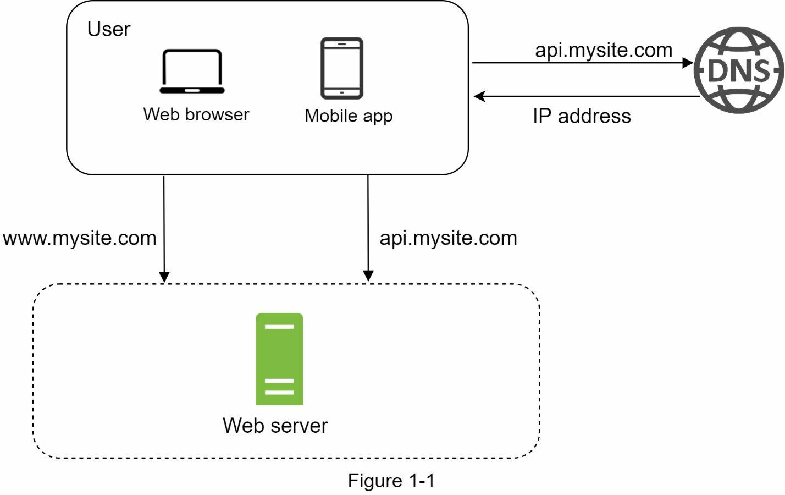
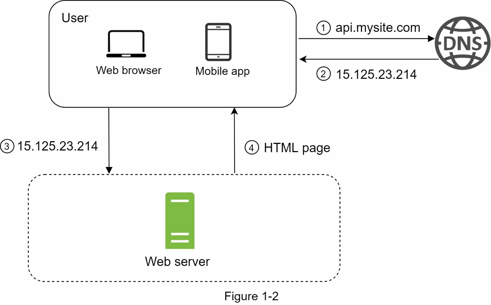
Configuração de servidor único Uma jornada de mil milhas começa com um único passo, e construir um sistema complexo não é diferente. Para começar de forma simples, tudo roda em um único servidor. A Figura 1-1 ilustra essa configuração, na qual a aplicação web, o banco de dados, o cache e os demais componentes rodam no mesmo servidor, etc.
Para entender essa configuração, vale examinar o fluxo das requisições e a origem do tráfego. Vamos começar pelo fluxo das requisições (Figura 1-2).
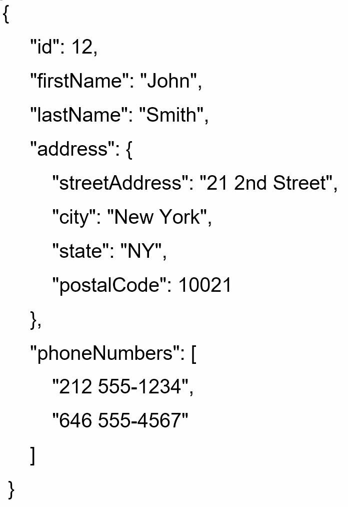
1. Usuários acessam sites através de nomes de domínio, como api.mysite.com. Normalmente, o Sistema de Nomes de Domínio (DNS) é um serviço pago por terceiros e não hospedado por nossos servidores.
2. O endereço do protocolo de Internet (IP) é devolvido ao navegador ou aplicativo móvel. No exemplo, o endereço IP 15.125.23.214 é devolvido.
3. Assim que o endereço IP for obtido, os requisições do Protocolo de Transferência de Hipertexto (HTTP) [1] são enviados diretamente para seu servidor web.
4. O servidor da web devolve páginas HTML ou resposta JSON para renderização.
Em seguida, vamos examinar a fonte de tráfego. O tráfego para o seu servidor vem de duas fontes: aplicativo web e aplicativo móvel.
Aplicação • Web: usa uma combinação de linguagens do lado do servidor (Java, Python, etc.) para lidar com lógica de negócios, armazenamento, etc., e linguagens do lado do cliente (HTML e JavaScript) para apresentação.
• Aplicação móvel: protocolo HTTP é o protocolo de comunicação entre o aplicativo móvel e o servidor web. JavaScript Object Notation (JSON) é comumente usado no formato de resposta API para transferir dados devido à sua simplicidade. Um exemplo da resposta API no formato JSON é mostrado abaixo: GET usuários12 – Recuperar objeto de usuário para ID = 12
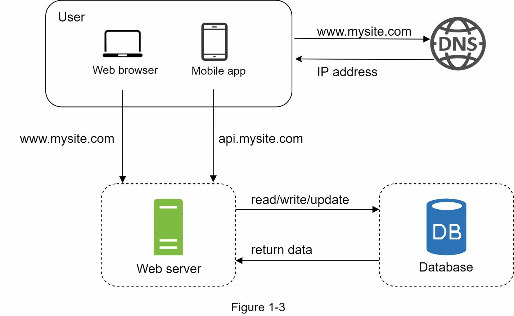
Banco de dados
Com o crescimento do usuário BASE, um servidor não é suficiente, e precisamos de vários servidores: um para tráfego web/móvel, o outro para o banco de dados (Figura 1-3). Separando o tráfego web/móvel (tela web) e os servidores de banco de dados (tela de dados) permite que eles sejam escalados independentemente.
Que bancos de dados usar?
Você pode escolher entre um banco de dados relacional tradicional e um banco de dados não relacional. Vamos examinar suas diferenças.
Bancos de dados relacionais também são chamados de sistema de gerenciamento de bancos de dados relacionais (RDBMS) ou banco de dados SQL. Os mais populares são o banco de dados MySQL, Oracle, PostgreSQL, etc.
Bancos de dados relacionais representam e armazenam dados em tabelas e linhas. Você pode realizar operações de junção usando SQL em diferentes tabelas de banco de dados.
Bancos de dados não relacionais também são chamados de bancos de dados NoSQL. Os mais populares são CouchDB, Neo4j, Cassandra, HBase, Amazon DynamoDB, etc. [2]. Essas bancos de dados são agrupadas em quatro categorias: armazenamentos de chave-valor, lojas de gráficos, lojas de colunas e lojas de documentos. Operações de adesão geralmente não são suportadas em bancos de dados não relacionais.
Para a maioria dos desenvolvedores, bancos de dados relacionais são a melhor opção porque eles têm sido ao redor por mais de 40 anos e historicamente, eles têm funcionado bem. No entanto, se bancos de dados relacionais não são adequados para seus casos de uso específico, é fundamental explorar além de bancos de dados relacionais. Bancos de dados não relacionais podem ser a escolha certa se • sua aplicação requer uma latência super baixa.
• Seus dados não estão estruturados, ou você não tem nenhum dado relacional.
• Você só precisa serializar e desserializar dados (JSON, XML, YAML, etc.).
• Você precisa armazenar uma enorme quantidade de dados.
scaling vertical vs scaling horizontal scaling vertical, referido como "escale-se", significa o processo de adicionar mais energia (CPU, RAM, etc.) aos seus servidores. scaling horizontal, chamado de "escala-out", permite que você escale adicionando mais servidores em seu conjunto de recursos.
Quando o tráfego está baixo, scaling vertical é uma ótima opção, e a simplicidade do scaling vertical é sua principal vantagem. Infelizmente, vem com sérias limitações.
• scaling vertical tem um limite difícil. É impossível adicionar CPU ilimitado e memória a um único servidor.
• scaling vertical não tem failover e redundância. Se um servidor cair, o site/app cai completamente.
scaling horizontal é mais desejável para aplicações em larga escala devido às limitações do scaling vertical.
No projeto anterior, os usuários estão conectados diretamente ao servidor web. Usuários não conseguirão acessar o site se o servidor estiver offline. Em outro cenário, se muitos usuários acessarem o servidor da web simultaneamente e ele atingir o limite de carga do servidor da web, os usuários geralmente experimentam uma resposta mais lenta ou falham em se conectar ao servidor. Um load balancer é a melhor técnica para resolver esses problemas.
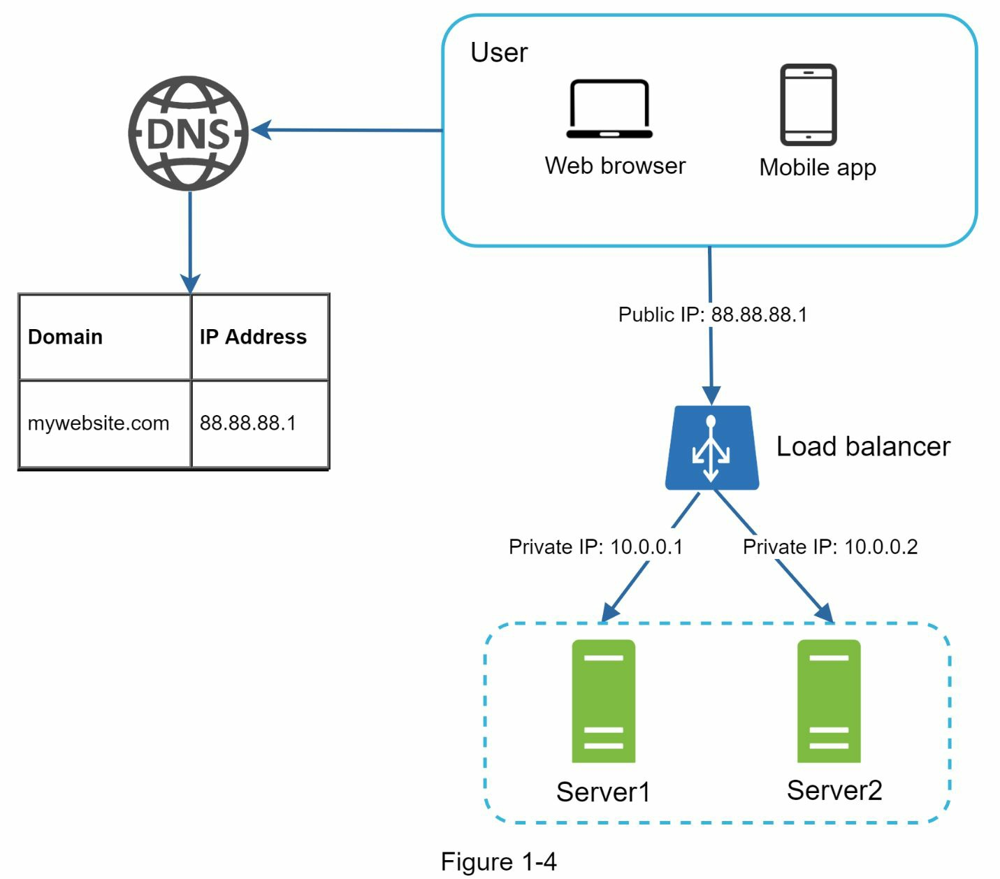
Load balancer
Um load balancer distribui uniformemente tráfego de entrada entre servidores web que são definidos em um conjunto de carga balanceada. A figura 1-4 mostra como um load balancer funciona.
Como mostrado na Figura 1-4, os usuários se conectam diretamente ao público IP do load balancer. Com esta configuração, servidores web são inalcançáveis diretamente por clientes. Para uma melhor segurança, IPs privados são usados para comunicação entre servidores. Um IP privado é um endereço IP acessível apenas entre servidores na mesma rede, no entanto, é inacessível através da internet. O load balancer se comunica com servidores através de IPs privados.
Na Figura 1-4, depois que um load balancer e um segundo servidor web são adicionados, nós resolvemos com sucesso nenhum problema failover e melhoramos a disponibilidade da camada web. Os detalhes são explicados abaixo: • Se o servidor 1 ficar offline, todo o tráfego será encaminhado para o servidor 2. Isso impede que o site fique offline. Também adicionaremos um novo servidor saudável ao servidor para equilibrar a carga.
• Se o tráfego do site cresce rapidamente, e dois servidores não são suficientes para lidar com o tráfego, o load balancer pode lidar com este problema graciosamente. Você só precisa adicionar mais servidores ao pool do servidor web, e o load balancer automaticamente começa a enviar requisições para eles.
Agora, o nível da web parece bom, e o nível de dados? O projeto atual tem um banco de dados, Então não suporta failover e redundância. Replicação de banco de dados é uma técnica comum para resolver esses problemas. Vamos dar uma olhada.
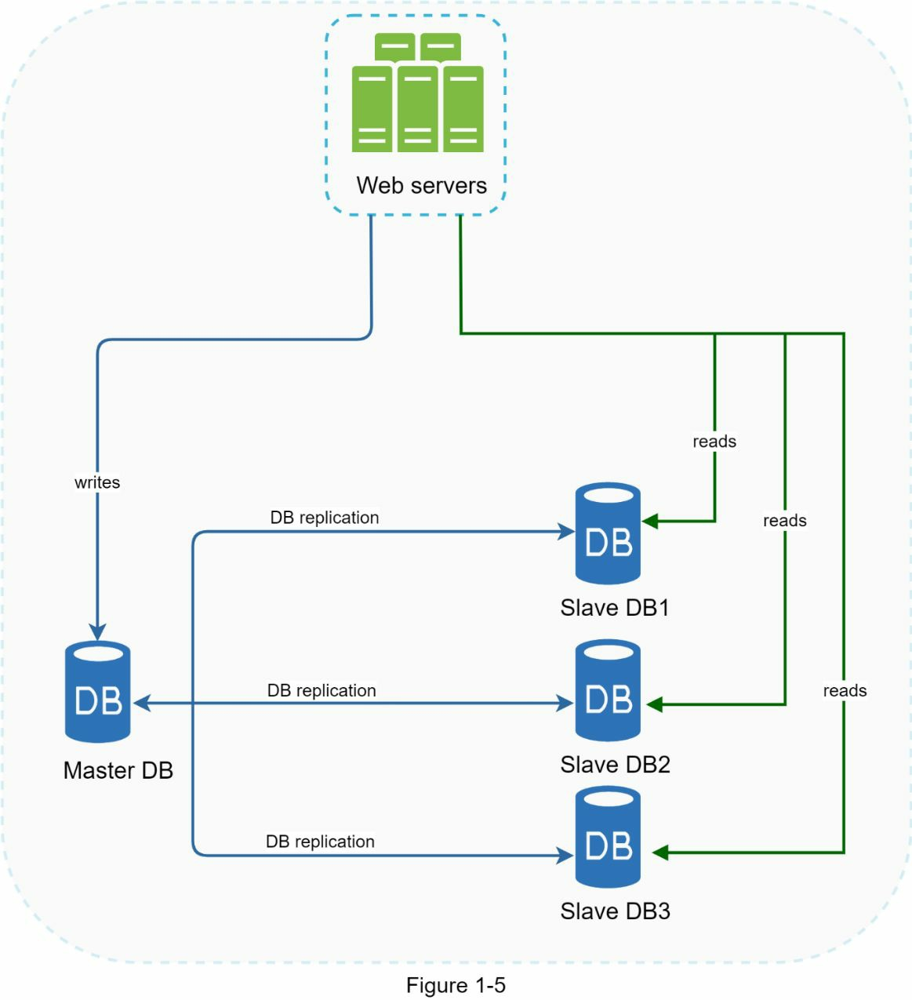
Replicação do banco de dados Citado da Wikipédia: "Replicação de banco de dados pode ser usada em muitos sistemas de gerenciamento de banco de dados, geralmente com uma relação master/slave entre o original (master) e as cópias (slaves)" [3].
Um banco de dados master geralmente só suporta operações de gravação. Um banco de dados slave recebe cópias dos dados do banco de dados master e só suporta operações de leitura. Todos os comandos modificadores de dados como inserir, excluir ou atualizar devem ser enviados para o banco de dados master. A maioria das aplicações requer uma proporção muito maior de leituras para escrever; assim, o número de bancos de dados slave em um sistema é geralmente maior do que o número de bancos de dados master. A figura 1-5 mostra um banco de dados master com vários bancos de dados slave.
Vantagens da replicação do banco de dados: • Melhor desempenho: no modelo master-slave, todas as gravações e atualizações acontecem em nós master, enquanto que as operações de leitura são distribuídas em nós slave. Este modelo melhora o desempenho porque permite que mais consultas sejam processadas em paralelo.
• Confiabilidade: se um de seus servidores de banco de dados for destruído por um desastre natural, como um tufão ou um terremoto, os dados ainda estão preservados. Você não precisa se preocupar com a perda de dados porque os dados são replicados em vários locais.
• Alta disponibilidade: replicando dados em diferentes locais, seu site permanece em Operação mesmo que um banco de dados esteja offline como você pode acessar dados armazenados em outro servidor de banco de dados.
Na seção anterior, discutimos como um load balancer ajudou a melhorar a disponibilidade do sistema. Nós fazemos a mesma pergunta aqui: e se um dos bancos de dados ficar offline? O projeto arquitetônico discutido na Figura 1-5 pode lidar com este caso: • Se apenas um banco de dados slave estiver disponível e ficar offline, as operações de leitura serão direcionadas para o banco de dados master temporariamente. Assim que o problema for encontrado, um novo banco de dados do slave substituirá o antigo. No caso de vários bancos de dados slave estarem disponíveis, operações de leitura são redirecionadas para outros bancos de dados slave saudáveis. Um novo servidor de banco de dados substituirá o antigo.
• Se o banco de dados master ficar offline, um banco de dados slave será promovido a novo master. Todas as operações do banco de dados serão executadas temporariamente no novo banco de dados master. Um novo banco de dados slave substituirá o antigo para replicação de dados imediatamente.
Em sistemas de produção, promovendo um novo master é mais complicado como os dados em um slave O banco de dados pode não estar atualizado. Os dados desaparecidos precisam ser atualizados executando scripts de recuperação de dados. Embora outros métodos de replicação como multi-mestres e replicação circular possam ajudar, essas configurações são mais complicadas, e suas discussões estão além do escopo deste livro. Leitores interessados devem se referir aos materiais de referência listados.4# [5- O que é isso?
A figura 1-6 mostra o System Design após adicionar o load balancer e a replicação do banco de dados.
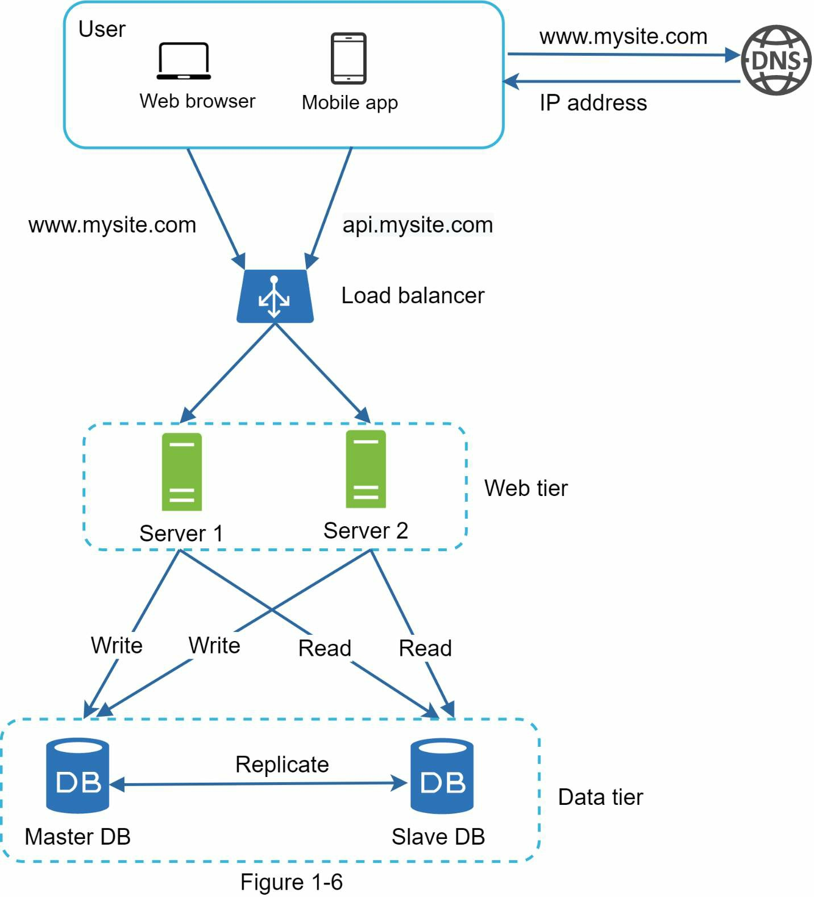
Vamos dar uma olhada no design: • Um usuário recebe o endereço IP do load balancer do DNS.
• Um usuário conecta o load balancer com este endereço IP.
• O requisição HTTP é encaminhado para o servidor 1 ou o servidor 2.
• Um servidor web lê dados de usuários de um banco de dados slave.
• Um servidor web encaminha qualquer operação modificadora de dados para o banco de dados master. Isso inclui escrever, atualizar e excluir operações.
Agora, você tem uma compreensão sólida da web e dos níveis de dados, é hora de melhorar o tempo de carga/resposta. Isso pode ser feito adicionando uma camada cache e mudando o conteúdo estático (JavaScript/CSS/image/video files) para a rede de entrega de conteúdo (CDN).
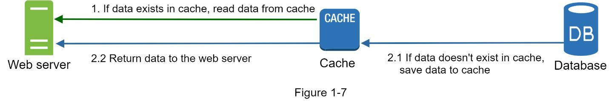
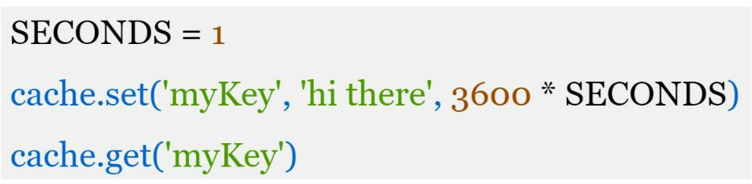
Cache
Um cache é uma área de armazenamento temporário que armazena o resultado de respostas caras ou dados frequentemente acessados na memória para que os requisições subsequentes sejam atendidos mais rapidamente. Como ilustrado na Figura 1-6, toda vez que uma nova página da web carrega, uma ou mais chamadas de banco de dados são executadas para buscar dados. O desempenho da aplicação é muito afetado por ligar para o banco de dados repetidamente.
O cache pode atenuar esse problema.
Camada de cache
O nível cache é uma camada temporária de armazenamento de dados, muito mais rápido do que o banco de dados. Os benefícios de ter um nível cache separado incluem melhor desempenho do sistema, capacidade de reduzir cargas de trabalho do banco de dados, e a capacidade de escalar o nível cache independentemente. Figura 1-7 mostra uma possível configuração de um servidor cache: após receber um requisição, um servidor web primeiro verifica se o cache tem a resposta disponível. Se tiver, envia dados de volta para o cliente. Se não, ele consulta o banco de dados, armazena a resposta no cache, e envia de volta para o cliente. Essa estratégia caching é chamada de cache.
Outro. caching As estratégias estão disponíveis dependendo do tipo de dados, tamanho e padrões de acesso. Um estudo anterior explica o quão diferente caching As estratégias funcionam.6- O que é isso?
Interagindo com servidores cache é simples porque a maioria dos servidores cache fornece APIs para linguagens de programação comuns. O seguinte trecho de código mostra típico Memcached APIs: Considerações para usar cache Aqui estão algumas considerações para usar um sistema cache, • decidir quando usar cache. Considere usar cache quando os dados são lidos com frequência, mas modificados com pouca frequência. Como dados em cache são armazenados em memória volátil, um servidor cache não é ideal para dados persistentes. Por exemplo, se um servidor cache reiniciar, todos os dados na memória são perdidos. Assim, dados importantes devem ser salvos em lojas de dados persistentes.
Política de expiração do •. É uma boa prática implementar uma política de expiração. Assim que os dados do cache expirarem, são removidos do cache. Quando não há política de expiração, dados armazenados em cache serão armazenados na memória permanentemente. É aconselhável não fazer a data de validade muito curta, pois isso fará com que o sistema recarregue dados do banco de dados com muita frequência.
Enquanto isso, é aconselhável não deixar a data de validade muito longa, já que os dados podem ficar obsoletos.
• Isso envolve manter a loja de dados e o cache Em sincronia. Inconsistência pode acontecer porque as operações modificadoras de dados na loja de dados e cache Não estão em uma única transação. Ao escalar através de várias regiões, mantendo a consistência entre
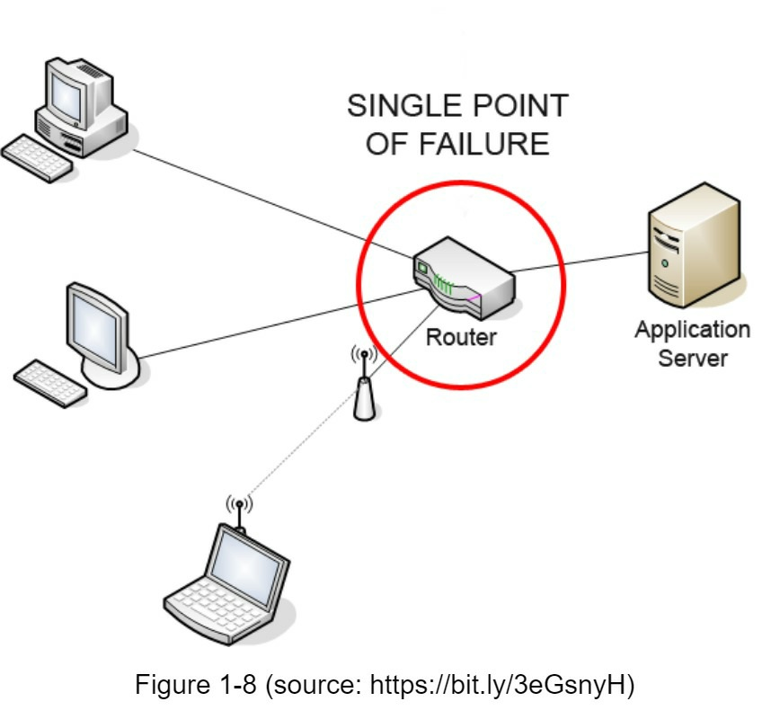
A loja de dados e o cache estão desafiando. Para mais detalhes, consulte o artigo intitulado "Scaling Memcache at Facebook" publicado por Facebook [7].
• Mitigando falhas: um único servidor cache representa um potencial Single Point of Failure (SPOF), definido na Wikipédia da seguinte forma: “Um Single Point of Failure (SPOF) é uma parte de um sistema que, se falhar, impedirá todo o sistema de funcionar” [8]. Como resultado, vários servidores cache em diferentes data centers são recomendados para evitar SPOF. Outra abordagem recomendada é sobreprovisionar a memória necessária por certas porcentagens.
Isso fornece um amortecedor à medida que o uso da memória aumenta.
• Política de despejo: cache Está cheio, qualquer requisição para adicionar itens ao cache Pode causar a remoção de itens existentes. Isso se chama cache Despejo. Menos recentemente usado (LRU) é o mais popular Cache Eviction Policy. . Outras políticas de despejo, como as menos usadas frequentemente (LFU) ou Primeiro na Primeira Saída (FIFO), pode ser adotado para satisfazer diferentes casos de uso.
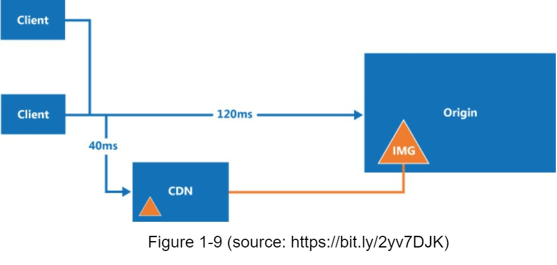
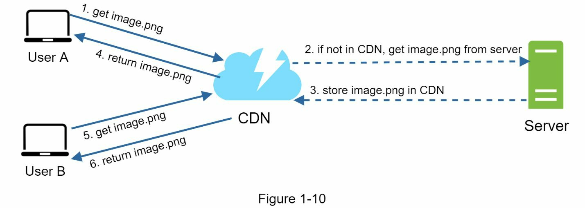
Rede de entrega de conteúdo (CDN) Um CDN é uma rede de servidores geograficamente dispersos usados para entregar conteúdo estático. CDN
servidores cache conteúdo estático como imagens, vídeos, CSS, arquivos JavaScript, etc.
Conteúdo dinâmico caching é um conceito relativamente novo e além do escopo deste livro. Ele permite o caching de páginas HTML que são baseadas no caminho de solicitação, strings de consulta, cookies e cabeçalhos de requisições. Consulte o artigo mencionado no material de referência [9] para mais sobre isso. Este livro foca em como usar CDN para conteúdo estático cache.
Aqui está como o CDN funciona no alto nível: quando um usuário visita um site, um servidor CDN mais próximo do usuário entregará conteúdo estático. Intuitivamente, os usuários são de servidores CDN, quanto mais lento o site carrega. Por exemplo, se os servidores CDN estiverem em São Francisco, usuários em Los Angeles terão conteúdo mais rápido do que os usuários na Europa. Figura 1-9 é um grande exemplo que mostra como CDN melhora o tempo de carga.
Figura 1-10 demonstra o fluxo de trabalho CDN.
1. O usuário A tenta obter image.png por meio da URL da imagem. O domínio dessa URL é fornecido pelo provedor de CDN. As duas URLs a seguir exemplificam os endereços de imagens nas CDNs da Amazon e da Akamai: • https://mysite.cloudfront.net/logo.jpg • https://mysite.akamai.com/image-manager/img/logo.jpg 2. Se o servidor da CDN não tiver image.png em cache, ele solicitará o arquivo à origem, que pode ser um servidor web ou um serviço de armazenamento online, como o Amazon S3.
3. A origem devolve image.png ao servidor CDN, que inclui o cabeçalho opcional HTTP Time-to-Live (TTL) que descreve quanto tempo a imagem é armazenada.
4. O CDN caches a imagem e devolve-a ao usuário A. A imagem permanece escondida no CDN até que o TTL expire.
5. O usuário B envia um requisição para obter a mesma imagem.
6. A imagem é devolvida do cache enquanto o TTL não expirar.
Considerações sobre usar um CDN
Custo •: CDNs são gerenciados por fornecedores de terceiros, e você é cobrado por transferências de dados dentro e fora do CDN. caching pouco usados não oferece benefícios significativos, então deve considerar tirá-los do CDN.
• Definindo uma expiração adequada do cache, para conteúdo sensível ao tempo, definir um tempo de expiração do cache é importante. O prazo de validade do cache não deve ser muito longo nem muito curto. Se for muito longo, o conteúdo pode não ser mais fresco. Se for muito curto, pode causar recarregamento de conteúdo de servidores de origem para o CDN.
• CDN Você deve considerar como seu site / aplicação lida com CDN
Falha. Se houver uma falha temporária do CDN, os clientes devem ser capazes de detectar o problema e solicitar recursos da origem.
• Invalidando arquivos, você pode remover um arquivo do CDN antes que ele expire realizando uma das seguintes operações: • Invalida o objeto CDN usando APIs fornecido por fornecedores CDN.
• usa versão de objetos para servir uma versão diferente do objeto. Para a versão de um objeto, você pode adicionar um parâmetro ao URL, como um número de versão. Por exemplo, a versão 2 é adicionada ao texto da consulta: image.png?v=2.
A figura 1-11 mostra o projeto após o CDN e cache serem adicionados.
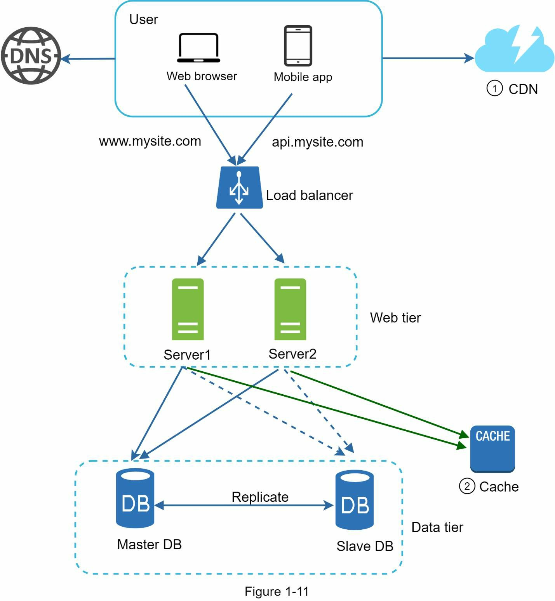
1. Os ativos estáticos (JS, CSS, imagens, etc.) não são mais servidos por servidores da web. Eles são trazidos do CDN para melhor desempenho.
2. A carga do banco de dados é reduzida pelos dados do caching.
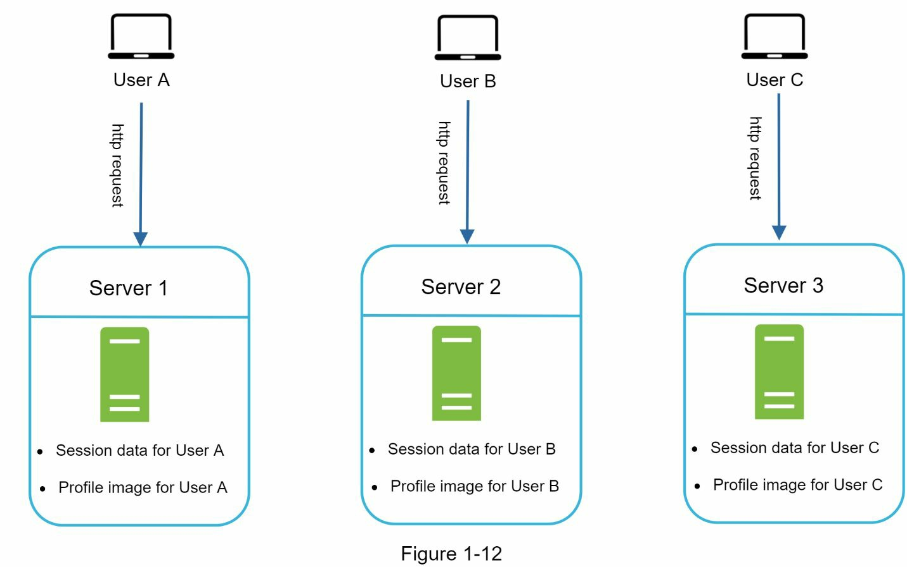
Camada web stateless Agora é hora de considerar escalar a camada horizontalmente. Para isso, precisamos mover o estado (por exemplo, dados de sessão de usuário) para fora da camada web. Uma boa prática é armazenar dados de sessão no armazenamento persistente, como banco de dados relacional ou NoSQL. Cada servidor web no cluster pode acessar dados do estado de bancos de dados. Isso é chamado de camada stateless.
Arquitetura stateful Um servidor stateful e o servidor stateless têm algumas diferenças chave. Um servidor stateful lembra dados do cliente (estado) de um requisição para o outro. Um servidor stateless não mantém nenhuma informação do estado.
A figura 1-12 mostra um exemplo de uma arquitetura stateful.
Na figura 1-12, os dados da sessão do usuário A e a imagem do perfil são armazenados no servidor 1. Para autenticar o usuário A, os requisições do HTTP devem ser encaminhados para o servidor 1. Se uma solicitação for enviada para outros servidores como o servidor 2, a autenticação falharia porque o servidor 2 não contém os dados de sessão do usuário A.
Da mesma forma, todos os requisições do HTTP do usuário B devem ser encaminhados para o servidor 2; todos os requisições do usuário C devem ser enviados para o servidor 3.
O problema é que cada requisição do mesmo cliente deve ser encaminhado para o mesmo servidor. Isso pode ser feito com sessões pegajosas na maioria dos load balancers [10], no entanto, isso adiciona a sobrecarga. Adicionar ou remover servidores é muito mais difícil com essa abordagem. Também é um desafio lidar com falhas no servidor.
Arquitetura stateless A figura 1-13 mostra a arquitetura stateless.
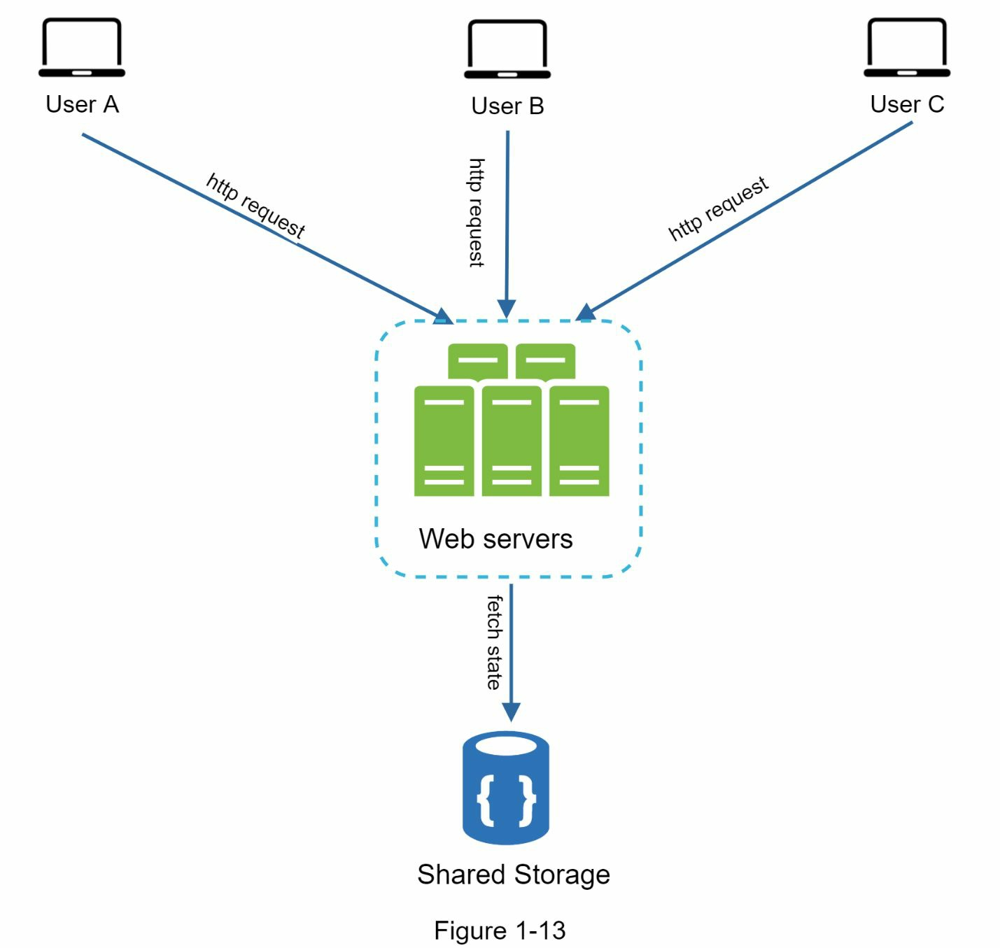
Nesta arquitetura stateless, os requisições HTTP dos usuários podem ser enviados para qualquer servidor web, que obtenha dados de estado de uma loja de dados compartilhada. Os dados do estado são armazenados em uma loja de dados compartilhada e mantidos fora de servidores web. Um sistema stateless é mais simples, robusto e escalável.
A figura 1-14 mostra o design atualizado com uma camada stateless.
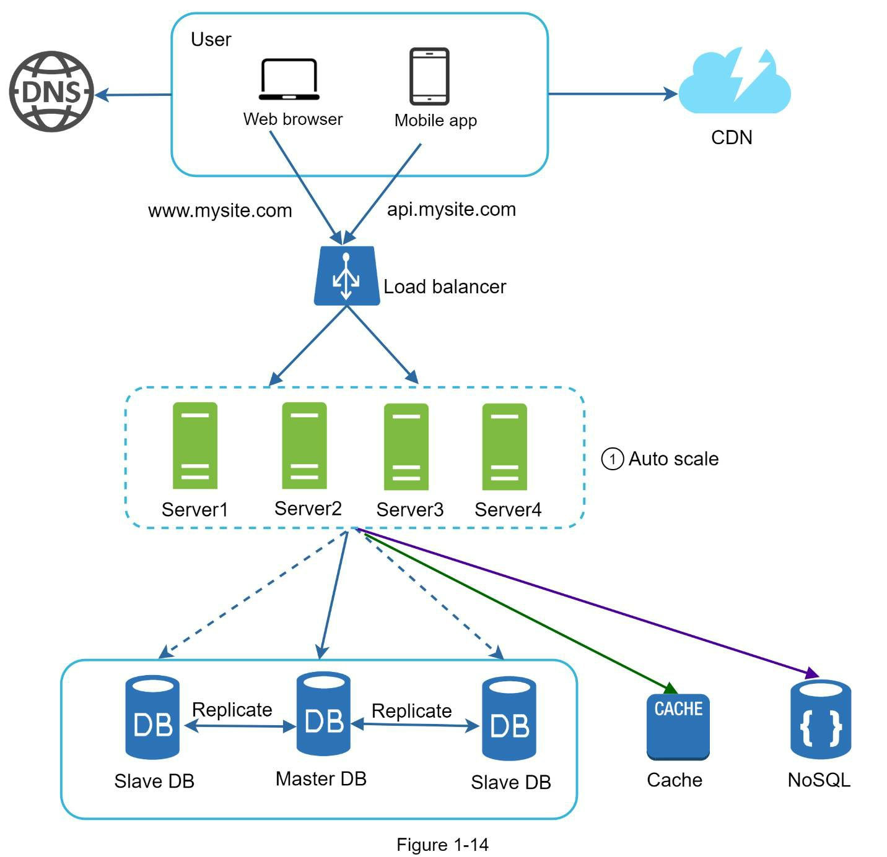
Na Figura 1-14, tiramos os dados da sessão da camada web e os armazenamos na loja de dados persistente. A loja de dados compartilhada pode ser um banco de dados relacional, Memcached/Redis, NoSQL, etc. A loja de dados NoSQL é escolhida por ser fácil de escalar. Auto-escalar significa adicionar ou remover servidores automaticamente com base na carga de tráfego. Depois que os dados do estado são removidos dos servidores web, a auto-escalagem da camada web é facilmente conseguida adicionando ou removendo servidores com base na carga de tráfego.
Seu site cresce rapidamente e atrai um número significativo de usuários internacionalmente. Para melhorar a disponibilidade e proporcionar uma melhor experiência ao usuário em áreas geográficas mais amplas, apoiar múltiplos data centers é crucial.
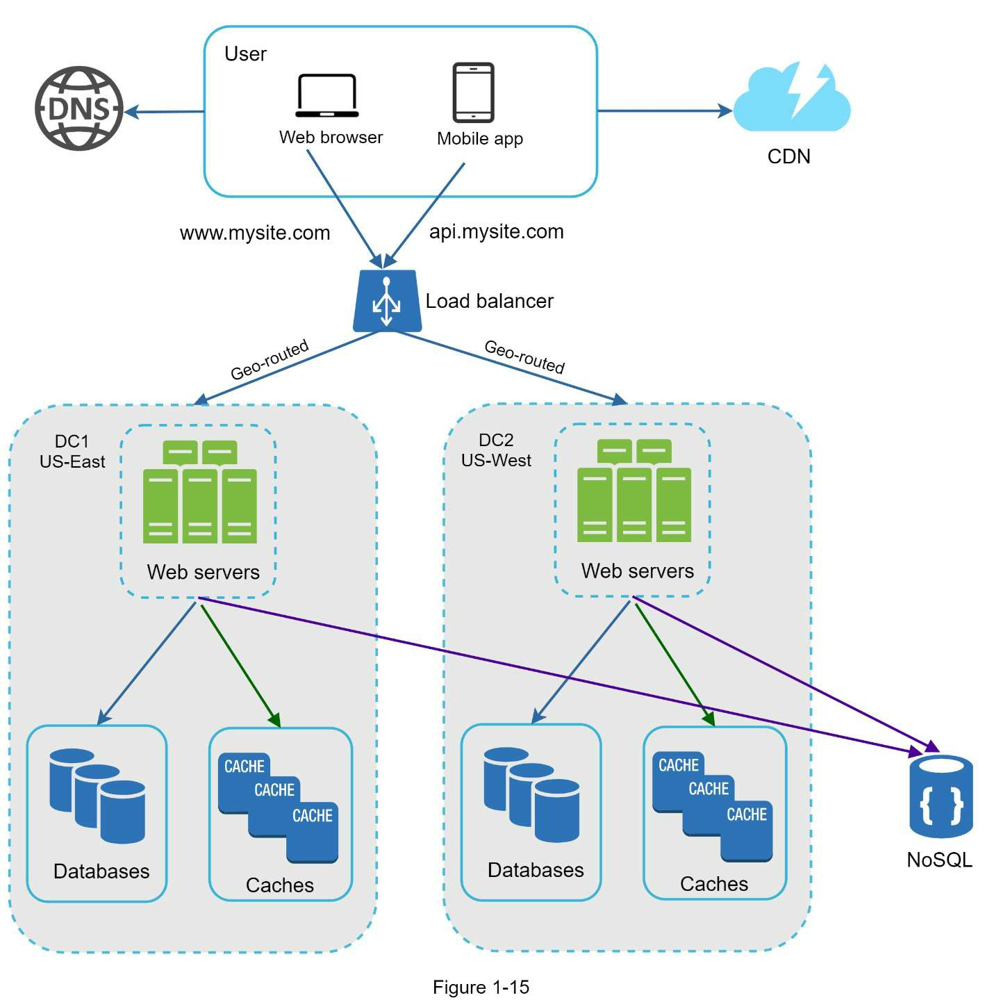
Data centers
Figura 1-15 mostra uma configuração de exemplo com dois data centers. Em operação normal, os usuários são encaminhados para geoDNS, também conhecido como geo-roteados, para o data center mais próximo, com um tráfego dividido de x% nos EUA-Leste e (100 - x) em US-West. geoDNS é um serviço DNS que permite que nomes de domínio sejam resolvidos para endereços IP com base na localização de um usuário.
No caso de qualquer falha significativa do data center, dirigimos todo o tráfego para um data center saudável.
Na Figura 1-16, data center 2 (US-West) está desligado, e 100% do tráfego é encaminhado para data center 1 (US-East).
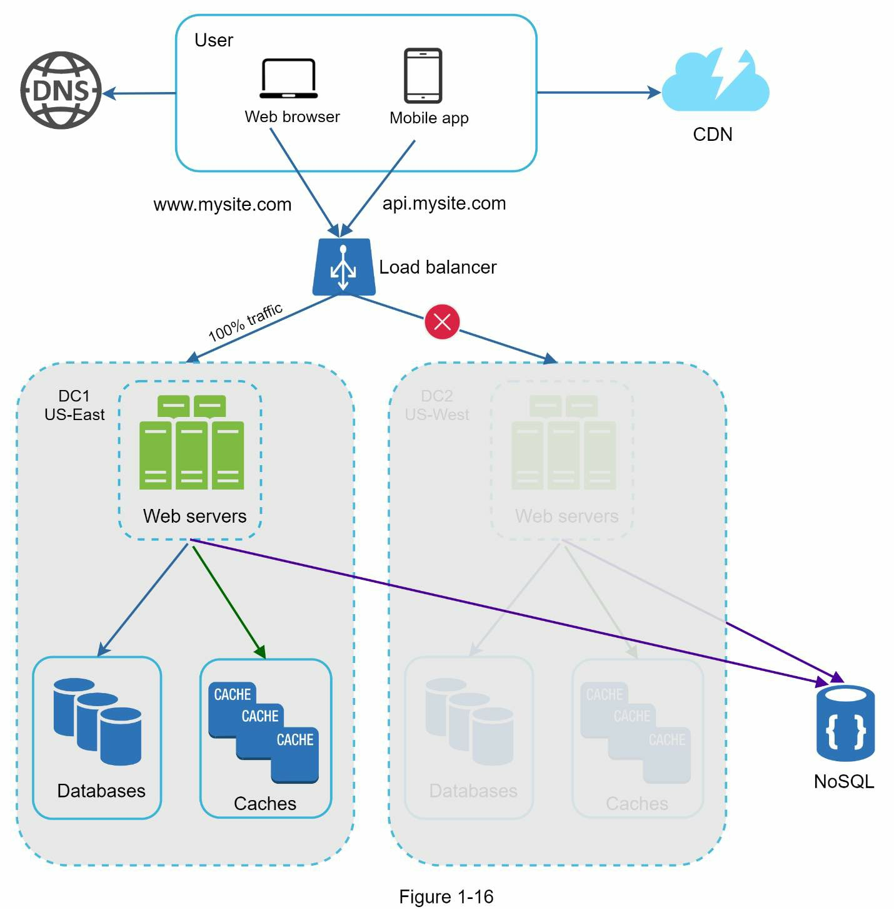
Vários desafios técnicos devem ser resolvidos para alcançar a configuração multi-data center: redirecionamento de tráfego •: ferramentas eficazes são necessárias para direcionar o tráfego para o data center correto.
GeoDNS pode ser usado para direcionar o tráfego para o data center mais próximo dependendo de onde um usuário está localizado.
Sincronização de dados •: usuários de diferentes regiões poderiam usar diferentes bancos de dados locais ou caches. Em casos failover, o tráfego pode ser encaminhado para um data center onde os dados não estão disponíveis.
Uma estratégia comum é replicar dados em vários data centers. Um estudo anterior mostra como Netflix implementa replicação assíncrona multi-data center [11].
• Teste e implantação com multi-...data center Setup, é importante testar seu site/aplicação em diferentes locais. Ferramentas automáticas de implantação são vitais para manter os serviços consistentes através de todos os data centers [11- O que é isso?
Para aumentar a escala do nosso sistema, precisamos dissociar diferentes componentes do sistema para que possam ser escalados independentemente. A fila de mensagens é uma estratégia chave empregada por muitos sistemas distribuídos no mundo real para resolver esse problema.
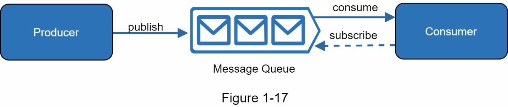
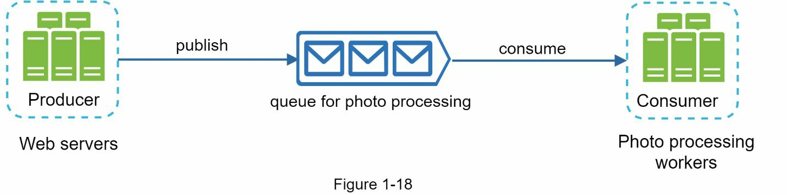
Fila de mensagens
Uma fila de mensagens é um componente durável, armazenado na memória, que suporta comunicação assíncrona. Ele serve como um tampão e distribui requisições assíncronos. A arquitetura básica de uma fila de mensagens é simples. Serviços de entrada, chamados produtores/publicadores, criar mensagens, e publicá-los em uma fila de mensagens. Outros serviços ou servidores, chamados consumidores/subscritores, conectam-se à fila, e executam ações definidas pelas mensagens.
O modelo é mostrado na Figura 1-17.
A dissociação faz da fila de mensagens uma arquitetura preferida para construir uma aplicação escalável e confiável. Com a fila de mensagens, o produtor pode postar uma mensagem na fila quando o consumidor não estiver disponível para processá-la. O consumidor pode ler mensagens da fila mesmo quando o produtor não está disponível.
Considere o seguinte caso de uso: seu aplicativo suporta personalização de fotos, incluindo corte, afiamento, borramento, etc. Essas tarefas de personalização levam tempo para ser concluídas. Na Figura 1-18, servidores da web publicam trabalhos de processamento de fotos na fila de mensagens. Processamento de fotos workers pegam trabalhos na fila de mensagens e executam tarefas de personalização de fotos. O produtor e o consumidor podem ser escalados independentemente. Quando o tamanho da fila se torna grande, mais workers são adicionados para reduzir o tempo de processamento.
No entanto, se a fila estiver vazia na maioria das vezes, o número de workers pode ser reduzido.
Logs, métricas e automação Ao trabalhar com um pequeno site que funciona em alguns servidores, registro, métricas e suporte à automação são boas práticas, mas não uma necessidade. No entanto, agora que seu site cresceu para servir um grande negócio, investir nessas ferramentas é essencial.
Monitoramento do erro logs é importante porque ajuda a identificar erros e problemas no sistema. Você pode monitorar o erro logs por nível de servidor ou usar ferramentas para adicioná-los a um serviço centralizado para fácil busca e visualização.
Coletar diferentes tipos de métricas nos ajuda a obter insights de negócios e entender o estado de saúde do sistema. Algumas das seguintes métricas são úteis: • Host level métricas: CPU, Memória, disco I/O, etc.
• métricas de nível agregado: por exemplo, o desempenho de toda a camada de banco de dados, camada cache, etc.
• Principais métricas de negócios: usuários ativos diários, retenção, receita, etc.
Automação: quando um sistema fica grande e complexo, precisamos construir ou alavancar ferramentas de automação para melhorar a produtividade. Integração contínua é uma boa prática, na qual cada verificação de código é verificada através da automação, permitindo que as equipes detectem problemas precocemente. Além disso, automatizar sua construção, testar, implantar o processo, etc. Poderia melhorar significativamente a produtividade do desenvolvedor.
Adicionando filas de mensagens e ferramentas diferentes Figura 1-19 mostra o design atualizado. Devido à restrição espacial, apenas um data center é mostrado na figura.
1. O projeto inclui uma fila de mensagens, o que ajuda a tornar o sistema mais flexível e resistente à falha.
2. Registrando, monitorando, métricas e ferramentas de automação estão incluídas.
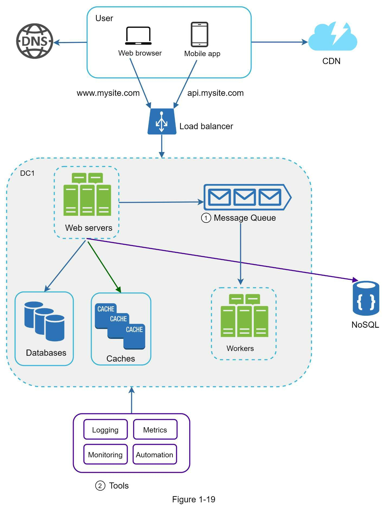
À medida que os dados crescem a cada dia, seu banco de dados fica mais sobrecarregado. É hora de escalar o nível de dados.
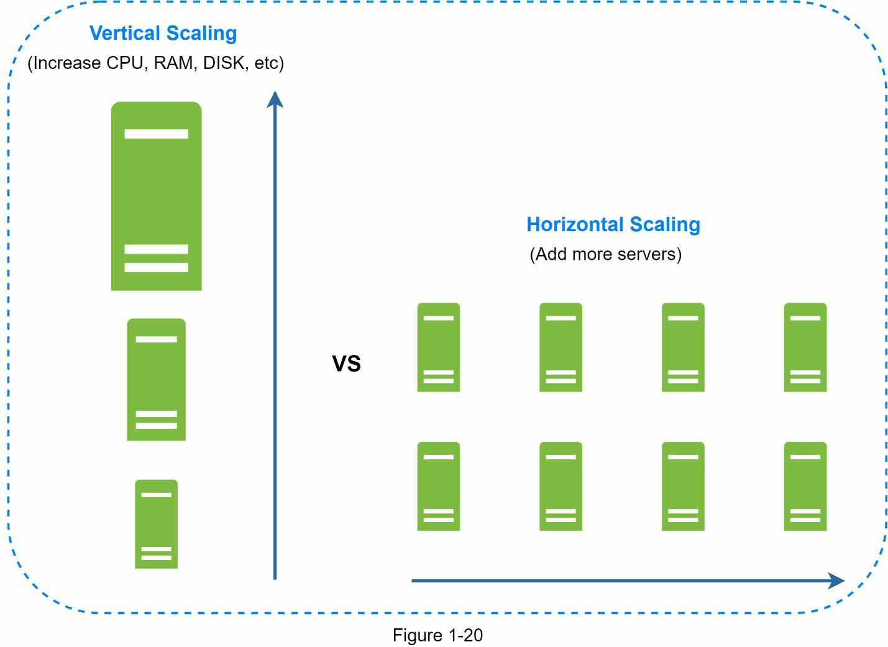
Scaling do banco de dados
Existem duas abordagens amplas para escala de banco de dados: scaling vertical e scaling horizontal.
Scaling vertical
scaling vertical, também conhecido como scaling up, é o escalonamento adicionando mais potência (CPU, RAM, DISK, etc.) a uma máquina existente. Há alguns servidores de banco de dados poderosos. De acordo com o Amazon Relational Database Service (RDS) [12], você pode obter um servidor de banco de dados com 24 TB
de RAM. Este tipo de servidor de banco de dados poderoso poderia armazenar e lidar com muitos dados. Por exemplo, stackoverflow.com em 2013 tinha mais de 10 milhões de visitantes únicos mensais, mas só tinha banco de dados 1 master [13]. No entanto, scaling vertical vem com algumas desvantagens graves: • Você pode adicionar mais CPU, RAM, etc. ao seu servidor de banco de dados, mas há limites de hardware. Se você tem um grande usuário BASE, um único servidor não é suficiente.
• Maior risco de um único ponto de falhas.
• O custo total do scaling vertical é alto. Servidores poderosos são muito mais caros.
Scaling horizontal scaling horizontal, também conhecido como sharding, é a prática de adicionar mais servidores. A figura 1-20 compara scaling vertical com scaling horizontal.
sharding separa grandes bancos de dados em partes menores, mais facilmente gerenciadas, chamadas shards.
Cada shard compartilha o mesmo esquema, embora os dados reais de cada shard sejam exclusivos do shard.
A figura 1-21 mostra um exemplo de bancos de dados. Os dados do usuário são alocados em um servidor de banco de dados baseado no usuário IDs. Sempre que acessar dados, uma função hash é usada para encontrar o shard correspondente. Em nosso exemplo, user_id % 4 é usado como a função hash. Se o resultado
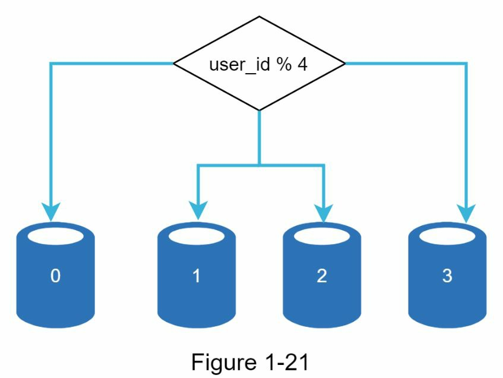
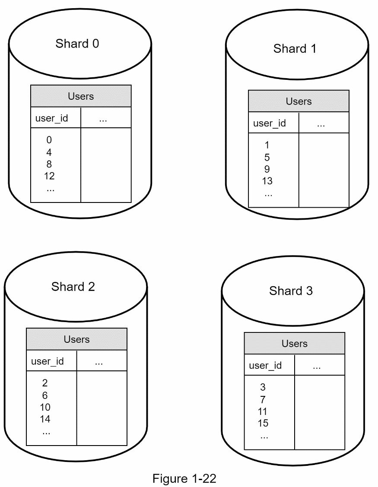
igual a 0, shard 0 é usado para armazenar e buscar dados. Se o resultado for igual a 1, shard 1 é usado.
A mesma lógica se aplica aos outros shards.
A figura 1-22 mostra a tabela de usuários em bancos de dados.
O fator mais importante a ser considerado ao implementar uma estratégia sharding é a escolha da chave sharding. A chave sharding (conhecido como uma chave de partição) consiste em uma ou mais colunas que determinam como os dados são distribuídos. Como mostrado na Figura 1-22, “user_id” é a chave sharding. Uma chave sharding permite que você recupere e modifique os dados de forma eficiente, encaminhando consultas de banco de dados para o banco de dados correto. Ao escolher uma chave sharding, uma das mais importantes O critério é escolher uma chave que possa distribuir dados uniformemente.
sharding é uma ótima técnica para escalar o banco de dados, mas está longe de ser uma solução perfeita. Introduz complexidades e novos desafios ao sistema: Resharding dos dadosDados resharding são necessários quando 1) um único shard não poderia mais conter mais dados devido ao rápido crescimento. 2) Certo shards pode experimentar exaustão shard mais rápido do que outros devido à distribuição desigual de dados. Quando a exaustão do shard acontece, requer atualização da função sharding e transferência de dados. Consistent Hashing, que será discutido no Capítulo 5, é uma técnica comumente usada para resolver esse problema.
Problema das celebridadesIsso também é chamado de problema de hotspot. Acesso excessivo a um shard específico pode causar sobrecarga no servidor. Imagine dados para Katy Perry, Justin Bieber, e Lady Gaga todos acabam no mesmo shard. Para aplicações sociais, o shard ficará sobrecarregado com operações de leitura. Para resolver esse problema, talvez precisemos alocar um shard para cada celebridade. Cada shard pode precisar de mais divisórias.
Joins e desnormalizaçãoUma vez que um banco de dados foi cortado em vários servidores, é difícil realizar operações de junção em um banco de dados shards. Uma solução comum é desnormalizar o banco de dados para que as consultas possam ser realizadas em uma única tabela.
Na figura. 1- O quê?23, nós shard Bancos de dados para apoiar o rápido aumento do tráfego de dados. Ao mesmo tempo, algumas das funcionalidades não relacionais são movidas para um NoSQL Armazenamento de dados para reduzir a carga do banco de dados. Aqui está um artigo que cobre muitos casos de uso de NoSQL [14- O que é isso?
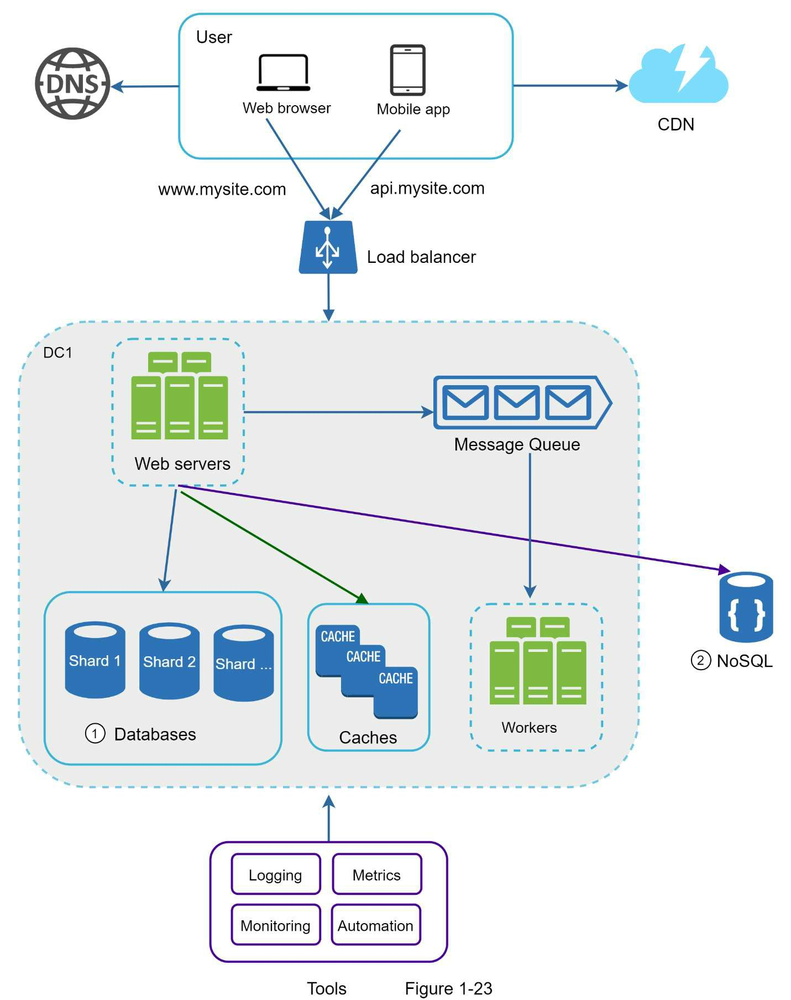
Milhões de usuários e além Escalar um sistema é um processo iterativo. Iterando sobre o que aprendemos neste capítulo pode nos levar longe. Mais ajustes e novas estratégias são necessárias para escalar além de milhões de usuários. Por exemplo, você pode precisar otimizar seu sistema e dissociar o sistema para serviços ainda menores. Todas as técnicas aprendidas neste capítulo devem fornecer uma boa base para enfrentar novos desafios. Para concluir este capítulo, nós fornecemos um resumo de como nós escalamos nosso sistema para apoiar milhões de usuários: • Mantenha a camada web stateless • Construir redundância em cada nível • cache dados tanto quanto você pode • Suporte vários data centers • Host ativos estáticos em CDN
• Aumente a escala da camada de dados com sharding • Divida as camadas em serviços individuais • Monitore o sistema e use ferramentas de automação Parabéns por chegar até aqui! Reconheça seu próprio esforço. Bom trabalho!
Materiais de referência [1Protocolo de Transferência de Hipertexto: https://en.wikipedia.org/wiki/Hypertext_Transfer_Protocol
[2] Você deve ir além de bancos de dados relacionais? https://blog.teamtreehouse.com/should-you-go-beyond-relational-databases
[3Replicação: https://en.wikipedia.org/wiki/Replication_(computing)
[4Multi...master Replicação: https://en.wikipedia.org/wiki/Multi-master_replication
[5Replicação de cluster NDB: multi-master e Replicação Circular: https://dev.mysql.com/doc/refman/5.7/en/mysql-cluster-replication-multi-master.html
[6# # caching Estratégias e como escolher o certo: https://codeahoy.com/2017/08/11/caching-strategies-and-how-to-choose-the-right-one/
[7] R. Nishtala, "Facebook, Scaling Memcache at," 10th USENIX Symposium on Networked Systems Design and Implementation (NSDI ’13).
[8] Single point of failure: https://en.wikipedia.org/wiki/Single_point_of_failure
[9] Amazon CloudFront entrega de conteúdo dinâmico: https://aws.amazon.com/cloudfront/dynamic-content/
[10Configure sessões pegajosas para o seu clássico load balancer:.. https://docs.aws.amazon.com/elasticloadbalancing/latest/classic/elb-sticky-sessions.html
[11Activo-Ativo para Resistência Multi-Regional: https://netflixtechblog.com/active-active-for-multi-regional-resiliency-c47719f6685b
[12# # # Amazon EC2 Alta Memória de Instâncias: https://aws.amazon.com/ec2/instance-types/high-memory/
[13] O que é preciso para executar Stack Overflow: http://nickcraver.com/blog/2013/11/22/what-it-takes-to-run-stack-overflow
[14O que diabos você está realmente usando NoSQL Por: http://highscalability.com/blog/2010/12/6/what-the-heck-are-you-actually-using-nosql-
CAPÍTULO 2: ESTIMATIVAS DE ORDEM DE GRANDEZA
Em uma entrevista de System Design, às vezes você precisa estimar a capacidade do sistema ou seus requisitos de desempenho por meio de uma estimativa de ordem de grandeza. Segundo Jeff Dean, Google Senior Fellow, “cálculos de ordem de grandeza são estimativas feitas combinando experimentos mentais e números de desempenho comuns para ter uma boa noção de quais projetos atenderão aos seus requisitos” [1].
Você precisa ter um bom senso de escalabilidade básico para realizar efetivamente a estimativa de ordem de grandeza. Os seguintes conceitos devem ser bem compreendidos: poder de dois [2], números de latência cada programador deve saber, e números de disponibilidade.
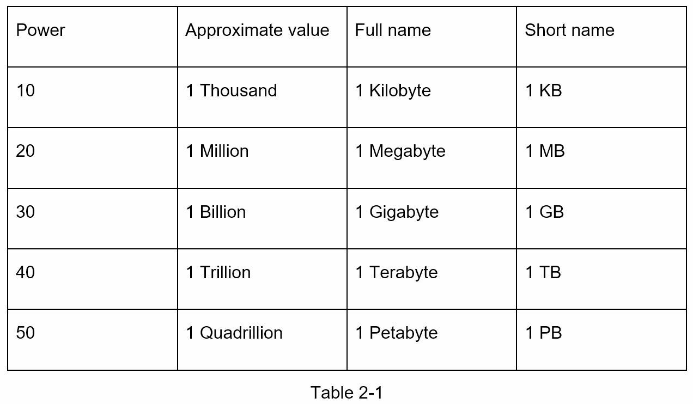
Potências de dois
Embora o volume de dados possa se tornar enorme ao lidar com sistemas distribuídos, calcular tudo se resume ao básico. Para obter cálculos corretos, é fundamental conhecer a unidade de volume de dados usando o poder do 2. Um byte é uma sequência de 8 bits. Um personagem ASCII usa um byte de memória (8 bits). Abaixo está uma tabela explicando a unidade de volume de dados (Tabela 2-1).
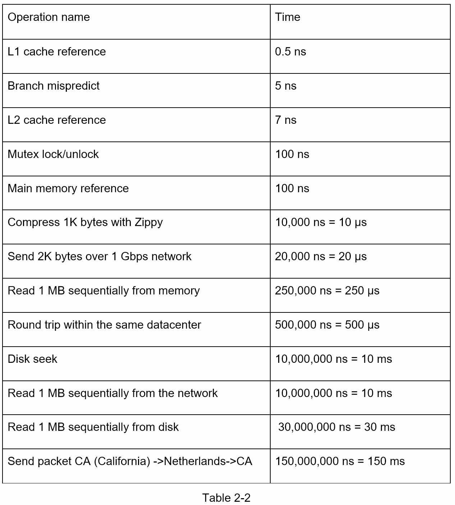
Números de latência que todo programador deve saber. Dr. Dean de... Google revela a duração das operações de computador típicas em 2010 [1- O que é isso? Alguns números estão ultrapassados à medida que os computadores se tornam mais rápidos e poderosos. No entanto, esses números ainda devem ser capazes de nos dar uma idéia da rapidez e lentidão de diferentes operações de computador.
Notas
-----------
Ns = nanosegundo, μs = microsegundo, ms = milissegundo 1 ns = 10^-9 segundos 1 μs = 10^-6 segundos = 1,000 ns 1 ms = 10^-3 segundos = 1,000 μs = 1,000,000 ns
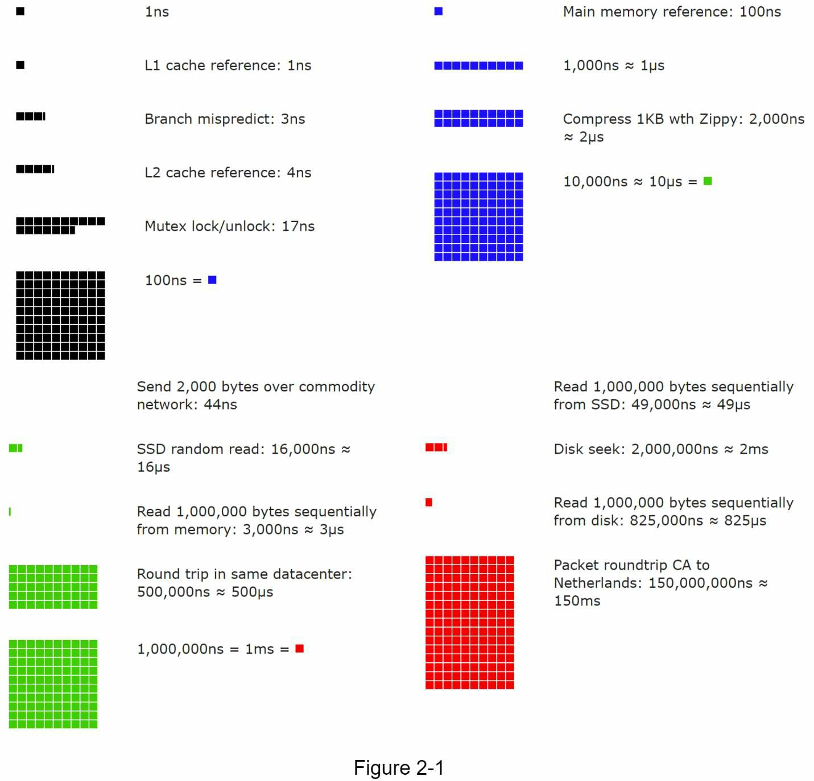
Um engenheiro de software Google construiu uma ferramenta para visualizar o Dr. Os números do Dean. A ferramenta também leva em consideração o fator tempo. Figuras 2-1 mostram os números de latência visualizados a partir de 2020 (fonte de figuras: material de referência [3]).
Analisando os números da Figura 2-1, temos as seguintes conclusões: a memória • é rápida, mas o disco é lento.
• Evite a busca de disco, se possível.
• algoritmos de compressão simples são rápidos.
• Comprima os dados antes de enviá-los pela internet, se possível.
• data centers geralmente estão em diferentes regiões, e leva tempo para enviar dados entre eles.
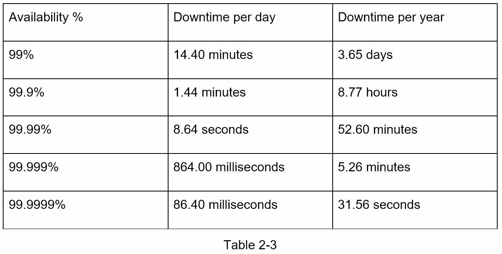
Números de disponibilidade Alta disponibilidade é a capacidade de um sistema permanecer operacional de forma contínua por um período suficientemente longo. Ela é medida em porcentagem: 100% significa que o serviço não tem nenhuma indisponibilidade. A maioria dos serviços fica entre 99% e 100%.
Um acordo de nível de serviço (SLA) é um termo comumente usado para prestadores de serviços. Este é um acordo entre você (o provedor de serviços) e seu cliente, e este acordo formalmente define o nível de tempo de serviço que seu serviço vai entregar. Os provedores de nuvem Amazon [4], Google [5] e Microsoft [6] definiram seu SLAs em 99.9% ou acima. Tempo de trabalho é tradicionalmente medido em noves. Quanto mais os nove, melhor. Como mostrado na tabela 2-3, o número de noves se correlaciona com o tempo de parada esperado do sistema.
Exemplo: estimar QPS e requisitos de armazenamento do Twitter Por favor, note que os seguintes números são para este exercício apenas porque eles não são números reais do Twitter.
Suposições:
• 300 milhões de usuários ativos mensais.
• 50% dos usuários usam Twitter diariamente.
Usuários do • postam tweets do 2 por dia em média.
• 10% de tweets contém mídia.
Dados • são armazenados por anos 5.
Estimações:
Consulta por segundo (QPS) Estimativa: • Usuários ativos diários (DAU) = 300 "Milhões" 50% = = 150 milhões. • Tweets QPS = = 150 "Milhões" 2 tweets 24 hora 3600 segundos = ~3500
• Peek QPS = 2 * QPS = ~7000
Vamos apenas estimar o armazenamento da mídia aqui.
• Tamanho médio do tweet: • tweet_id 64 bytes • texto 140 bytes • mídia 1 MB
• Armazenagem de mídia: 150 "Milhões" 2 10% 1 MB = 30 TB por dia • 5-ano de armazenamento de mídia: 30 TB 365 5 = ~55 PB
Dicas A estimativa do de ordem de grandeza é sobre o processo. Resolver o problema é mais importante do que obter resultados. Entrevistadores podem testar suas habilidades de resolução de problemas. Aqui estão algumas dicas para seguir: arredondamento • e aproximação. É difícil realizar operações matemáticas complicadas durante a entrevista. Por exemplo, qual é o resultado de "99987" 9.1”? Não há necessidade de gastar tempo valioso para resolver problemas matemáticos complicados. Precisão não é esperada. Use números redondos e aproximação para sua vantagem. A questão da divisão pode ser simplificada da seguinte forma:100,000 10”.
• Anote suas suposições. É uma boa ideia escrever suas suposições para serem referenciadas mais tarde.
• Identifique as unidades. Quando você escreve “5”, quer dizer 5 KB ou 5 MB? Isso pode gerar confusão. Anote as unidades, pois escrever “5 MB” elimina a ambiguidade.
• pediu estimativas de ordem de grandeza, QPS, pico QPS, armazenamento, cache, número de servidores, etc. Você pode praticar esses cálculos quando se preparar para uma entrevista. A prática faz a perfeição.
Parabéns por chegar tão longe! Agora dê um tapinha nas costas. Bom trabalho!
Materiais de referência [1J. Dean.Google Pro Dica: Use de ordem de grandeza-Calculações para escolher o melhor design: http://highscalability.com/blog/2011/1/26/google-pro-tip-use-back-of-the-envelope-
[2] System Design primer: https://github.com/donnemartin/systemdesign-primer
[3Números de latência que todo programador deve saber: https://colin-scott.github.io/personal_website/research/interactive_latency.html
[4# # # Amazon Acordo de Nível de Serviço de Computação: https://aws.amazon.com/compute/sla/
[5] Acordo de Nível de Serviço de Computação do Motor (SLA): https://cloud.google.com/compute/sla
[6# # # SLA Resumo para os serviços Azure: https://azure.microsoft.com/en-
CAPÍTULO 3: UM FRAMEWORK PARA ENTREVISTAS DE SYSTEM DESIGN
Você acaba de conseguir uma cobiçada entrevista presencial na empresa dos seus sonhos. A pessoa responsável pelo recrutamento envia a programação do dia. Ao percorrer a lista, você se sente confiante — até chegar à sessão de entrevista de System Design.
Entrevistas System Design são muitas vezes intimidadoras. Poderia ser tão vago como "projetar um conhecido produto X"? As perguntas são ambíguas e parecem excessivamente amplas. Seu cansaço é compreensível. Afinal, como alguém poderia projetar um produto popular em uma hora que levou centenas, se não milhares de engenheiros para construir?
A boa notícia é que ninguém espera que você o faça. O mundo real System Design é extremamente complicado. Por exemplo, a busca Google é enganosamente simples, no entanto, a quantidade de tecnologia que sustenta que a simplicidade é realmente surpreendente. Se ninguém espera que você projete um sistema real em uma hora, qual é o benefício de uma entrevista de System Design?
A entrevista do System Design simula a resolução de problemas da vida real onde dois colegas colaboram em um problema ambíguo e criam uma solução que atenda seus objetivos. O problema é open-end, e não há resposta perfeita. O design final é menos importante em comparação com o trabalho que você colocou no processo de design. Isso permite que você demonstre sua habilidade de design, defenda suas escolhas de design, e responda ao feedback de uma forma construtiva.
Vamos virar a tabela e considerar o que passa pela cabeça do entrevistador enquanto ela entra na sala de conferência para encontrá-lo. O objetivo principal do entrevistador é avaliar com precisão suas habilidades. A última coisa que ela quer é fazer uma avaliação inconclusiva porque a sessão foi mal e não há sinais suficientes. O que um entrevistador está procurando em uma entrevista de System Design?
Muitos acham que a entrevista do System Design é sobre as habilidades técnicas de uma pessoa. É muito mais do que isso. Uma entrevista eficaz do System Design dá sinais fortes sobre a capacidade de uma pessoa colaborar, trabalhar sob pressão, e resolver a ambiguidade construtivamente. A habilidade de fazer boas perguntas também é uma habilidade essencial, e muitos entrevistadores procuram especificamente por essa habilidade.
Um bom entrevistador também procura alertas. O excesso de engenharia é uma doença real de muitos engenheiros como eles se deleitam em design pureza e ignorar trade-offs. Muitas vezes desconhecem os custos agravantes de sistemas super-engenhariados, e muitas empresas pagam um alto preço por essa ignorância. Você certamente não quer demonstrar essa tendência em uma entrevista de System Design. Outras bandeiras vermelhas incluem mente estreita, teimosia, etc.
Neste capítulo, vamos rever algumas dicas úteis e introduzir um framework simples e eficaz para resolver problemas de entrevista de System Design.
Um processo de quatro etapas para uma entrevista de System Design eficaz Cada entrevista do System Design é diferente. Uma ótima entrevista de System Design está aberta e não há uma solução única. No entanto, há passos em comum em todas as entrevistas do System Design.
Etapa 1 — Entenda o problema e defina o escopo do projeto "Por que o tigre rugiu?"
Um tiro na parte de trás da aula.
"Sim, Jimmy?", o professor respondeu.
"Porque ele estava com fome".
"Muito bom Jimmy."
Durante sua infância, Jimmy sempre foi o primeiro a responder perguntas na aula.
Sempre que o professor faz uma pergunta, há sempre uma criança na sala de aula que gosta de dar uma chance na pergunta, não importa se ele sabe a resposta ou não. Aquele é o Jimmy.
Jimmy é um ótimo aluno. Ele se orgulha de saber todas as respostas rápido. Nos exames, ele é o primeiro a terminar as perguntas. Ele é a melhor escolha de um professor para qualquer competição acadêmica.
Não seja como Jimmy.
Em uma entrevista de System Design, dar uma resposta rapidamente sem pensar não lhe dá pontos bônus. Responder sem uma compreensão completa dos requisitos é uma grande bandeira vermelha, já que a entrevista não é um concurso de trivialidades. Não há resposta certa.
Então, não pule para dar uma solução. Devagar. Pense profundamente e faça perguntas para esclarecer requisitos e suposições. Isso é extremamente importante.
Como engenheiro, nós gostamos de resolver problemas duros e saltar para o projeto final, no entanto, esta abordagem é provável para levá-lo a projetar o sistema errado. Uma das habilidades mais importantes como engenheiro é fazer as perguntas certas, fazer as suposições adequadas, e reunir todas as informações necessárias para construir um sistema. Então, não tenha medo de fazer perguntas.
Quando você faz uma pergunta, o entrevistador responde sua pergunta diretamente ou lhe pede para fazer suas suposições. Se o último acontecer, escreva suas suposições no quadro ou papel. Você pode precisar deles mais tarde.
Que tipo de perguntas? Faça perguntas para entender os requisitos exatos. Aqui está uma lista de perguntas para ajudá-lo a começar: • Que características específicas vamos construir?
• Quantos usuários o produto tem?
• Qual a velocidade que a empresa antecipa para aumentar? Quais são as escalas previstas em 3
meses, 6 meses, e um ano?
• Qual é a pilha de tecnologia da empresa? Que serviços existentes você poderia usar para simplificar o projeto?
Exemplo
Se lhe pedem para projetar um sistema feed de notícias, você quer fazer perguntas que o ajudem a esclarecer os requisitos. A conversa entre você e o entrevistador pode ser assim: CandidataIsso é um aplicativo móvel? Ou um aplicativo da web? Ou os dois?
CandidataQuais são as características mais importantes para o produto?
EntrevistadorCapacidade de fazer um post e ver o feed de notícias dos amigos.
CandidataO feed de notícias está classificado em ordem cronológica inversa ou uma ordem específica? A ordem em particular significa que cada posto recebe um peso diferente. Por exemplo, posts de seus amigos próximos são mais importantes que posts de um grupo.
EntrevistadorPara manter as coisas simples, vamos assumir que a alimentação é ordenada por ordem cronológica inversa.
CandidataQuantos amigos um usuário pode ter?
Entrevistador: 5000
CandidataO que é o volume de tráfego?
Entrevistador: 10 milhões de usuários ativos diários (DAU) CandidataO feed pode conter imagens, vídeos ou apenas texto?
EntrevistadorPode conter arquivos de mídia, incluindo imagens e vídeos.
Acima estão algumas perguntas que você pode fazer ao seu entrevistador. É importante entender os requisitos e esclarecer ambiguidades. Etapa 2 — Proponha uma arquitetura de alto nível e obtenha concordância Nesta etapa, pretendemos desenvolver um projeto de alto nível e chegar a um acordo com o entrevistador sobre o projeto. É uma ótima ideia colaborar com o entrevistador durante o processo.
• Elabore um esboço inicial do projeto. Peça feedback. Trate quem conduz a entrevista como alguém da sua equipe e trabalhem em conjunto. Muitos bons entrevistadores gostam de conversar e participar.
• Draw box diagramas com componentes chave no quadro branco ou papel. Isso pode incluir clientes (móvel/web), APIs, servidores web, lojas de dados, cache, CDN, fila de mensagens, etc.
• Faça cálculos de ordem de grandeza para avaliar se seu projeto se encaixa nas restrições de escala. Pense em voz alta. Comunique-se com seu entrevistador se de ordem de grandeza for necessário antes de mergulhar nele.
Se possível, passe por alguns casos de uso de concreto. Isso vai ajudá-lo a enquadrar o design de alto nível. Também é provável que os casos de uso o ajudem a descobrir casos de borda que ainda não considerou.
Devemos incluir API endpoints e esquema de banco de dados aqui? Isso depende do problema.
Para grandes problemas de design como "Design Google motor de busca", este é um pouco de nível muito baixo.
Para um problema como projetar o backend para um jogo de pôquer multijogador, este é um jogo justo.
Comunique-se com seu entrevistador.
Exemplo
Vamos usar "Desenhe um sistema feed de notícias" para demonstrar como se aproximar do design de alto nível. Aqui você não é obrigado a entender como o sistema funciona. Todos os detalhes serão explicados no Capítulo 11.
No alto nível, o projeto é dividido em dois fluxos: publicação de feed e edifício feed de notícias.
• Feed publicando: quando um usuário publica um post, os dados correspondentes são escritos em cache/database, e o post será preenchido em feed de notícias de amigos.
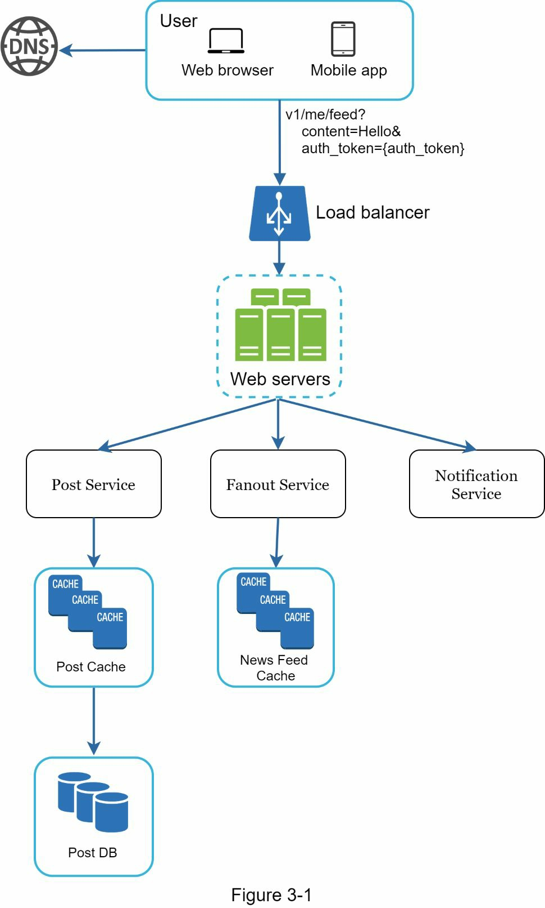
• feed de notícias edifício: o feed de notícias é construída agregando os postos dos amigos em uma ordem cronológica inversa.
Figura 3-1 e Figura 3-2 apresentam projetos de alto nível para publicação de feeds e fluxos de construção feed de notícias, respectivamente.
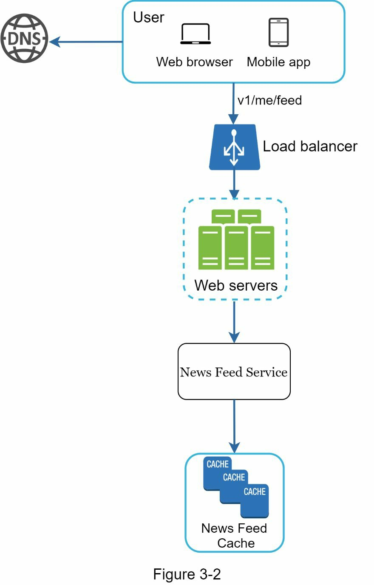
Etapa 3 — Aprofunde o projeto Nesta etapa, você e seu entrevistador já deveriam ter alcançado os seguintes objetivos: • Concordo com os objetivos gerais e escopo de recursos • desenhou um projeto de alto nível para o projeto geral • Obtido feedback do seu entrevistador sobre o projeto de alto nível • Tinha algumas ideias iniciais sobre áreas para focar em mergulho profundo baseado em seu feedback Você deve trabalhar com o entrevistador para identificar e priorizar componentes na arquitetura.
Vale ressaltar que cada entrevista é diferente. Às vezes, a entrevistadora pode dar dicas de que ela gosta de focar em design de alto nível. Às vezes, para uma entrevista de candidatos, a discussão pode ser sobre as características do desempenho do sistema, provavelmente focando nos gargalos e estimativas de recursos. Na maioria dos casos, o entrevistador pode querer que você investigue detalhes de alguns componentes do sistema. Para o encurtador URL, é interessante mergulhar no projeto da função hash que converte um longo URL em um curto. Para um sistema de bate-papo, como reduzir a latência e como suportar o status online/offline são dois tópicos interessantes.
A gestão do tempo é essencial, pois é fácil se empolgar com detalhes minuciosos que não demonstram suas habilidades. Deve estar armado com sinais para mostrar ao seu entrevistador. Tente não. para entrar em detalhes desnecessários. Por exemplo, falar sobre o algoritmo EdgeRank do ranking de alimentação Facebook em detalhes não é ideal durante uma entrevista de System Design, pois isso leva muito tempo precioso e não prova sua habilidade em projetar um sistema escalável.
Exemplo
Neste ponto, discutimos o design de alto nível para um sistema feed de notícias, e o entrevistador está feliz com sua proposta. Em seguida, vamos investigar dois dos casos de uso mais importantes: 1. Publicação de feeds
2. feed de notícias de recuperação Figura 3-3 e Figura 3-4 mostram o projeto detalhado para os dois casos de uso, que serão explicados detalhadamente no Capítulo 11.
Etapa 4 — Conclua
Neste último passo, o entrevistador pode fazer algumas perguntas ou dar-lhe a liberdade de discutir outros pontos adicionais. Aqui estão algumas instruções a seguir, • O entrevistador pode querer que você identifique os gargalos do sistema e discuta possíveis melhorias. Nunca diga que seu design é perfeito e nada pode ser melhorado. Sempre há algo para melhorar. Esta é uma grande oportunidade para mostrar seu pensamento crítico e deixar uma boa impressão final.
• Pode ser útil dar ao entrevistador uma recapitulação do seu projeto. Isso é particularmente importante se você sugerir algumas soluções. Refrescar a memória do entrevistador pode ser útil depois de uma longa sessão.
Casos de erros • (fracasso do servidor, perda de rede, etc.) são interessantes de se falar.
• questões de operação valem a pena mencionar. Como você monitora métricas e erro logs?
Como ligar o sistema?
• Como lidar com a próxima curva de escala também é um tópico interessante. Por exemplo, se seu projeto atual suporta 1 milhões de usuários, que mudanças você precisa fazer para apoiar 10
Milhões de usuários?
• Proponha outros refinamentos que você precisa se você tiver mais tempo.
Para finalizar, resumemos uma lista dos Dos e Don'ts.
O que fazer
• sempre pede esclarecimentos. Não suponha que sua suposição esteja correta.
• entenda os requisitos do problema.
• Não há nem a resposta certa nem a melhor resposta. Uma solução projetada para resolver os problemas de uma startup jovem é diferente da de uma empresa estabelecida com milhões de usuários. Certifique-se de entender os requisitos.
• Deixe o entrevistador saber o que você está pensando. Comunique-se com sua entrevista.
• sugere múltiplas abordagens, se possível.
• Uma vez que você concordar com seu entrevistador na planta, entre em detalhes sobre cada componente. Desenhe os componentes mais críticos primeiro.
• Retirar ideias do entrevistador. Um bom entrevistador trabalha com você como colega de equipe.
• nunca desista.
O que evitar
• Não fique despreparado para perguntas típicas.
• Não pule em uma solução sem esclarecer os requisitos e suposições.
• Não entre em muitos detalhes em um único componente no início. Dê o design de alto nível primeiro e depois perfura para baixo.
• Se você ficar preso, não hesite em pedir dicas.
• novamente, comunique. Não pense em silêncio.
• Não pense que sua entrevista é feita uma vez que você dá o design. Você não termina até que seu entrevistador diga que acabou. Peça comentários cedo e muitas vezes.
Distribuição do tempo entre as etapas Perguntas de entrevista de System Design são geralmente muito amplas, e 45 minutos ou uma hora não é suficiente para cobrir todo o projeto. A gestão do tempo é essencial. Quanto tempo você deve gastar em cada passo? O seguinte é um guia muito duro sobre distribuir seu tempo em uma sessão de entrevista 45 minutos. Por favor, lembre-se que esta é uma estimativa aproximada, e a distribuição de tempo real depende do escopo do problema e dos requisitos do entrevistador.
Etapa 1 — Entenda o problema e defina o escopo do projeto: 3 a 10 minutos Etapa 2 — Proponha uma arquitetura de alto nível e obtenha concordância: 10 a 15 minutos Etapa 3 — Aprofunde o projeto: 10 a 25 minutos Etapa 4 — Conclua: 3 a 5 minutos CAPÍTULO 4: PROJETANDO UM RATE LIMITER
Em um sistema de rede, um rate limiter é usado para controlar a taxa de tráfego enviado por um cliente ou um serviço. No mundo HTTP, um rate limiter limita o número de requisições de clientes permitidos para serem enviados por um período especificado. Se o requisição API exceder o limite definido pelo rate limiter, todas as chamadas em excesso estão bloqueadas. Aqui estão alguns exemplos: • Um usuário não pode escrever mais do que mensagens 2 por segundo.
• Você pode criar um máximo de contas 10 por dia do mesmo endereço IP.
• Você pode reivindicar recompensas não mais do que 5 vezes por semana do mesmo dispositivo.
Neste capítulo, você é convidado a projetar um rate limiter. . Antes de começar o projeto, nós primeiro olhamos para os benefícios de usar um API rate limiter:.. • Evitar a fome de recursos causada pelo ataque de Negação de Serviço.1- O que é isso? Quase tudo. APIs publicado por grandes empresas de tecnologia que aplicam alguma forma de Rate Limiting. . Por exemplo, Twitter Limita o número de tweets para 300 Por que 3 horas.2- O que é isso? Google Doutores. APIs tem o seguinte limite padrão: 300 Por usuário por 60 segundos para ler os pedidos3- O que é isso? A rate limiter Impede ataques do DOS, intencionais ou não, bloqueando as chamadas em excesso.
• Reduzir o custo. Limitar requisições excessivos significa menos servidores e alocar mais recursos para APIs de alta prioridade. Rate Limiting é extremamente importante para empresas que usam APIs de terceiros pagos. Por exemplo, você é cobrado por chamada para o seguinte APIs externo: cheque crédito, faça um pagamento, recupere registros de saúde, etc.
Limitar o número de chamadas é essencial para reduzir os custos.
• impede que os servidores sejam sobrecarregados. Para reduzir a carga do servidor, um rate limiter é usado para filtrar requisições excessivos causados por bots ou mau comportamento dos usuários.
Etapa 1 — Entenda o problema e defina o escopo do projeto Rate Limiting pode ser implementado usando algoritmos diferentes, cada um com seus prós e contras. As interações entre um entrevistador e um candidato ajudam a esclarecer o tipo de rate limiters que estamos tentando construir.
CandidataQue tipo de rate limiter vamos desenhar? É um rate limiter do lado do cliente ou do servidor API rate limiter?
EntrevistadorÓtima pergunta. Focamos no servidor API rate limiter.
CandidataO rate limiter pede API baseado em IP, o usuário ID ou outras propriedades?
EntrevistadorO rate limiter deve ser flexível o suficiente para suportar diferentes conjuntos de regras de acelerador.
CandidataQual é a escala do sistema? É construído para uma startup ou uma grande empresa com um grande usuário BASE?
EntrevistadorO sistema deve ser capaz de lidar com um grande número de requisições.
CandidataO sistema funcionará em um ambiente distribuído?
EntrevistadorSim.
CandidataO rate limiter é um serviço separado ou deve ser implementado em código de aplicação?
EntrevistadorÉ uma decisão de design para você.
CandidataPrecisamos informar os usuários que estão estrangulados?
EntrevistadorSim.
Requisitos
Aqui está um resumo dos requisitos para o sistema: • É preciso limitar requisições excessivos.
• Baixa latência. O rate limiter não deve atrasar o tempo de resposta do HTTP.
• use a menor memória possível.
• Distribuído Rate Limiting. O rate limiter pode ser compartilhado em vários servidores ou processos.
• Exception handling. Mostrar exceções claras aos usuários quando seus requisições são acelerados.
• Alta tolerância à falha. Se houver algum problema com o rate limiter (por exemplo, um servidor cache fica offline), ele não afeta todo o sistema.
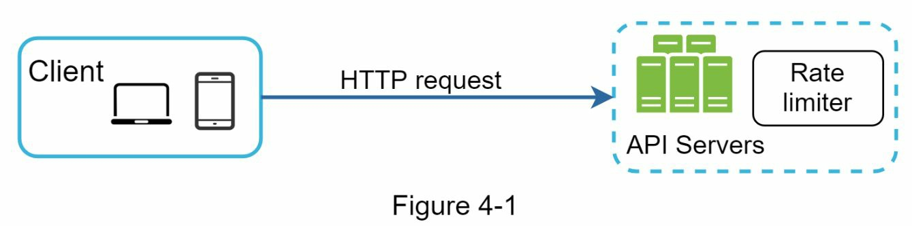
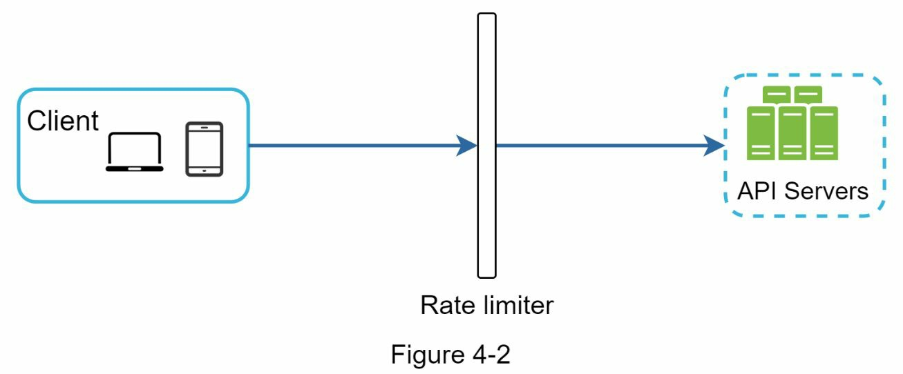
Etapa 2 — Proponha uma arquitetura de alto nível e obtenha concordância Vamos manter as coisas simples e usar um modelo básico de cliente e servidor para comunicação.
Onde colocar o rate limiter?
Intuitivamente, você pode implementar um rate limiter no lado do cliente ou servidor.
• implementação do lado do cliente. Em geral, cliente é um lugar pouco confiável para impor Rate Limiting porque requisições de cliente podem ser facilmente forjados por atores maliciosos. Além disso, podemos não ter controle sobre a implementação do cliente.
• implementação do lado do servidor. A figura 4-1 mostra um rate limiter que é colocado no lado do servidor.
Além das implementações do cliente e servidor, há uma maneira alternativa. Em vez de colocar um rate limiter nos servidores API, criamos um middleware rate limiter, que acelera os requisições para o seu APIs, como mostrado na Figura 4-2.
Vamos usar um exemplo na figura 4-3 para ilustrar como Rate Limiting funciona neste projeto.
Assumindo que nosso API permite requisições 2 por segundo, e um cliente envia requisições 3 para o servidor em um segundo. Os dois primeiros requisições são encaminhados para servidores API. No entanto, o middleware rate limiter acelera o terceiro requisição e retorna um código de status HTTP 429. HTTP 429
O código de estado de resposta indica que um usuário enviou muitos requisições.
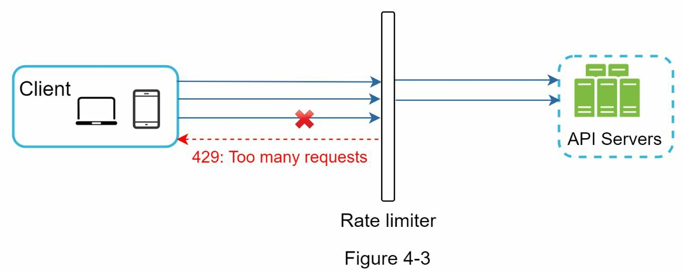
Os microservices de nuvem [4] tornaram-se amplamente populares e Rate Limiting é geralmente implementado dentro de um componente chamado API gateway. API gateway é um serviço totalmente gerenciado que suporta Rate Limiting, SSL terminação, autenticação, listagem IP, manutenção de conteúdo estático, etc. Por enquanto, só precisamos saber que o portal API é um middleware que suporta Rate Limiting.
Ao projetar um rate limiter, uma pergunta importante a nós mesmos é: onde o limitador deve ser implementado, no lado do servidor ou em um portal? Não há resposta absoluta.
Depende da atual pilha de tecnologia da sua empresa, recursos de engenharia, prioridades, objetivos, etc. Aqui estão algumas diretrizes gerais: • Avaliar sua atual pilha de tecnologia, como linguagem de programação, serviço cache, etc. Certifique-se de que sua linguagem de programação atual seja eficiente para implementar Rate Limiting no lado do servidor.
• Identifique o algoritmo Rate Limiting que se encaixa nas necessidades do seu negócio. Quando você implementa tudo do lado do servidor, você tem controle total do algoritmo. No entanto, sua escolha pode ser limitada se você usar um portal de terceiros.
• Se você já usou arquitetura de microservice e incluiu um gateway API no projeto para realizar autenticação, listagem em branco IP, etc., você pode adicionar um rate limiter ao gateway API.
• Construir seu próprio serviço Rate Limiting leva tempo. Se você não tem recursos de engenharia suficientes para implementar um rate limiter, um portal comercial API é uma opção melhor.
Algoritmos para Rate Limiting Rate Limiting pode ser implementado usando algoritmos diferentes, e cada um deles tem prós e contras distintos. Mesmo que este capítulo não se concentre em algoritmos, compreendê-los em alto nível ajuda a escolher o algoritmo certo ou combinação de algoritmos para caber em nossos casos de uso. Aqui está uma lista de algoritmos populares: • token bucket
• Leaking bucket
• Fixed window counter • Sliding window log • Sliding window counter Algoritmo token bucket O algoritmo token bucket é amplamente usado para Rate Limiting. É simples, bem compreendido e
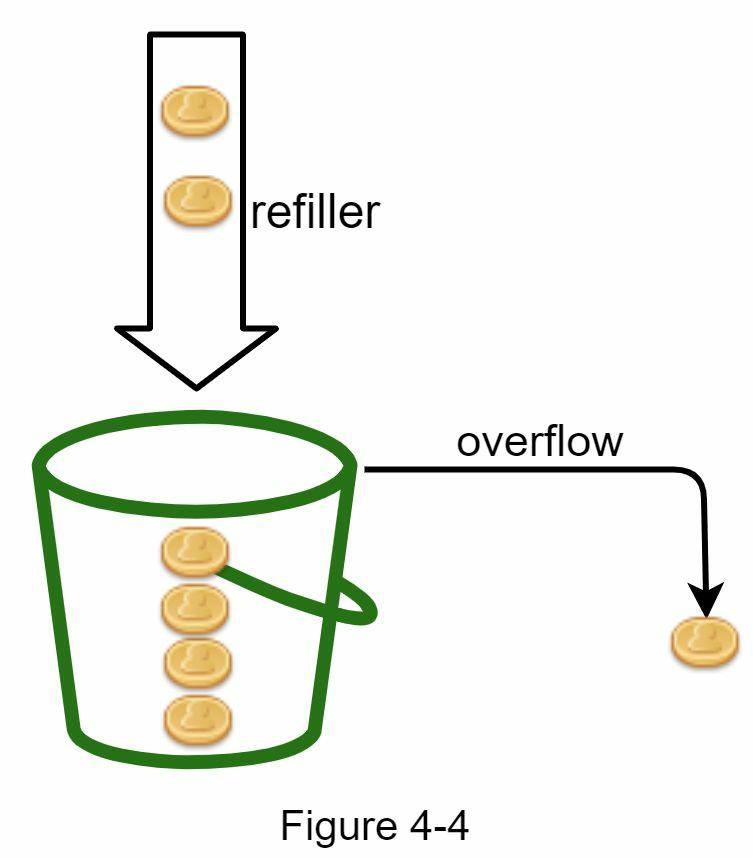
comumente usado por empresas de internet. Tanto Amazon [5] quanto Stripe [6] usam este algoritmo para acelerar seus requisições API.
O algoritmo token bucket funciona da seguinte forma: • A token bucket é um recipiente que tem capacidade predefinida. Tokens são colocados no balde a taxas predefinidas periodicamente. Uma vez que o balde está cheio, não mais fichas são adicionadas. Como mostrado na Figura 4-4, a capacidade token bucket é 4. O reabastecedor coloca fichas 2 no balde a cada segundo. Uma vez que o balde estiver cheio, fichas extras transbordarão.
• Cada requisição consome um token. Quando um requisição chegar, verificamos se há fichas suficientes no balde. A figura 4-5 explica como funciona.
• Se houver fichas suficientes, tiramos uma ficha para cada requisição, e o requisição é feito.
• Se não houver fichas suficientes, o requisição será retirado.
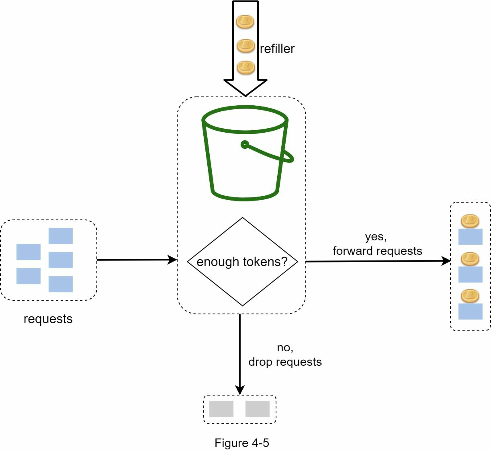
Figura 4-6 ilustra como o consumo de fichas, recarga e lógica Rate Limiting funcionam. Neste exemplo, o tamanho do token bucket é 4, e a taxa de recarga é 4 por minuto 1.
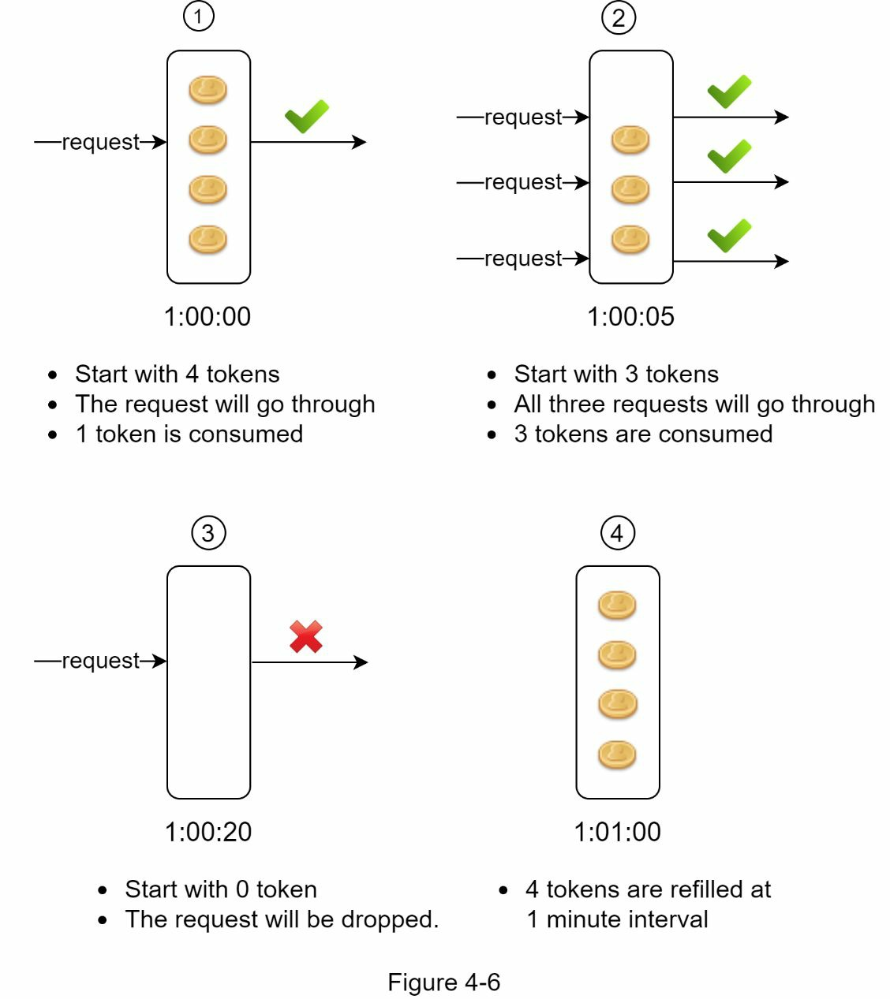
O algoritmo token bucket tem dois parâmetros: tamanho do balde •: o número máximo de fichas permitidas no balde • Taxa de recarga: número de fichas colocadas no balde a cada segundo De quantos baldes precisamos? Isso varia, e depende das regras de limitação de taxas. Aqui estão alguns exemplos.
• geralmente é necessário ter baldes diferentes para diferentes API endpoints. Por exemplo, se um usuário é autorizado a fazer 1 post por segundo, adicionar 150 amigos por dia, e como 5 posts por segundo, 3 baldes são necessários para cada usuário.
• Se precisamos acelerar requisições baseados em endereços IP, cada endereço IP requer um balde.
• Se o sistema permite um máximo de requisições 10,000 por segundo, faz sentido ter um balde global compartilhado por todos os requisições.
Prós:
• O algoritmo é fácil de implementar.
Memória • eficiente.
• token bucket permite uma explosão de tráfego por curtos períodos. Um requisição pode passar enquanto houver fichas sobrando.
Contras:
• Dois parâmetros no algoritmo são tamanho de balde e taxa de recarga de fichas. No entanto, pode
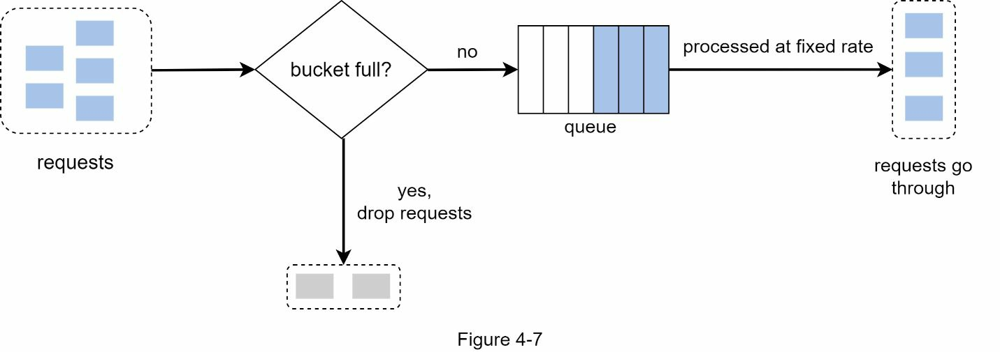
ser desafiador para afiná-los corretamente.
Algoritmo leaking bucket O leaking bucket Algoritmo é semelhante ao token bucket exceto que os requisições são processados a uma taxa fixa. Geralmente é implementado com um primeiro em primeiro lugar (FIFO) fila. O algoritmo funciona da seguinte forma: • Quando um requisição chega, o sistema verifica se a fila está cheia. Se não estiver cheio, o requisição é adicionado à fila.
• Caso contrário, o requisição será retirado.
requisições • são retirados da fila e processados em intervalos regulares.
A figura 4-7 explica como o algoritmo funciona.
O algoritmo leaking bucket tem os seguintes dois parâmetros: tamanho do balde •: é igual ao tamanho da fila. A fila mantém os requisições para serem processados a uma taxa fixa.
• Taxa de saída: define quantos requisições podem ser processados a uma taxa fixa, geralmente em segundos.
Shopify, uma empresa de comércio eletrônico, usa baldes furados para limitar taxas.7- O que é isso?
Prós:
Memória • eficiente dado o tamanho limitado da fila.
requisições • são processados a uma taxa fixa, portanto, é adequado para casos de uso que uma taxa de saída estável é necessária.
Contras:
• Uma explosão de tráfego enche a fila com requisições antigos, e se eles não forem processados a tempo, requisições recentes serão limitados.
• Há dois parâmetros no algoritmo. Pode não ser fácil afiná-los corretamente.
Algoritmo fixed window counter fixed window counter O algoritmo funciona da seguinte forma: • O algoritmo divide a linha do tempo em janelas de tempo de tamanho fixo e atribui um contador para cada janela.
• Cada requisição aumenta o contador por um.
• Uma vez que o contador atinge o limite predefinido, novas solicitações são retiradas até que uma nova janela de tempo comece.
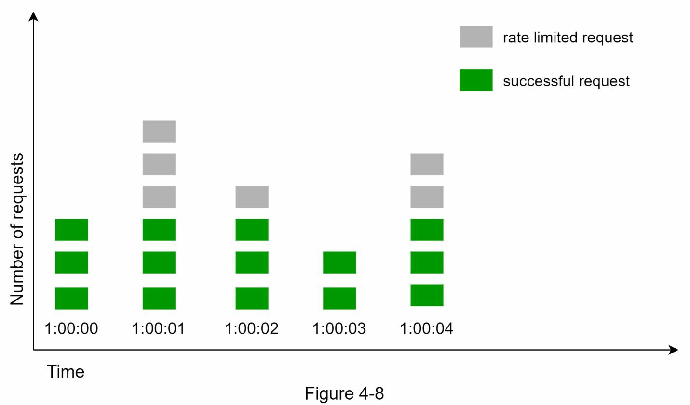
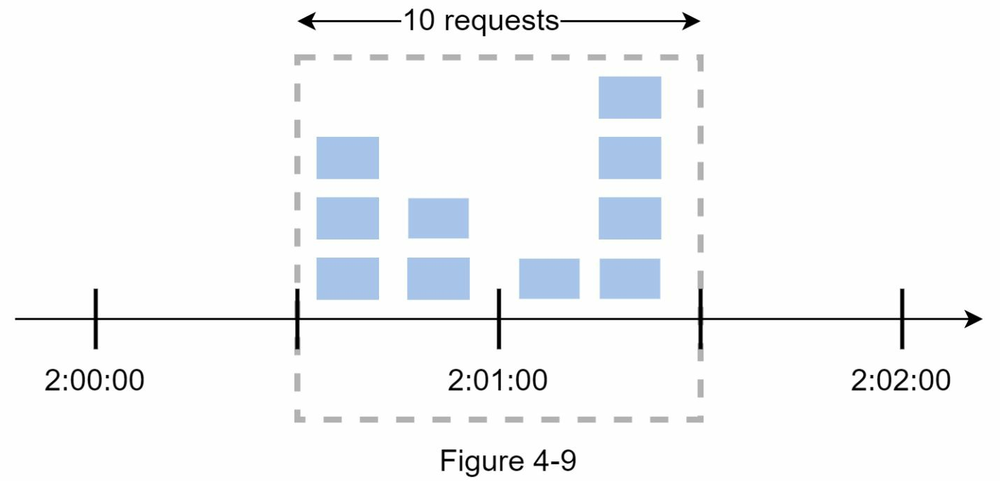
Vamos usar um exemplo concreto para ver como funciona. Na Figura 4-8, a unidade de tempo é o segundo 1 e o sistema permite um máximo de requisições 3 por segundo. Em cada segunda janela, se mais do que os requisições do 3 forem recebidos, requisições extras são eliminados como mostrado na Figura 4-8.
Um grande problema com este algoritmo é que uma explosão de tráfego nas bordas das janelas de tempo poderia causar mais requisições do que a quota permitida para passar. Considere o seguinte caso: na Figura 4-9, o sistema permite um máximo de requisições de 5 por minuto, e a quota disponível reinicia no minuto redondo amigável ao homem. Como visto, há cinco requisições entre 2:00:00
e 2:01:00 e mais cinco requisições entre 2:01:00 e 2:02:00. Para a janela de um minuto entre 2:00:30 e 2:01:30, os requisições 10 passam. Isso é o dobro de requisições permitidos.
Prós:
Memória • eficiente.
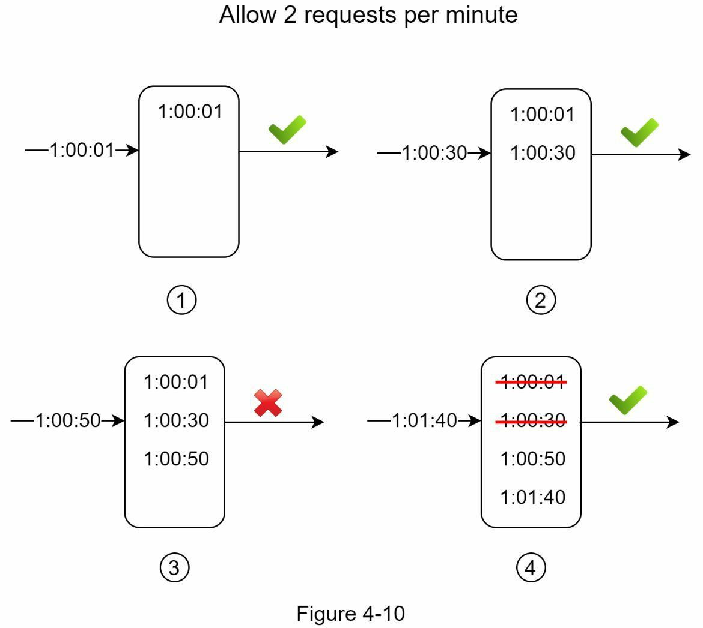
• Fácil de entender.
• reiniciando a cota disponível no final de uma janela de tempo da unidade se encaixa em certos casos de uso.
Contras:
• Spike no trânsito nas bordas de uma janela poderia causar mais requisições do que a quota permitida para passar.
Algoritmo sliding window log Como discutido anteriormente, o fixed window counter Algoritmo tem um grande problema: permite que mais requisições passem nas bordas de uma janela. O sliding window log Algoritmo corrige o problema. Funciona da seguinte forma: • O algoritmo acompanha o requisição. timestamps. . timestamp Os dados são geralmente guardados em cache, tais como conjuntos separados de Redis [8- O que é isso?
• Quando um novo requisição chegar, remova todos os timestamps ultrapassados. timestamps ultrapassado são definidos como aqueles mais velhos que o início da janela de tempo atual.
• Adicione timestamp do novo requisição ao log.
• Se o tamanho do log é o mesmo ou menor que a contagem permitida, um requisição é aceito.
Caso contrário, ele é rejeitado.
Explicamos o algoritmo com um exemplo revelado na Figura 4-10.
Neste exemplo, o rate limiter permite requisições 2 por minuto. Geralmente, Linux timestamps são armazenados no log. No entanto, a representação humana do tempo é usada em nosso exemplo para uma melhor legibilidade.
• O log está vazio quando um novo requisição chega ao 1:00:01. Assim, o requisição é permitido.
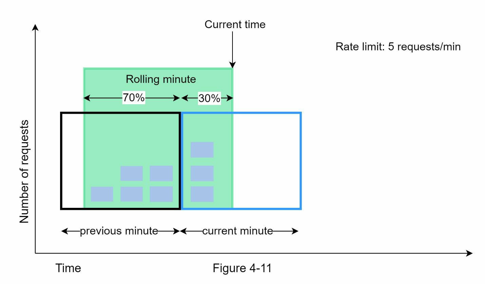
• Um novo requisição chega a 1:00:30, o timestamp 1:00:30 está inserido no log. Após a inserção, o tamanho do log é 2, não maior que a contagem permitida. Assim, o requisição é permitido.
• Um novo requisição chega ao 1:00:50, e o timestamp está inserido no log. Após a inserção, o tamanho do log é 3, maior que o tamanho permitido 2. Portanto, este requisição é rejeitado mesmo que o timestamp permaneça no log.
• Um novo requisição chega ao 1:01:40. Os requisições na faixa 1:00:40,1:01:40) estão dentro do prazo mais recente, mas os requisições enviados antes do 1:00:40 estão ultrapassados. Dois timestamps, 1:00:01 e 1:00:30, são removidos do log. Após a operação de remoção, o tamanho log torna-se 2; portanto, o requisição é aceito.
Prós:
• Rate Limiting implementado por este algoritmo é muito preciso. Em qualquer janela, os requisições não excederão o limite de taxa.
Contras:
• O algoritmo consome muita memória porque mesmo que um requisição seja rejeitado, seu timestamp ainda pode ser armazenado na memória.
Algoritmo sliding window counter O algoritmo sliding window counter é uma abordagem híbrida que combina o fixed window counter e sliding window log. O algoritmo pode ser implementado por duas abordagens diferentes. Vamos explicar uma implementação nesta seção e fornecer referência para a outra implementação no final da seção. A figura 4-11 ilustra como esse algoritmo funciona.
Suponha que o rate limiter permite um máximo de requisições 7 por minuto, e há requisições 5 no minuto anterior e 3 no minuto atual. Para um novo requisição que chega a um 30%
posição no minuto atual, o número de requisições na janela de rolamento é calculado usando a seguinte fórmula: • requisições na janela atual + requisições na janela anterior * sobreposição percentual da janela de rolamento e janela anterior
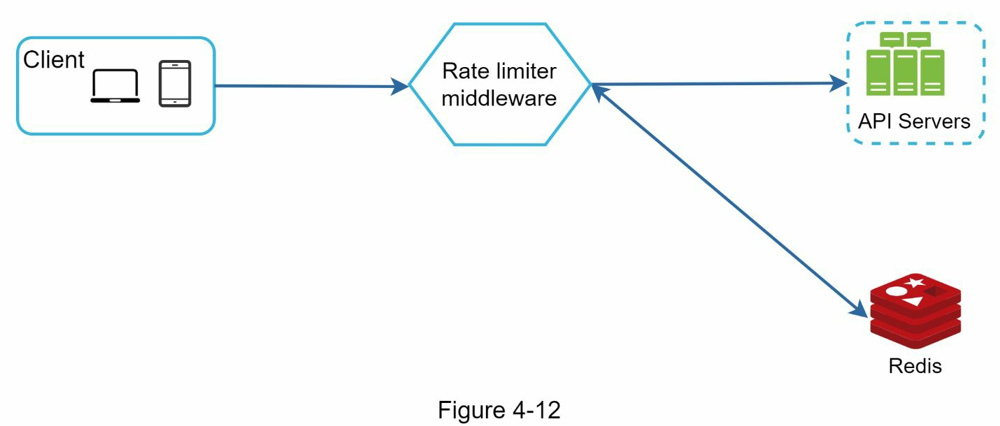
• usando esta fórmula, temos 3 + 5 * 0.7% = requisição 6.5. Dependendo do caso de uso, o número pode ser arredondado para cima ou para baixo. Em nosso exemplo, é arredondado para 6.
Uma vez que o rate limiter permite um máximo de requisições 7 por minuto, o requisição atual pode passar. No entanto, o limite será alcançado após receber mais um requisição.
Devido à limitação espacial, não discutiremos a outra implementação aqui. Leitores interessados devem se referir ao material de referência.9- O que é isso? Este algoritmo não é perfeito. Tem prós e contras.
Prós.
• alivia picos no tráfego porque a taxa é baseada na taxa média da janela anterior.
Memória • eficiente.
Contras.
• só funciona para não tão restrito olhar para trás janela. É uma aproximação da taxa real porque assume que os requisições na janela anterior são distribuídos uniformemente. No entanto, este problema pode não ser tão ruim quanto parece. De acordo com experimentos feitos por Cloudflare [10], apenas 0.003% de requisições são erroneamente permitidos ou taxa limitada entre 400 milhões de requisições.
Arquitetura de alto nível A ideia básica de algoritmos Rate Limiting é simples. No alto nível, precisamos de um contador para acompanhar quantos requisições são enviados do mesmo usuário, endereço IP, etc. Se o contador é maior que o limite, o requisição é proibido.
Onde vamos guardar os balcões? Usar o banco de dados não é uma boa ideia devido à lentidão do acesso ao disco. Em memória. cache É escolhido porque é rápido e suporta a estratégia de expiração baseada no tempo. Por exemplo, Redis [11É uma opção popular para implementar Rate Limiting. . É uma loja de memória que oferece dois comandos: INCR e EXPIRE.
• Ele aumenta o contador armazenado por 1. .
• Ele marca um tempo para o contador. Se o tempo expirar, o contador é automaticamente excluído.
A figura 4-12 mostra a arquitetura de alto nível para Rate Limiting, e isso funciona da seguinte forma: • O cliente envia um requisição para o middleware Rate Limiting.
• Rate Limiting middleware pega o contador do balde correspondente em Redis e Verifica se o limite é alcançado ou não.
• Se o limite for atingido, o requisição é rejeitado.
• Se o limite não for atingido, o requisição é enviado para os servidores API. Enquanto isso, o sistema aumenta o contador e o salva de volta ao Redis.
Etapa 3 — Aprofunde o projeto O design de alto nível na figura. 4- O quê?12 não responde as seguintes perguntas: • Como está? Rate Limiting Regras criadas? Onde as regras estão guardadas?
• Como lidar com requisições que são limitados?
Nesta seção, responderemos primeiro as perguntas sobre as regras do Rate Limiting e então repassaremos as estratégias para lidar com requisições limitados. Finalmente, vamos discutir Rate Limiting em ambiente distribuído, um projeto detalhado, otimização de desempenho e monitoramento.
Regras de Rate Limiting Lyft open-sourceed seu componente limitador de taxa [12]. Nós vamos espiar dentro do componente e olhar alguns exemplos de regras Rate Limiting: domínio: mensagens
Descritores:
- message_type.
Valor: marketing
rate_limit:
Unidade: dia
requests_per_unit: 5
No exemplo acima, o sistema é configurado para permitir um máximo de mensagens de marketing 5 por dia. Aqui está outro exemplo: domínio: Auth
Descritores:
- auth_type.
Valor: login
rate_limit:
Unidade: minuto
requests_per_unit: 5
Essa regra mostra que os clientes não podem entrar mais do que 5 vezes em 1 minuto. Regras geralmente são escritas em arquivos de configuração e salvas no disco.
Excedendo o limite de taxa Caso um requisição seja limitado, APIs devolve um código de resposta HTTP 429 (muitos requisições) ao cliente. Dependendo dos casos de uso, podemos solicitar que os requisições sejam processados mais tarde. Por exemplo, se algumas ordens são limitadas devido à sobrecarga do sistema, podemos manter essas ordens para serem processadas mais tarde.
Cabeçalhos do rate limiter Como um cliente sabe se está sendo estrangulado? E como um cliente sabe o número de requisições antes de ser estrangulado? A resposta está em HTTP.
Cabeçalhos de resposta. O rate limiter devolve os seguintes cabeçalhos HTTP aos clientes: X-Ratelimit-RemainingO número restante de requisições permitidos dentro da janela.
X-Ratelimit-Limit: Indica quantas ligações o cliente pode fazer por janela de tempo.
X-Ratelimit-Retentar-Depois: O número de segundos para esperar até que você possa fazer um requisição novamente sem ser estrangulado.
Quando um usuário tem enviado muitos requisições, um 429 muitos requisições de erro e X-Ratelimit-
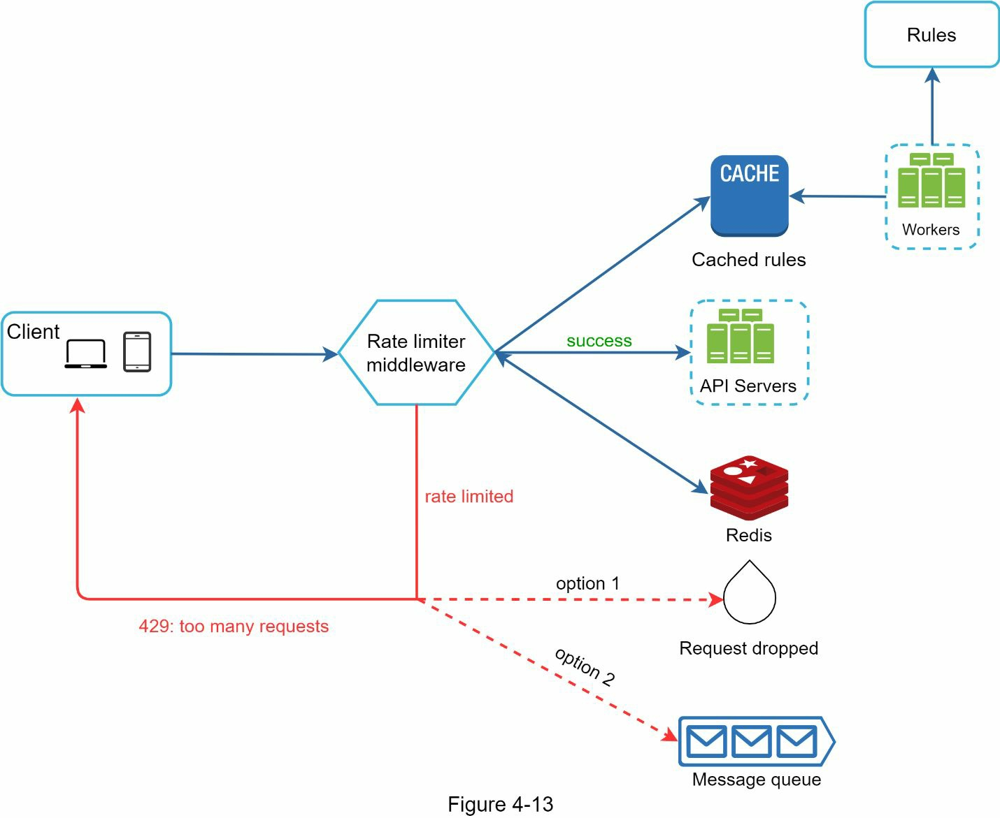
Tente de novo depois. O cabeçalho é devolvido ao cliente.
Projeto detalhado
A figura 4-13 apresenta um projeto detalhado do sistema.
Regras • são armazenadas no disco. workers frequentemente regras pull do disco e armazená-los no cache.
• Quando um cliente envia um requisição para o servidor, o requisição é enviado para o middleware rate limiter primeiro.
• rate limiter carrega as regras do cache. Ele busca contadores e último requisição timestamp de Redis cache. Com base na resposta, o rate limiter decide: • se o requisição não é limitado, é encaminhado para servidores API.
• se o requisição é limitado, o rate limiter devolve 429 erro demais ao cliente. Enquanto isso, o requisição é abandonado ou encaminhado para a fila.
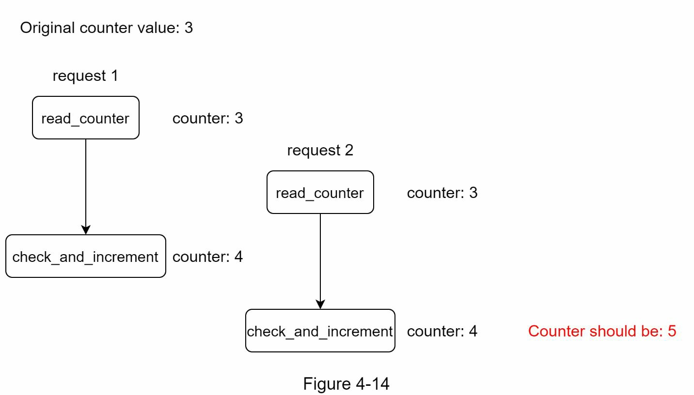
rate limiter em um ambiente distribuído Construir um rate limiter que funcione em um único servidor não é difícil. No entanto, escalar o sistema para suportar vários servidores e threads concomitante é uma história diferente.
Há dois desafios: • race condition
• Sincronização Race condition
Como discutido antes, rate limiter Trabalha como segue no alto nível: • Leia o Contador valor de Redis.
• Verifique se ( Contador + 1 ) excede o limite.
• Se não, incremente o valor do contador por 1 em Redis.
As condições da corrida podem acontecer em um ambiente altamente concorrente como mostrado na Figura 4-14.
Assumir que Contador O valor em Redis é 3. Se dois requisições simultaneamente lerem o Contador valor antes de qualquer um deles escreve o valor de volta, cada um irá incrementar o Contador Por um e escreva sem checar o outro thread. Ambos os requisições (threads) acreditam que eles têm o correto Contador valor 4. No entanto, o correto Contador O valor deve ser 5.
Fechaduras são a solução mais óbvia para resolver o race condition. No entanto, fechaduras irão diminuir significativamente o sistema. Duas estratégias são comumente usadas para resolver o problema: script Lua [13] e estrutura de dados de conjuntos ordenados em Redis [8]. Para os leitores interessados nessas estratégias, consulte os materiais de referência correspondentes [8] [13].
Problema de sincronização. Sincronização é outro fator importante a considerar em um ambiente distribuído. Para apoiar milhões de usuários, um servidor rate limiter pode não ser suficiente para lidar com o tráfego.
Quando vários servidores rate limiter são usados, a sincronização é necessária. Por exemplo, no lado esquerdo da figura 4-15, cliente 1 envia requisições para rate limiter 1, e cliente 2 envia requisições para
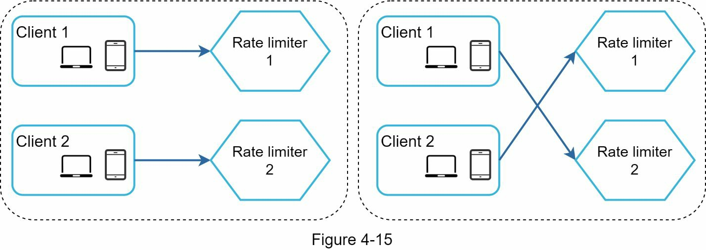
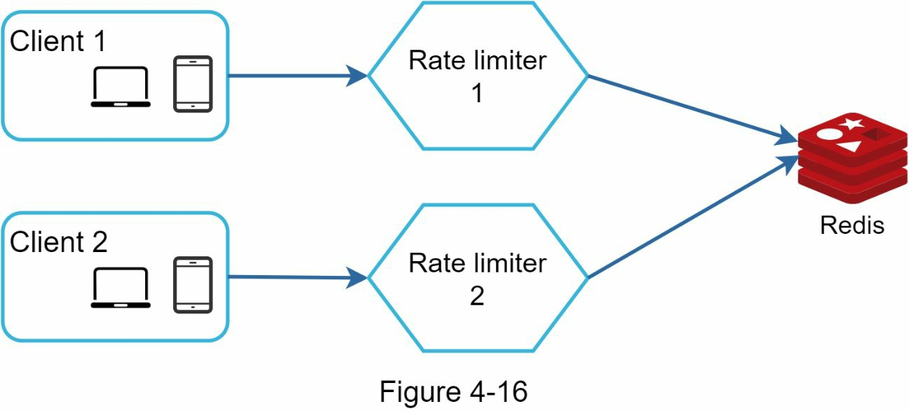
rate limiter 2. Como o nível da web é stateless, os clientes podem enviar requisições para um rate limiter diferente como mostrado no lado direito da figura 4-15. Se nenhuma sincronização acontecer, rate limiter 1 não contém nenhum dado sobre o cliente 2. Assim, o rate limiter não pode funcionar corretamente.
Uma possível solução é usar sessões pegajosas que permitem que um cliente envie tráfego para o mesmo rate limiter. Esta solução não é aconselhável porque não é escalável nem flexível. Uma abordagem melhor é usar lojas de dados centralizadas como Redis. O desenho é mostrado na figura 4-16.
Otimização de desempenho Otimização de desempenho é um tema comum em entrevistas de System Design. Vamos cobrir duas áreas para melhorar.
Primeiro, multi...data center A configuração é crucial para uma rate limiter Porque a latência é alta para os usuários localizados longe da data center. . A maioria dos provedores de serviços de nuvem constroem muitos locais de servidores ao redor do mundo. Por exemplo, como de 5- O quê?20 2020, Cloudflare tem 194 Servidores de borda geograficamente distribuídos.14- O que é isso? O tráfego é automaticamente encaminhado para o servidor mais próximo para reduzir a latência.
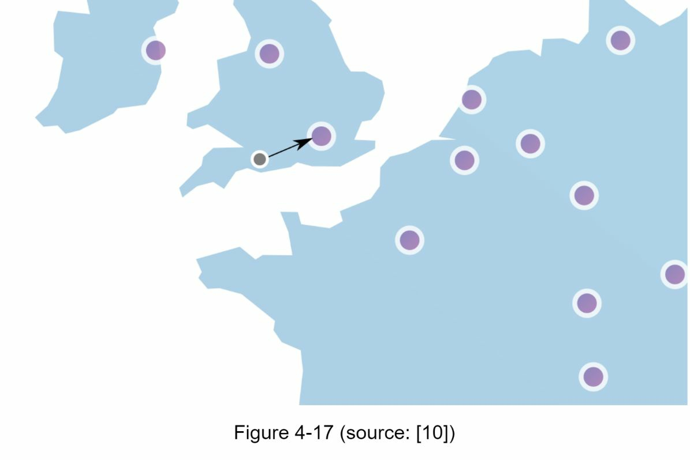
Segundo, sincronizar dados com um modelo Eventual Consistency. Se você não está claro sobre o modelo Eventual Consistency, consulte a seção "Consistência" em "Capítulo 6: Projetar um armazenamento de chave-valor."
Monitoramento
Depois do... rate limiter é colocado no lugar, é importante coletar dados analíticos para verificar se o rate limiter é eficaz. Principalmente, queremos ter certeza: • O Rate Limiting Algoritmo é eficaz.
• As regras Rate Limiting são eficazes.
Por exemplo, se as regras Rate Limiting são muito rígidas, muitos requisições válidos são deixados de lado. Neste caso, queremos relaxar um pouco as regras. Em outro exemplo, notamos que nosso rate limiter torna-se ineficaz quando há um aumento súbito no tráfego como vendas flash. Neste cenário, podemos substituir o algoritmo para suportar o tráfego. token bucket é um bom ajuste aqui.
Etapa 4 — Conclua Neste capítulo, discutimos diferentes algoritmos de Rate Limiting e seus prós/cons.
Algoritmos discutidos incluem • token bucket
• Leaking bucket
• Janela fixa
• sliding window log • sliding window counter Então, discutimos a arquitetura do sistema, rate limiter em um ambiente distribuído, otimização de desempenho e monitoramento. Similar a qualquer um System Design perguntas de entrevista, há outros pontos de conversa que você pode mencionar se o tempo permitir: • Duro contra macio Rate Limiting. .
• O número de requisições não pode exceder o limite.
• requisições podem exceder o limite por um curto período.
• Rate Limiting em diferentes níveis. Neste capítulo, nós só falamos sobre Rate Limiting no nível de aplicação (HTTP: camada 7). É possível aplicar Rate Limiting em outras camadas. Por exemplo, você pode aplicar Rate Limiting por endereços IP usando Iptables [15] (IP: camada 3).
Nota: O modelo de interconexão de sistemas abertos (modelo OSI) tem camadas 7 [16]: Camada 1: Camada física, Camada 2: Camada de ligação de dados, Camada 3: Camada de rede, Camada 4: Camada de transporte, Camada 5: Camada de sessão, Camada 6: Camada de apresentação, Camada 7: Camada de aplicação.
• evite ser limitado. Desenhe seu cliente com as melhores práticas, • use o cliente cache para evitar fazer chamadas API frequentes.
• entenda o limite e não envie muitos requisições em um curto período de tempo.
• Inclua código para pegar exceções ou erros para que seu cliente possa graciosamente se recuperar de exceções.
• Adicione tempo suficiente para tentar novamente a lógica.
Parabéns por chegar tão longe! Agora dê um tapinha nas costas. Bom trabalho!
Materiais de referência [1Estratégias e técnicas limitantes de taxas: https://cloud.google.com/solutions/ratelimiting-
[2] Twitter limites de taxa: https://developer.twitter.com/en/docs/basics/ratelimits
[3] Google Docs limites de uso: https://developers.google.com/docs/api/limits
[4] IBM microservices: https://www.ibm.com/cloud/learn/microservices
[5] Throttle API requisições para melhor throughput: https://docs.aws.amazon.com/apigateway/latest/developerguide/apigateway-request-
[6] Stripe rate limiters: https://stripe.com/blog/rate-limiters
[7] Shopify REST Admin. API limite de taxa: https://help.shopify.com/en/api/reference/rest-
Administração-API-limite de taxa
[8] Melhor Rate Limiting com Redis Sets sorteados: https://engineering.classdojo.com/blog/2015/02/06/rolling-rate-limiter/
[9# # # System Design - O que é isso? rate limiter e modelagem de dados: https://medium.com/@saisandeepmopuri/systemdesign-ratelimiter-and-data-modelling-
[10Como construímos Rate Limiting capaz de escalar para milhões de domínios: https://blog.cloudflare.com/counting-things-a-lot-of-different-things/
[11] Redis site: https://redis.io/
[12] Lyft Rate Limiting: https://github.com/lyft/ratelimit
[13Escalando o seu API com rate limiters:.. https://gist.github.com/ptarjan/e38f45f2dfe601419ca3af937fff574d#request-rate-limiter
[14O que é computação de borda: https://www.cloudflare.com/learning/serverless/glossary/what-
[15Pedidos de Limite de Taxa com Iptables: https://blog.programster.org/ratelimit-requests-with-
[16] Modelo OSI: https://en.wikipedia.org/wiki/OSI_model#Layer_architecture
CAPÍTULO 5: PROJETANDO CONSISTENT HASHING
Para alcançar o scaling horizontal, é importante distribuir requisições/dados de forma eficiente e uniforme entre os servidores. Consistent Hashing é uma técnica comumente usada para atingir esse objetivo. Mas primeiro, vamos dar uma olhada profunda no problema.
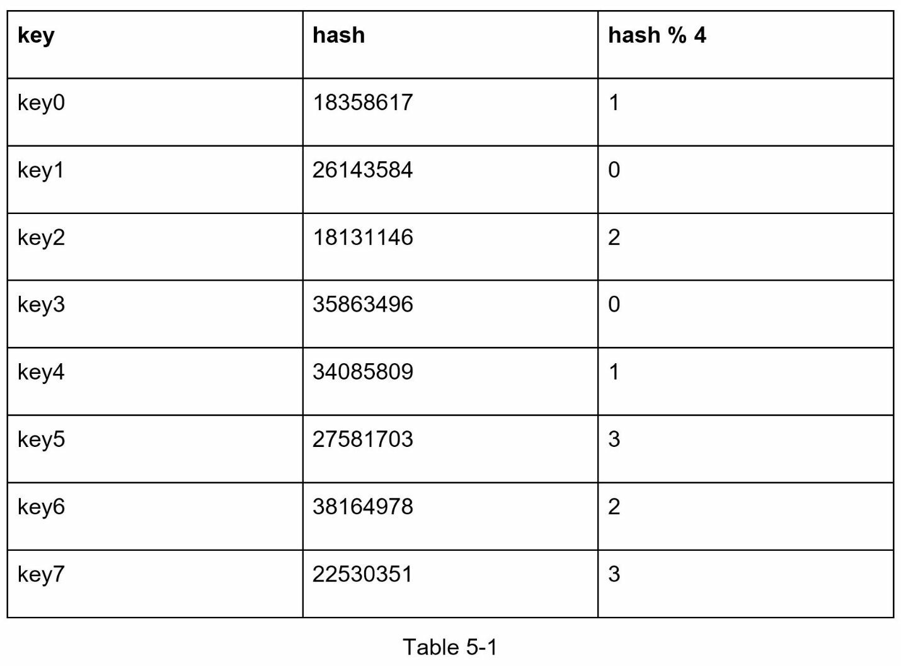
O problema do rehashing Se você tem Não. Servidores cache, uma maneira comum de equilibrar a carga é usar o seguinte método hash: serverIndex = hash(key) % N, onde N é do tamanho do servidor.
Vamos usar um exemplo para ilustrar como funciona. Como mostrado na tabela 5-1, temos servidores 4 e chaves 8 com seus hashes.
Para buscar o servidor onde uma chave está armazenada, realizamos a operação modular. f(key) % 4. . Por exemplo, hash(key0) % 4 = 1 significa que um cliente deve entrar em contato com o servidor 1 para buscar os dados em cache.
A figura 5-1 mostra a distribuição das chaves com base na tabela 5-1.
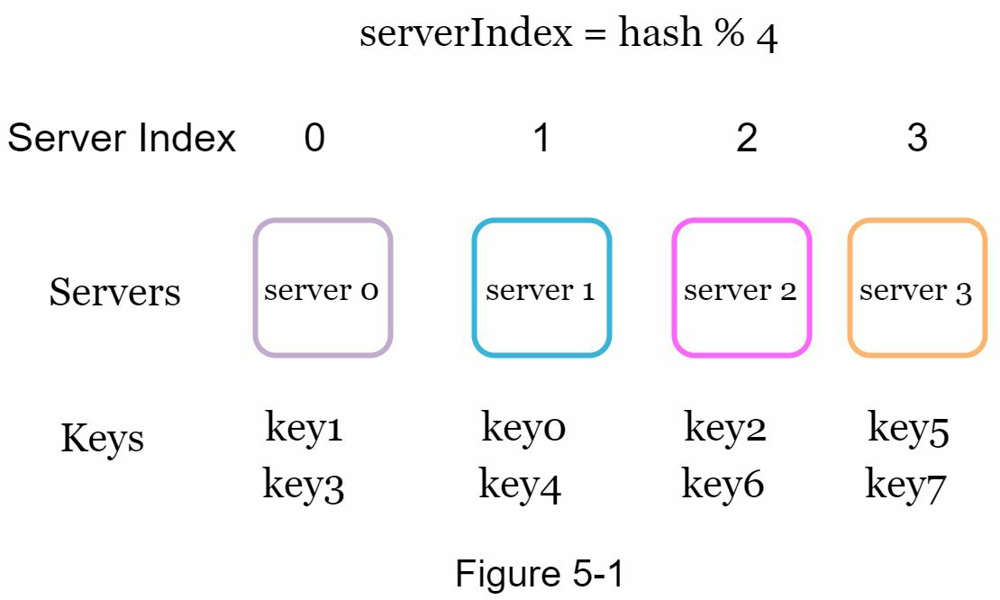
Essa abordagem funciona bem quando o tamanho do servidor é fixo, e a distribuição de dados é igual. No entanto, surgem problemas quando novos servidores são adicionados, ou os servidores existentes são removidos. Por exemplo, se o servidor 1 ficar offline, o tamanho do pool do servidor se torna 3. Usando a mesma função hash, temos o mesmo valor hash para uma chave. Mas aplicar uma operação modular nos dá diferentes índices de servidores porque o número de servidores é reduzido pelo 1. Obtemos os resultados como mostrado na tabela 5-2 aplicando hash % 3A figura 5-2 mostra a nova distribuição de chaves baseada na tabela 5-2.
Como mostrado na Figura 5-2, a maioria das chaves são redistribuídas, não apenas as originalmente armazenadas no servidor offline (servidor 1). Isso significa que quando o servidor 1 fica offline, a maioria dos clientes cache se conectarão aos servidores errados para buscar dados. Isso causa uma tempestade de erros do cache. Consistent Hashing é uma técnica eficaz para atenuar esse problema.
Consistent Hashing Citado da Wikipédia: "Consistent Hashing é um tipo especial de hashing de modo que quando uma tabela hash é redimensionada e Consistent Hashing é usado, apenas chaves K/N precisam ser remapeadas em média, onde K é o número de chaves, e N é o número de slots. Em contraste, na maioria das tabelas tradicionais hash, uma mudança no número de slots de array faz com que quase todas as chaves sejam remapeadas [1]”.
Espaço de hash e anel de hash Agora entendemos a definição de Consistent Hashing, vamos descobrir como funciona. Assumir que SHA-1 é usado como a função hash f, e a faixa de saída da função hash é: x0, x1, x2, x3, ..., xn. . Em criptografia, o espaço hash de SHA-1 vai de 0 para 2^160 - 1. Isso significa que... x0
corresponde a 0, Xn. corresponde a 2^160 - 1, e todos os outros valores hash na queda média entre 0 e 2^160 - 1. A figura 5-3 mostra o espaço hash.
Coletando as duas extremidades, temos um anel hash como mostrado na Figura 5-4: Aplicação de hash aos servidores
Usando a mesma função hash f, mapeamos servidores baseados no servidor IP ou nome no anel.
A figura 5-5 mostra que os servidores 4 são mapeados no anel hash.
Aplicação de hash às chaves
Uma coisa que vale a pena mencionar é que a função hash usada aqui é diferente da do "problema de reabastecimento", e não há operação modular. Como mostrado na Figura 5-6, 4 cache chaves (key0, key1, key2, e key3) são hashed para o anel hash Localização do servidor
Para determinar em qual servidor uma chave é armazenada, vamos no sentido horário da posição da chave no anel até que um servidor seja encontrado. A figura 5-7 explica este processo. Indo no sentido horário, key0 é armazenado em servidor 0; key1 é armazenado em servidor 1; key2 é armazenado em servidor 2 e... key3 é armazenado em servidor 3.
Adicionar um servidor
Usando a lógica descrita acima, adicionar um novo servidor só exigirá redistribuição de uma fração de chaves.
Na Figura 5-8, depois de um novo servidor 4 é adicionado, apenas key0 Precisa ser redistribuído. k1, k2, e... k3 Fique nos mesmos servidores. Vamos dar uma olhada na lógica. Antes. servidor 4 é adicionado, key0 é armazenado em servidor 0. . Agora, key0 Será armazenado em servidor 4 Porque... servidor 4 É o primeiro servidor que encontra indo no sentido horário de key0A posição do anel. As outras chaves não são redistribuídas com base no algoritmo Consistent Hashing.
Remover um servidor
Quando um servidor é removido, apenas uma pequena fração de chaves requer redistribuição com Consistent Hashing. Na Figura 5-9, quando servidor 1 é removido, apenas key1 Deve ser remapeado para servidor 2.
O REST das chaves não são afetados.
Dois problemas da abordagem básica O algoritmo Consistent Hashing foi introduzido por Karger. et al. no MIT [1]. Os passos básicos são: servidores de mapas • e chaves para o anel usando uma função hash uniformemente distribuída.
• Para descobrir para qual servidor uma chave é mapeada, vá no sentido horário da posição da chave até que o primeiro servidor no anel seja encontrado.
Dois problemas são identificados com esta abordagem. Primeiro, é impossível manter o mesmo tamanho de partições no anel para todos os servidores considerando que um servidor pode ser adicionado ou removido. Uma partição é o espaço hash entre servidores adjacentes. É possível que o tamanho das partições no anel atribuído a cada servidor seja muito pequeno ou bastante grande. Na Figura 5-10, se s1
é removido, s2's A partição (elevada com as setas bidirecionais) é duas vezes maior que s0
e... s3's Partição.
Segundo, é possível ter uma distribuição de chave não uniforme no anel. Por exemplo, se os servidores são mapeados para posições listadas na Figura 5-11, a maioria das chaves são armazenadas em servidor 2.
No entanto, servidor 1 e... servidor 3 Não tenho dados.
Uma técnica chamada nós virtuais ou réplicas é usada para resolver esses problemas.
Nós virtuais
Um nó virtual se refere ao nó real, e cada servidor é representado por vários nós virtuais no anel. Na Figura 5-12, ambos. servidor 0 e... servidor 1 Tem nós virtuais 3. O 3 é
e em sistemas do mundo real, o número de nós virtuais é muito maior.
Em vez de usar s0Nós temos S00_0, s00_1, e só para representar servidor 0 No anel. Da mesma forma, S1_0, S1_1, e S1_2 representar o servidor 1 no ringue. Com nós virtuais, cada servidor é responsável por múltiplas partições. Partições com rótulo. s0 são gerenciados pelo servidor 0.
Por outro lado, partições com etiqueta s1 são gerenciados por servidor 1.
Para encontrar em qual servidor uma chave é armazenada, vamos no sentido horário da localização da chave e encontramos o primeiro nó virtual encontrado no anel. Na figura 5-13, para descobrir qual servidor k0 é armazenado em, vamos para o sentido horário de k0A localização e encontrar o nó virtual S1_1, que se refere a servidor 1.
À medida que o número de nós virtuais aumenta, a distribuição de chaves torna-se mais equilibrada.
Isso é porque o desvio padrão fica menor com mais nós virtuais, levando à distribuição equilibrada de dados. O desvio padrão mede como os dados são espalhados. O resultado de um experimento realizado pela pesquisa on-line [2] mostra que com uma ou duas centenas de nós virtuais, o desvio padrão está entre 5% (200 nós virtuais) e 10%
(100 nós virtuais) da média. O desvio padrão será menor quando aumentarmos o número de nós virtuais. No entanto, mais espaços são necessários para armazenar dados sobre nós virtuais.
Este é um trade-off, e podemos ajustar o número de nós virtuais para atender aos requisitos do sistema.
Identificação das chaves afetadas Quando um servidor é adicionado ou removido, uma fração de dados precisa ser redistribuída. Como podemos encontrar o alcance afetado para redistribuir as chaves?
Na figura 5-14, servidor 4 é adicionado no anel. O alcance afetado começa de s4 (novo nó adicionado) e move-se no sentido anti-horário em torno do anel até que um servidor seja encontrado ( s3). Assim, chaves localizadas entre s3 e... s4 Precisa ser redistribuído para s4.
Quando um servidor ( s1) é removido como mostrado na Figura 5-15, a faixa afetada começa a partir de s1
(nodo removido) e move-se no sentido anti-horário em torno do anel até que um servidor é encontrado ( s0). Assim, chaves localizadas entre s0 e... s1 Deve ser redistribuído para s2.
Conclusão Neste capítulo, tivemos uma discussão aprofundada sobre Consistent Hashing, incluindo por que é necessário e como funciona. Os benefícios do Consistent Hashing incluem: chaves minimizadas • são redistribuídas quando os servidores são adicionados ou removidos.
• É fácil escalar horizontalmente porque os dados são distribuídos mais uniformemente.
• Mitigar o problema chave hotspot. Acesso excessivo a um shard específico pode causar sobrecarga no servidor. Imagine dados para Katy Perry, Justin Bieber, e Lady Gaga todos acabam no mesmo shard. Consistent Hashing ajuda a mitigar o problema distribuindo os dados mais uniformemente.
Consistent Hashing é amplamente utilizado em sistemas do mundo real, incluindo alguns notáveis: componente de partição • do banco de dados Amazon Dynamo [3]
• Partição de dados através do cluster em Apache Cassandra [4# #
• Discord Aplicação de bate-papo5# # #
• Rede de entrega de conteúdo Akamai6# #
• Rede Maglev. load balancer [7# # #
Parabéns por chegar tão longe! Agora dê um tapinha nas costas. Bom trabalho!
Materiais de referência [1] Consistent hashing: https://en.wikipedia.org/wiki/Consistent_hashing
[2] Consistent Hashing: https://tom-e-white.com/2007/11/consistent-hashing.html
[3] Dynamo: Amazon altamente disponível armazenamento de chave-valor: https://www.allthingsdistributed.com/files/amazon-dynamo-sosp2007.pdf
[4# # Cassandra - Um sistema de armazenamento estruturado descentralizado: http://www.cs.cornell.edu/Projects/ladis2009/papers/Lakshman-ladis2009.PDF
[5Como? Discord Escamada. Elixir para 5,000,000 Usuários simultâneos: https://blog.discord.com/scaling-elixir-f9b8e1e7c29b
[6] CS168: The Modern Algorítmica Toolbox Palestra #1: Introdução e Consistent Hashing: http://theory.stanford.edu/~tim/s16/l/l1.pdf
[7Maglev: uma rede de software rápida e confiável load balancer:.. https://static.googleusercontent.com/media/research.google.com/en//pubs/archive/44824.pdf
Um armazenamento de chave-valor, também referido como um banco de dados de valor chave, é um banco de dados não relacional. Cada identificador único é armazenado como uma chave com seu valor associado. Esse pareamento de dados é conhecido como um par de "valor chave".
Em um par chave-valor, a chave deve ser única, e o valor associado com a chave pode ser acessado através da chave. Chaves podem ser simples texto ou hashed valores. Por razões de desempenho, uma chave curta funciona melhor. Como são as chaves? Aqui estão alguns exemplos: • Chave de texto simples: “last_logged_in_at"
• Hashed chave: 253DDEC4
O valor em um par chave-valor pode ser cordas, listas, objetos, etc. O valor é geralmente tratado como um objeto opaco em armazenamentos de chave-valor, como Amazon Dynamo [1], Memcached [2], Redis [3], etc.
Aqui está um trecho de dados em um armazenamento de chave-valorNeste capítulo, você é convidado a projetar um armazenamento de chave-valor que apoia as seguintes operações: put(key, value) // insira “valor” associado à “chave”
- get(key) // obter "valor" associado com "chave"
Entenda o problema e defina o escopo do projeto Não há um design perfeito. Cada projeto alcança um equilíbrio específico em relação ao trade-offs do uso de leitura, escrita e memória. Outro trade-off deve ser feito entre consistência e disponibilidade. Neste capítulo, projetamos um armazenamento de chave-valor que compreende as seguintes características: • O tamanho de um par chave-valor é pequeno: menos que 10 KB.
• Capacidade de armazenar grandes dados.
• Alta disponibilidade: o sistema responde rapidamente, mesmo durante falhas.
• O sistema pode ser escalado para suportar grandes conjuntos de dados.
• A adição/deleção de servidores deve ser automática com base no tráfego.
• Consistência ajustável.
• Baixa latência.
Armazenamento de chave-valor em um único servidor Desenvolvendo um armazenamento de chave-valor que reside em um único servidor é fácil. Uma abordagem intuitiva é armazenar pares de valor chave em um hash tabela, que mantém tudo na memória. Mesmo que o acesso à memória seja rápido, encaixar tudo na memória pode ser impossível devido à restrição espacial. Duas otimizações podem ser feitas para caber mais dados em um único servidor: • Compressão de dados.
• Store apenas dados usados frequentemente na memória e o REST no disco Mesmo com essas otimizações, um único servidor pode alcançar sua capacidade muito rapidamente. Um armazenamento de chave-valor distribuído é necessário para apoiar Big Data.
Armazenamento de chave-valor distribuído Um armazenamento de chave-valor distribuído também é chamado de tabela hash, que distribui pares de valor chave em muitos servidores. Ao projetar um sistema distribuído, é importante entender CAP (CONSISTÊNCIA, Availabilidade, PTeorema de Tolerância.
CAP theorem
CAP theorem afirma que é impossível um sistema distribuído fornecer ao mesmo tempo mais de duas dessas três garantias: consistência, disponibilidade e tolerância à partição. Vamos estabelecer algumas definições.
ConsistênciaConsistência significa que todos os clientes veem os mesmos dados ao mesmo tempo, não importa qual nó eles se conectam.
Disponibilidade: A disponibilidade significa que qualquer cliente que solicita dados recebe uma resposta mesmo que alguns dos nós estejam em baixo.
Tolerância a partições: uma partição indica uma ruptura de comunicação entre dois nós.
Tolerância de partição significa que o sistema continua operando apesar das partições de rede.
CAP theorem afirma que uma das três propriedades deve ser sacrificada para apoiar 2 do 3
Propriedades como mostrado na Figura 6-1.
Hoje em dia, armazenamentos de chave-valor são classificados com base nas duas características CAP que suportam: Sistemas CP (consistência e tolerância à partição)Um CP armazenamento de chave-valor suporta consistência e tolerância à partição enquanto sacrifica a disponibilidade.
Sistemas AP (disponibilidade e tolerância à partição)Um AP armazenamento de chave-valor suporta a disponibilidade e a tolerância à partição enquanto sacrifica a consistência.
Sistemas CA (consistência e disponibilidade)Um CA armazenamento de chave-valor suporta consistência e
disponibilidade enquanto sacrifica a tolerância à partição. Uma vez que a falha na rede é inevitável, um sistema distribuído deve tolerar a partição da rede. Assim, um sistema CA não pode existir em aplicações do mundo real.
O que você lê acima é principalmente a parte de definição. Para facilitar a compreensão, vamos dar uma olhada em alguns exemplos concretos. Em sistemas distribuídos, os dados são replicados várias vezes. Assumindo que os dados são replicados em três nós réplicas, n1, n2 e... n3 Como mostrado na Figura 6-2.
Situação ideal.
No mundo ideal, a partição de rede nunca ocorre. Dados escritos para n1 é automaticamente replicado para n2 e... n3. . Consistência e disponibilidade são alcançadas.
Sistemas distribuídos no mundo real. Em um sistema distribuído, partições não podem ser evitadas, e quando uma partição ocorre, devemos escolher entre consistência e disponibilidade. Na figura 6-3, n3 desce e não consegue se comunicar com n1 e... n2. . Se os clientes escreverem dados para n1 ou n2Os dados não podem ser propagados para n3. Se os dados forem escritos para n3 mas não propagado para n1 e... n2 Ainda, n1 e... n2 teria dados obsoletos.
Se escolhermos consistência sobre disponibilidade (sistema PC), devemos bloquear todas as operações de escrita para n1 e... n2 Para evitar inconsistência de dados entre esses três servidores, o que torna o sistema indisponível. Sistemas bancários geralmente têm requisitos extremamente elevados e consistentes. Por exemplo, é crucial para um sistema bancário exibir as informações de balanço mais atualizadas. Se a inconsistência ocorre devido a uma partição de rede, o sistema bancário retorna um erro antes que a inconsistência seja resolvida.
No entanto, se escolhermos disponibilidade sobre consistência (sistema AP), o sistema continua aceitando leituras, mesmo que possa retornar dados obsoletos. Para escrever, n1 e... n2 E os dados serão sincronizados com n3 Quando a partição da rede for resolvida.
Escolher o CAP certo garante que se encaixa no seu caso de uso é um passo importante na construção de um armazenamento de chave-valor distribuído. Você pode discutir isso com seu entrevistador e projetar o sistema de acordo.
Componentes do sistema. Nesta seção, discutiremos os seguintes componentes centrais e técnicas usadas para construir uma partição de dados armazenamento de chave-valor: •
• Replicação de dados
• Consistência
• Resolução de inconsistência • Falhas de manipulação
• diagrama de arquitetura do sistema • Escrever caminho
• Leia o caminho
O conteúdo abaixo é baseado em três populares. armazenamento de chave-valor Sistemas: Dynamo [4], Cassandra [5[E] Bigtable [6- O que é isso?
Particionamento dos dados
Para grandes aplicações, é inviável caber os dados completos em um único servidor. A maneira mais simples de conseguir isso é dividir os dados em divisórias menores e armazená-los em vários servidores. Há dois desafios enquanto partimos os dados: • Distribua dados em vários servidores uniformemente.
• Minimize o movimento de dados quando os nós são adicionados ou removidos.
Consistent Hashing discutido no Capítulo 5 é uma ótima técnica para resolver esses problemas. Vamos rever como o Consistent Hashing funciona em um nível alto.
• Primeiro, servidores são colocados em um anel hash. Na Figura 6-4, oito servidores, representados por s0, s1, …, s7, são colocados no anel hash.
• Em seguida, uma chave é hashed para o mesmo anel, e é armazenado no primeiro servidor encontrado enquanto se move no sentido horário. Por exemplo, key0 é armazenado em s1 usando essa lógica.
Usar Consistent Hashing para particionar dados tem as seguintes vantagens: Scaling automático: Os servidores podem ser adicionados e removidos automaticamente, dependendo do
Carregar.
Heterogeneidade: O número de nós virtuais para um servidor é proporcional à capacidade do servidor.
Por exemplo, servidores com maior capacidade são atribuídos com mais nós virtuais.
Replicação de dados
Para alcançar alta disponibilidade e confiabilidade, os dados devem ser replicados assíncronamente sobre N
Servidores, onde N é um parâmetro configurável. Estes. N Os servidores são escolhidos usando a seguinte lógica: depois de uma chave ser mapeada para uma posição no anel hash, caminhe no sentido horário dessa posição e escolha o primeiro N Servidores no anel para armazenar cópias de dados. Na figura 6-5 ( N = 3), key0 é replicado em s1, s2, e... s3.
Com nós virtuais, o primeiro N nós no anel pode ser de propriedade de menos de N Servidores físicos. Para evitar esse problema, só escolhemos servidores únicos enquanto fazemos a lógica da caminhada no sentido horário.
Nós no mesmo data center muitas vezes falham ao mesmo tempo devido a falta de energia, problemas de rede, desastres naturais, etc. Para melhor confiabilidade, réplicas são colocadas em data centers distintos, e data centers são conectadas através de redes de alta velocidade.
Consistência
Como os dados são replicados em múltiplos nós, devem ser sincronizados em réplicas. O consenso do quórum pode garantir consistência para as operações de leitura e escrita. Vamos estabelecer algumas definições primeiro.
N O número de réplicas W Um quórum de escrita de tamanho W. . Para que uma operação de escrita seja considerada um sucesso, a operação de escrita deve ser reconhecida de W Replicas.
R Um quórum de leitura de tamanho R. . Para que uma operação de leitura seja considerada como bem sucedida, a operação de leitura deve esperar por respostas de pelo menos R Replicas.
Considere o seguinte exemplo mostrado na Figura 6-6 com N = 3.
W = 1 Não significa que os dados sejam escritos em um servidor. Por exemplo, com a configuração na Figura 6-6, os dados são replicados em s0, s1, e... s2. W = 1 significa que o coordenador deve receber pelo menos um reconhecimento antes que a operação de escrita seja considerada um sucesso. Por exemplo, se recebermos um reconhecimento de s1, não precisamos mais esperar por agradecimentos de s0 e... s2. . Um coordenador age como um proxy entre o cliente e os nós.
A configuração de W, R e... N é um típico trade-off entre latência e consistência. Sim. W =
1 ou R = 1, uma operação é devolvida rapidamente porque um coordenador só precisa esperar por uma resposta de qualquer uma das réplicas. Sim. W ou R > 1, o sistema oferece uma melhor consistência, no entanto, a consulta será mais lenta porque o coordenador deve esperar pela resposta da réplica mais lenta.
Sim. W + R > N, Strong Consistency é garantido porque deve haver pelo menos um Sobreposição de nó que tem os dados mais recentes para garantir consistência.
Como configurar N, W, e R Para caber em nossos casos de uso? Aqui estão algumas das possíveis configurações: R = 1 e... W = NO sistema está otimizado para uma leitura rápida.
Sim. W = 1 e R = N, o sistema é otimizado para gravação rápida.
Sim. W + R > N, Strong Consistency é garantido (Geralmente N = 3, W = R = 2).
Sim. W + R <= NStrong Consistency não está garantido.
Dependendo da exigência, podemos ajustar os valores de W, R, N para alcançar o nível de consistência desejado.
Modelos de consistência Modelo de consistência é outro fator importante a considerar ao projetar um armazenamento de chave-valor. Um modelo de consistência define o grau de consistência dos dados, e um amplo espectro de possíveis modelos de consistência existem: • Strong Consistency: qualquer operação de leitura retorna um valor correspondente ao resultado do item de dados de escrita mais atualizado. Um cliente nunca vê dados desatualizados.
Fraca consistência •: operações de leitura subsequentes podem não ver o valor mais atualizado.
• Eventual Consistency: esta é uma forma específica de consistência fraca. Dado o tempo suficiente, todas as atualizações são propagadas, e todas as réplicas são consistentes.
Strong Consistency é geralmente alcançado forçando uma réplica a não aceitar novas leituras/escritas até que cada réplica tenha concordado com a escrita atual. Esta abordagem não é ideal para sistemas altamente disponíveis porque poderia bloquear novas operações. Dynamo e Cassandra adotam Eventual Consistency, que é nosso modelo de consistência recomendado para nosso armazenamento de chave-valor. A partir de textos simultâneos, Eventual Consistency permite que valores inconsistentes entrem no sistema e forcem o cliente a ler os valores para se reconciliar. A próxima seção explica como a reconciliação funciona com o versionamento.
Resolução de inconsistência: versionamento Replicação dá alta disponibilidade, mas causa inconsistências entre réplicas. Versões e travas vetoriais são usadas para resolver problemas de inconsistência. Versionamento significa tratar cada modificação de dados como uma nova versão imutável de dados. Antes de falarmos sobre versionamento, vamos usar um exemplo para explicar como a inconsistência acontece: como mostrado na Figura 6-7, ambos os nós réplicas n1 e... n2 ter o mesmo valor. Vamos chamar isso de valor original. Valor. Servidor 1 e... servidor 2 obter o mesmo valor para get(“name”) Operação.
Próximo. servidor 1 muda o nome para "johnSanFrancisco", e servidor 2 muda o nome para "johnNewYork" como mostrado na Figura 6-8. Essas duas mudanças são realizadas simultaneamente.
Agora, temos valores conflitantes, chamados de versões v1 e... v2.
Neste exemplo, o valor original pode ser ignorado porque as modificações foram baseadas nele. No entanto, não há uma maneira clara de resolver o conflito das duas últimas versões. Para resolver esse problema, precisamos de um sistema de versão que possa detectar conflitos e conciliar conflitos. Um relógio vetorial é uma técnica comum para resolver esse problema. Vamos examinar como os relógios vetoriais funcionam.
Um relógio vetorial é um [servidor, versão] par associado com um item de dados. Pode ser usado para verificar se uma versão precede, sucede, ou em conflito com outras.
Suponha que um relógio vetorial é representado por D([S1, v1], [S2, v2], …, [Sn, vn]), onde D é um item de dados, v1 é um contador de versões, e s1 é um número de servidor, etc. Se o item de dados D Está escrito para o servidor. Si., o sistema deve executar uma das seguintes tarefas.
• Incremento Vi. Sim. [Si, vi] existe.
• Caso contrário, crie uma nova entrada. [Si, 1].
A lógica abstrata acima é explicada com um exemplo concreto como mostrado na Figura 6-9.
1. Um cliente escreve um item de dados. D1 para o sistema, e a escrita é tratada pelo servidor Sx., que agora tem o relógio vetor D1 [(Sx, 1)].
2. Outro cliente lê as últimas notícias. D1, atualiza-lo para D2, e escreve de volta. D2 Descendo de D1 Então ele sobrepõe. D1. . Assumindo que a escrita seja feita pelo mesmo servidor. Sx., que agora tem relógio vetorial D2 [Sx, 2].
3. Outro cliente lê as últimas notícias. D2, atualiza-lo para D3, e escreve de volta. Assumindo que a escrita seja feita pelo servidor. Sy., que agora tem relógio vetorial D3[Sx, 2[Sy, 1])).
4. Outro cliente lê as últimas notícias. D2, atualiza-lo para D4, e escreve de volta. Assuma a escrita. é manuseado pelo servidor Sz., que agora tem D4[Sx, 2[Sz, 1])).
5. Quando outro cliente lê D3 e... D4, ele descobre um conflito, que é causado pelo item de dados D2 sendo modificado por ambos. Sy. e... Sz.. . O conflito é resolvido pelo cliente e dados atualizados são enviados para o servidor. Assuma que a escrita é manuseada por Sx., que agora tem D5([Sx, 3], [Sy, 1], [Sz, 1]. . Explicaremos como detectar o conflito em breve.
Usando relógios vetoriais, é fácil dizer que uma versão X é um ancestral (ou seja, sem conflito) da versão Y Se a versão conta para cada participante no relógio vetor de Y é maior ou igual aos da versão. X. . Por exemplo, o relógio vetorial D([s0, 1], [s1, 1])] é um antepassado de D([s0, 1], [s1, 2]). . Portanto, nenhum conflito é registrado.
Da mesma forma, você pode dizer que uma versão X é um irmão (ou seja, um conflito existe) de Y Se houver algum participante em YO relógio vetorial que tem um contador que é menor que o correspondente. X. . Por exemplo, os seguintes dois relógios vetoriais indicam que há um conflito: D([s0, 1], [s1, 2]) e... D([s0, 2], [s1, 1]).
Mesmo que os relógios vetoriais possam resolver conflitos, há duas desvantagens notáveis. Primeiro, relógios vetoriais adicionam complexidade ao cliente porque ele precisa implementar a lógica de resolução de conflitos.
Segundo, o [servidor: versão] Os pares no relógio vetor podem crescer rapidamente. Para resolver esse problema, estabelecemos um limite para o comprimento, e se exceder o limite, os pares mais antigos são removidos. Isso pode levar a ineficiências na reconciliação porque a relação descendente não pode ser determinada com precisão. No entanto, com base no papel Dynamo [4], Amazon ainda não encontrou este problema na produção, portanto, é provavelmente uma solução aceitável para a maioria das empresas.
Tratamento de falhas Como em qualquer grande sistema em escala, falhas não são apenas inevitáveis, mas comuns. Lidar com cenários de falha é muito importante. Nesta seção, introduzimos primeiro técnicas para detectar falhas. Então, vamos repassar estratégias comuns de resolução de falhas.
Detecção de falhas Em um sistema distribuído, é insuficiente acreditar que um servidor está desligado porque outro servidor diz isso. Normalmente, requer pelo menos duas fontes independentes de informação para marcar um servidor.
Como mostrado na Figura 6-10, tudo para todos multicasting é uma solução simples. No entanto, isso é ineficiente quando muitos servidores estão no sistema.
Uma solução melhor é usar métodos de detecção descentralizada de falhas como protocolo de fofocas.
O protocolo de fofocas funciona da seguinte forma: • Cada nó mantém uma lista de membros, que contém membros. IDs e batimentos cardíacos contadores.
• Cada nó aumenta periodicamente seu contador de batimentos cardíacos.
• Cada nó periodicamente envia batimentos cardíacos para um conjunto de nós aleatórios, que por sua vez se propagam para outro conjunto de nós.
• Uma vez que nós recebem batimentos cardíacos, a lista de membros é atualizada para as últimas informações.
• Se o batimento cardíaco não aumentou por mais do que períodos pré-definidos, o membro é considerado offline.
• Node s0 mantém uma lista de membros do nó mostrada no lado esquerdo.
• Node s0 Nota que o contador de batimentos cardíacos do nó s2 (membro ID = 2) não aumentou por muito tempo.
• Node s0 envia batimentos cardíacos que incluem s2A informação de um conjunto de nós aleatórios. Uma vez que outros nós confirmem que s2O contador de batimentos cardíacos não foi atualizado há muito tempo, nó. s2 é marcado para baixo, e esta informação é propagada para outros nós.
Tratamento de falhas temporárias Após falhas serem detectadas através do protocolo de fofocas, o sistema precisa implantar certos mecanismos para garantir a disponibilidade. Na abordagem de quórum estrito, operações de leitura e escrita poderiam ser bloqueadas como ilustrado na seção de consenso de quórum.
Uma técnica chamada "quorum desleixado"4É usado para melhorar a disponibilidade. Em vez de aplicar a exigência de quórum, o sistema escolhe o primeiro W Servidores saudáveis para escrever e primeiro R
Servidores saudáveis para leituras no anel hash. Servidores desligados são ignorados.
Se um servidor não estiver disponível devido a falhas de rede ou servidor, outro servidor processará solicitações temporariamente. Quando o servidor de baixo estiver pronto, as mudanças serão empurradas de volta para alcançar a consistência dos dados. Esse processo é chamado de transferência indireta. Desde então s2 Não está disponível na figura 6-12, lê e escreve será tratado por s3 Temporariamente. Quando? s2 Volta on-line, s3 vai entregar os dados de volta para s2.
Tratamento de falhas permanentes
A transferência oculta é usada para lidar com falhas temporárias. E se uma réplica estiver permanentemente indisponível? Para lidar com tal situação, implementamos um protocolo anti-entropia para manter réplicas sincronizadas. Antientropia envolve comparar cada pedaço de dados em réplicas e atualizar cada réplica para a versão mais nova. Uma árvore Merkle é usada para detectar inconsistências e minimizar a quantidade de dados transferidos.
Citado da Wikipédia [7]: “Uma árvore hash ou árvore Merkle é uma árvore em que cada nó não-folha é rotulado com o hash dos rótulos ou valores (no caso de folhas) de seus nós filhos.
Árvores hash permitem uma verificação eficiente e segura do conteúdo de grandes estruturas de dados.
Assumindo que o espaço chave é de 1 para 12, os passos a seguir mostram como construir uma árvore Merkle.
Caixas destacadas indicam inconsistência.
Passo 1: Divida espaço chave em baldes (4 em nosso exemplo) como mostrado na Figura 6-13. Um balde é usado como nó de nível de raiz para manter uma profundidade limitada da árvore.
Passo 2Assim que os baldes forem criados, hash Cada chave em um balde usando um uniforme hashing método (Figura) 6- O quê?14).
Passo 3: Criar um único nó hash por balde (Figura 6-15).
Passo 4: Construa a árvore para cima até a raiz calculando hashes de crianças (Figura 6-16).
Para comparar duas árvores Merkle, comece comparando os hashes de raiz. Se o root hashes corresponder, ambos os servidores têm os mesmos dados. Se raiz hashes discordar, então a criança esquerda hashes é comparada seguida por direita hashes criança. Você pode atravessar a árvore para descobrir quais baldes não são sincronizados e sincronizar esses baldes apenas.
Usando árvores Merkle, a quantidade de dados necessários para serem sincronizados é proporcional às diferenças entre as duas réplicas, e não a quantidade de dados que elas contêm. Em sistemas do mundo real, o tamanho do balde é bem grande. Por exemplo, uma possível configuração é de um milhão de baldes por um bilhão de chaves, então cada balde só contém chaves 1000.
Tratamento da indisponibilidade de um data center A falha do data center pode acontecer devido à falta de energia, falha na rede, desastre natural, etc.
Para construir um sistema capaz de lidar com a falha do data center, é importante replicar dados através de vários data centers. Mesmo que um data center esteja completamente offline, os usuários ainda podem acessar dados através do outro data centers.
Diagrama de arquitetura do sistema Agora que discutimos diferentes considerações técnicas na concepção de um armazenamento de chave-valor, podemos mudar nosso foco no diagrama de arquitetura, mostrado na Figura 6-17.
As principais características da arquitetura estão listadas da seguinte forma: clientes • comunicam com o armazenamento de chave-valor através do APIs simples: get(key) e... Coloque a chave. valor).
• Um coordenador é um nó que age como um proxy entre o cliente e o armazenamento de chave-valor.
• Nós são distribuídos em um anel usando Consistent Hashing.
• O sistema é completamente descentralizado então adicionar e mover nós pode ser automático.
Dados • são replicados em múltiplos nós.
• Não há Single Point of Failure como cada nó tem o mesmo conjunto de responsabilidades.
Como o projeto é descentralizado, cada nó executa muitas tarefas como apresentado na Figura 6-18.
Fluxo de escrita
A figura 6-19 explica o que acontece depois que um requisição de escrita é direcionado para um nó específico. Por favor, note que os projetos propostos para escrever / ler caminhos são primários baseados na arquitetura do Cassandra [8].
1. O requisição de escrita é persistido em um arquivo log.
2. Dados são salvos na memória cache.
3. Quando a memória cache está cheia ou atinge um limite predefinido, os dados são lidos para SSTable [9] no disco. Nota: uma tabela de cordas ordenadas (SSTable) é uma lista ordenada de pares <chave, valor>. Para os leitores interessados em aprender mais sobre SSTable, consulte o material de referência [9].
Fluxo de leitura
Depois de um requisição de leitura é direcionado para um nó específico, ele primeiro verifica se os dados estão na memória cache. Se assim for, os dados são devolvidos ao cliente como mostrado na Figura 6-20.
Se os dados não estiverem na memória, serão recuperados do disco. Precisamos de uma maneira eficiente de descobrir qual SSTable contém a chave. filtro de Bloom [10] é comumente usado para resolver este problema.
O caminho de leitura é mostrado na Figura 6-21 quando os dados não estão na memória.
1. O sistema primeiro verifica se os dados estão na memória. Se não, vá para o passo 2.
2. Se os dados não estão na memória, o sistema verifica o filtro de Bloom.
3. O filtro de Bloom é usado para descobrir qual SSTables pode conter a chave.
4. SSTables devolve o resultado do conjunto de dados.
5. O resultado do conjunto de dados é devolvido ao cliente.
Resumo
Este capítulo cobre muitos conceitos e técnicas. Para refrescar sua memória, a tabela seguinte resume características e técnicas correspondentes usadas para um armazenamento de chave-valor distribuído.
Materiais de referência [1] Amazon DynamoDB: https://aws.amazon.com/dynamodb/
[2] memcached: https://memcached.org/
[3] Redis: https://redis.io/
[4] Dynamo: Amazon altamente disponível armazenamento de chave-valor: https://www.allthingsdistributed.com/files/amazon-dynamo-sosp2007.pdf
[5] Cassandra: https://cassandra.apache.org/
[6] Bigtable: Um sistema de armazenamento distribuído para dados estruturados: https://static.googleusercontent.com/media/research.google.com/en//archive/bigtable-
[7] Merkle tree: https://en.wikipedia.org/wiki/Merkle_tree
[8# # # Cassandra Arquitetura: https://cassandra.apache.org/doc/latest/architecture/
[9] SStable: https://www.igvita.com/2012/02/06/sstable-and-log-structured-storage-leveldb/
[10] Bloom filter https://en.wikipedia.org/wiki/Bloom_filter
CAPÍTULO 7: PROJETANDO UM GERADOR DE IDS ÚNICOS EM SISTEMAS DISTRIBUÍDOS
SISTEMAS DISTRIBUÍDOS
Neste capítulo, você é convidado a projetar um único gerador ID em sistemas distribuídos. Seu primeiro pensamento pode ser usar uma chave primária com o auto_increment atributo em um banco de dados tradicional. No entanto, auto_increment Não funciona em um ambiente distribuído porque um único servidor de banco de dados não é grande o suficiente e gerar IDs único em vários bancos de dados com atraso mínimo é desafiador.
Aqui estão alguns exemplos de IDs único: Etapa 1 — Entenda o problema e defina o escopo do projeto Fazer perguntas esclarecedoras é o primeiro passo para resolver qualquer pergunta de entrevista do System Design.
Aqui está um exemplo de interação candidato-entrevistador: CandidataQuais são as características do IDs único?
EntrevistadorIDs deve ser único e ordenável.
CandidataPara cada novo registro, ID aumenta em 1?
EntrevistadorO ID aumenta pelo tempo, mas não necessariamente apenas aumenta pelo 1. IDs criado à noite são maiores do que aqueles criados pela manhã no mesmo dia.
CandidataIDs só contém valores numéricos?
EntrevistadorSim, está correto.
CandidataQual é a exigência de comprimento ID?
EntrevistadorIDs deve caber em 64-bit.
CandidataQual é a escala do sistema?
EntrevistadorO sistema deve gerar 10,000 IDs por segundo.
Acima estão algumas das perguntas que você pode fazer ao seu entrevistador. É importante entender os requisitos e esclarecer ambiguidades. Para esta pergunta de entrevista, os requisitos estão listados da seguinte forma: • IDs deve ser único.
• IDs são apenas valores numéricos.
• IDs cabem em 64-bit.
• IDs são encomendados por data.
• Capacidade de gerar sobre 10,000 IDs único por segundo.
Etapa 2 — Proponha uma arquitetura de alto nível e obtenha concordância Múltiplas opções podem ser usadas para gerar IDs único em sistemas distribuídos. As opções que consideramos são: • Multi-master replicação • Identificador universalmente único (UUID) Servidor • Ticket
• Twitter Snowflake abordagem Deixe-nos olhar para cada um deles, como eles funcionam, e os prós / contras de cada opção.
Replicação multi-master Como mostrado na Figura 7-2, a primeira abordagem é a replicação multi-master.
Esta abordagem usa os bancos de dados. auto_increment Feature. Em vez de aumentar o próximo ID
por 1, nós o aumentamos por K, Onde? K. é o número de servidores em uso. Como ilustrado na Figura 7-2, o próximo ID a ser gerado é igual ao ID anterior no mesmo servidor mais o 2. Isso resolve alguns problemas de escalabilidade porque IDs pode escalar com o número de servidores de banco de dados.
No entanto, esta estratégia tem algumas desvantagens principais: • Difícil de escalar com vários data centers • IDs não sobe com o tempo em vários servidores.
• Ele não escala bem quando um servidor é adicionado ou removido.
UUID
Um UUID é outra maneira fácil de obter IDs único. UUID é um número 128-bit usado para identificar informações em sistemas de computador. UUID tem uma probabilidade muito baixa de ter conluio.
Citado da Wikipédia, "depois de gerar 1 bilhões de UUIDs a cada segundo por aproximadamente 100 anos seria a probabilidade de criar uma única duplicata alcançar 50%" [1].
Aqui está um exemplo de UUID: 09c93e62-50b4-468d-bf8a-c07e1040bfb2. . UUIDs pode ser gerado independentemente sem coordenação entre servidores. Figura 7-3 apresenta o projeto UUIDs.
Neste projeto, cada servidor web contém um gerador ID, e um servidor web é responsável por gerar IDs independentemente.
Prós:
• Gerar UUID é simples. Nenhuma coordenação entre servidores é necessária, então não haverá problemas de sincronização.
• O sistema é fácil de escalar porque cada servidor web é responsável por gerar IDs que consomem. O gerador ID pode escalar facilmente com servidores web.
Contras:
• IDs são 128 bits longo, mas nossa exigência é 64 bits.
• IDs não sobe com o tempo.
• IDs pode ser não-numérico.
Ticket server
Servidores de ingressos são outra maneira interessante de gerar únicos IDs. . Flicker desenvolveu servidores de ticket para gerar chaves primárias distribuídas.2- O que é isso? Vale a pena mencionar como o sistema funciona.
A idéia é usar um centralizado. auto_increment recurso em um servidor de banco de dados único (Ticket Server). Para saber mais sobre isso, consulte o artigo do blog de engenharia da Flicker [2].
Prós:
• Numeric IDs.
• É fácil de implementar, e funciona para aplicações de pequena a média escala.
Contras:
• Single Point of Failure. Um servidor de tickets significa que se o servidor de tickets cair, todos os sistemas que dependem dele enfrentarão problemas. Para evitar um Single Point of Failure, podemos configurar vários servidores de tickets. No entanto, isso introduzirá novos desafios, como sincronização de dados.
Abordagem Snowflake do Twitter Abordagens mencionadas acima nos dão algumas idéias sobre o quão diferente ID Sistemas de geração funcionam. No entanto, nenhum deles atende aos nossos requisitos específicos, assim, precisamos de outra abordagem. TwitterÉ único. ID Sistema de geração chamado “Snowflake” [3É inspirador e pode satisfazer nossos requisitos.
Dividir e conquistar é nosso amigo. Em vez de gerar um ID diretamente, dividimos um ID em diferentes seções. A figura 7-5 mostra o layout de um 64-bit ID.
Cada seção é explicada abaixo.
• sinal bit: 1 bit. Sempre será 0. Isto é reservado para usos futuros. Pode ser usado para distinguir números assinados e não assinados.
• timestamp 41 bits. Milésimos de segundo desde a época ou época personalizada. Usamos Twitter Snowflake época padrão 1288834974657, equivalente a Nov 04, 2010, 01:42:54 UTC.
• Datacenter ID: 5 bits, que nos dá 2 ^ 5 = 32 Datacenters.
• Machine ID: 5 bits, que nos dá 2 ^ 5 = 32 máquinas por datacenter.
• número de sequência: 12 bits. Para cada ID gerado naquela máquina/processo, o número de sequência é incrementado por 1. O número é reposto para 0 a cada milissegundo.
Etapa 3 — Aprofunde o projeto No design de alto nível, discutimos várias opções para projetar um único gerador ID em sistemas distribuídos. Nós estabelecemos uma abordagem baseada no Twitter Snowflake ID
Gerador. Vamos mergulhar fundo no projeto. Para refrescar nossa memória, o diagrama de design está listado abaixo.
Datacenter IDs e máquina IDs são escolhidos no tempo de inicialização, geralmente corrigidos uma vez que o sistema está funcionando. Qualquer mudança no datacenter IDs e máquina IDs requerem revisão cuidadosa uma vez que uma mudança acidental nesses valores pode levar a conflitos ID. timestamp e números de sequência são gerados quando o gerador ID está funcionando.
Timestamp
Os 41 bits mais importantes compõem a seção timestamp. À medida que o timestamps cresce com o tempo, o IDs é ordenável pelo tempo. A figura 7-7 mostra um exemplo de como a representação binária é convertida em UTC. Você também pode converter UTC de volta para representação binária usando um método semelhante.
O máximo timestamp que pode ser representado em 41 bits é 2 ^ 41 - 1 = 2199023255551 Milissegundos (ms), que nos dá: ~ 69 anos =
2199023255551 ms 1000 segundos 365 dias 24 horas 3600 segundos. . Isso significa que o ID
O gerador vai trabalhar por anos 69 e ter um tempo de época personalizado perto da data atual atrasa o tempo de transbordamento. Depois de anos 69, precisaremos de uma nova época ou adotar outras técnicas para migrar IDs.
Número de sequência
O número de sequência é 12 bits, que nos dá 2^ 12 = 4096 combinações. Este campo é 0, a menos que mais de um ID seja gerado em milissegundo no mesmo servidor. Em teoria, uma máquina pode suportar um máximo de 4096 novo IDs por milissegundo.
Etapa 4 — Conclua Neste capítulo, discutimos diferentes abordagens para projetar um único gerador ID: replicação multi-master, UUID, servidor de tickets, e Twitter Snowflake-como o único gerador ID. Nós resolvemos no Snowflake como ele suporta todos os nossos casos de uso e é escalável em um ambiente distribuído.
Se houver tempo extra no final da entrevista, aqui estão alguns pontos adicionais: sincronização do relógio •. Em nosso projeto, assumimos que os servidores da geração ID têm o mesmo relógio. Essa suposição pode não ser verdade quando um servidor está rodando em vários núcleos. O mesmo desafio existe em cenários multi-máquina. Soluções para sincronização de relógios estão fora do escopo deste livro, no entanto, é importante entender que o problema existe.
Protocolo de tempo de rede é a solução mais popular para este problema. Para os leitores interessados, consulte o material de referência.4- O que é isso?
Ajuste de comprimento da seção •. Por exemplo, menos números de sequência, mas mais timestamp bits são eficazes para aplicações de baixa concorrência e de longo prazo.
• Alta disponibilidade. Como um gerador ID é um sistema crítico, deve estar altamente disponível.
Parabéns por chegar tão longe! Agora dê um tapinha nas costas. Bom trabalho!
Materiais de referência [1Identificador universalmente único: https://en.wikipedia.org/wiki/Universally_unique_identifier
[2Servidores de ingressos distribuíram chaves primárias únicas no Barato: https://code.flickr.net/2010/02/08/ticket-servers-distributed-unique-primary-keys-on-the-
[3] Anunciando Snowflake: https://blog.twitter.com/engineering/en_us/a/2010/announcing-
[4] Protocolo de tempo de rede: https://en.wikipedia.org/wiki/Network_Time_Protocol
CAPÍTULO 8: PROJETANDO UM ENCURTADOR DE URLS
Neste capítulo, vamos abordar uma interessante e clássica questão de entrevista de System Design: projetar um serviço de encurtamento URL como minúsculo.
Etapa 1 — Entenda o problema e defina o escopo do projeto As perguntas da entrevista do System Design são intencionalmente deixadas em aberto. Para projetar um sistema bem desenvolvido, é fundamental fazer perguntas esclarecedoras.
CandidataPode dar um exemplo de como um encurtador URL funciona?
EntrevistadorAssumir URL
https://www.systeminterview.com/q=chatsystem&c=loggedin&v=v3&l=long é o URL original. Seu serviço cria um pseudônimo com comprimento mais curto: https://tinyurl.com/ y7keocwj. Se você clicar no pseudônimo, ele redireciona para o URL original.
CandidataO que é o volume de tráfego?
Entrevistador100 milhões de URLs são gerados por dia.
CandidataQuanto tempo é o URL encurtado?
EntrevistadorO mais curto possível.
CandidataQue personagens são permitidos no URL encurtado?
EntrevistadorURL encurtado pode ser uma combinação de números (0-9) e caracteres (a-z, A-Z).
CandidataURLs encurtado pode ser deletado ou atualizado?
EntrevistadorPor simplicidade, vamos supor que URLs encurtado não pode ser excluído ou atualizado.
Aqui estão os casos básicos de uso: encurtamento de 1.URL, dado um longo URL => retornar um URL muito mais curto
2.URL redirecionando: dado um menor URL => redirecionando para o URL original
3. Alta disponibilidade, escalabilidade e tolerância a falhas. Estimativa de ordem de grandeza • Write operation: 100 milhões URLs são gerados por dia.
• Escrever operação por segundo: 100 milhões. 24 3600 = 1160
• Read operation: Assumindo que a relação entre a operação de leitura e gravação é 10:1, leia a operação por segundo: 1160 * 10 = 11,600
• Assumindo que o serviço de encurtador URL vai funcionar por 10 anos, isso significa que devemos apoiar 100 milhões 365 10 = 365 bilhões de registros.
• Assuma que a média de comprimento URL é 100.
• Exigência de armazenamento ao longo dos anos 10: 365 bilhão * 100 bytes * 10 anos = 365 TB
É importante que vocês passem pelas suposições e cálculos com seu entrevistador para que vocês dois estejam na mesma página.
Etapa 2 — Proponha uma arquitetura de alto nível e obtenha concordância Nesta seção, discutimos os fluxos de encurtamento API endpoints, URL e URL.
Endpoints da API
API endpoints facilita a comunicação entre clientes e servidores. Projetaremos o estilo APIs REST. Se você não está familiarizado com o descanso API, você pode consultar materiais externos, como o do material de referência [1]. Um encurtador URL precisa de dois API endpoints.
Encurtando 1.URL. Para criar um novo URL, um cliente envia um requisição POST, que contém um parâmetro: o URL longo original. O API se parece com isso: POST APIv1Dados/encurtar • parâmetro de solicitação: {longUrl:.. longURLString}
• retorna shortURL
2.URL redirecionando. Para redirecionar um URL para o URL, um cliente envia um requisição GET. O API se parece com isso: GET APIv1shortUrl • devolva longURL para redirecionamento HTTP Redirecionamento de URLs
A figura 8-1 mostra o que acontece quando você coloca um diminutorl no navegador. Uma vez que o servidor recebe um requisição minúsculo, ele muda o URL curto para o URL longo com o redirecionamento 301.
A comunicação detalhada entre clientes e servidores é mostrada na Figura 8-2.
Uma coisa que vale a pena discutir aqui é redirecionamento 301 vs redirecionamento 302.
Redirecionamento 301. . Um redirecionamento 301 mostra que o URL solicitado é "permanentemente" movido para o URL longo. Uma vez que é permanentemente redirecionado, o navegador caches a resposta, e os requisições subsequentes para o mesmo URL não serão enviados para o serviço de encurtamento URL.
Em vez disso, os requisições são redirecionados diretamente para o servidor URL.
Redirecionamento 302. . Um redirecionamento 302 significa que o URL é "temporariamente" movido para o URL longo, o que significa que requisições subsequentes para o mesmo URL será enviado para o serviço de encurtamento URL primeiro. Então, eles são redirecionados para o longo servidor URL.
Cada método de redirecionamento tem seus prós e contras. Se a prioridade é reduzir a carga do servidor, usar o redirecionamento 301 faz sentido porque apenas o primeiro requisição do mesmo URL é enviado para URL
Encurtando servidores. No entanto, se a análise é importante, o redirecionamento 302 é uma escolha melhor, pois pode rastrear a taxa de cliques e a fonte do clique mais facilmente.
A maneira mais intuitiva de implementar o redirecionamento URL é usar tabelas hash. Assumindo que as lojas de tabela hash <shortURL, longURL> Os pares, o redirecionamento URL pode ser implementado pelo seguinte: • Get longURL: longURL = hashTable.get(shortURL) • Depois de obter o longURL, execute o redirecionamento URL.
Encurtamento de URLs
Vamos supor que o URL curto se parece com este: www.tinyurl.com/{hashValue}. . Para suportar o caso de uso do URL, temos que encontrar uma função hash FX que mapeia um longo URL para o hashValue, como mostrado na Figura 8-3.
O hash A função deve satisfazer os seguintes requisitos: • Cada um. longURL Deve ser um hashed para um hashValue.
• Cada hashValue Pode ser mapeado de volta para o longURL.
Design detalhado para a função hash é discutido em mergulho profundo.
Etapa 3 — Aprofunde o projeto Até agora, discutimos o design de alto nível de encurtamento URL e URL
redirecionando. Nesta seção, mergulhamos profundamente no seguinte: modelo de dados, função hash, URL
Encurtando e redirecionando URL.
Modelo de dados
No design de alto nível, tudo é armazenado em uma tabela hash. Este é um bom ponto de partida, no entanto, esta abordagem não é viável para sistemas do mundo real como os recursos de memória são limitados e caros. Uma opção melhor é guardar. <shortURL, longURL> Mapeamento em um banco de dados relacional. A figura 8-4 mostra um desenho simples de tabela de banco de dados. A versão simplificada da tabela contém colunas 3: id, shortURL, longURL.
Função hash
A função hash é usada para hash um URL longo para um URL curto, também conhecido como hashValue.
Comprimento do valor de hash O hashValue consiste em caracteres de [0-9, a-z, A-Z], contendo 10 + 26 + 26 = 62
Personagens possíveis. Para descobrir o comprimento de hashValue, encontrar o menor Não. De tal forma que... 62^n ≥ 365 bilhões. . O sistema deve suportar até 365 bilhões de URLs baseado na estimativa do envelope. A tabela 8-1 mostra o comprimento de hashValue E o número máximo de URLs correspondente pode suportar.
Quando? N = 7, 62^ n = ~3.5 trilhões, 3.5 trilhões é mais do que suficiente para manter 365 bilhões URLs, então o comprimento de hashValue é 7.
Vamos explorar dois tipos de funções hash para um encurtador URL. O primeiro é "hash +
Resolução de colisão, e o segundo é a conversão BASE 62.
Hash + resolução de colisões Para encurtar um longo URLDevemos implementar um hash função que hashes um longo URL para um 7- Corda de caráter. Uma solução simples é usar bem conhecido. hash funções como CRC32, MD5, ou SHA-1. . A tabela seguinte compara o hash resultados depois de aplicar diferentes hash Funciona sobre isso. URL:.. https://en.wikipedia.org/wiki/Systems_design.
Como mostrado na tabela 8-2, mesmo o menor valor hash (de CRC32) é muito longo (mais do que 7
Personagens). Como podemos torná-lo mais curto?
A primeira abordagem é coletar os primeiros caracteres 7 de um valor hash, mas este método pode levar a colisões hash. Para resolver as colisões hash, podemos anexar recursivamente uma nova corda pré-definida até que nenhuma mais colisão seja descoberta. Este processo é explicado na Figura 8
5.
Este método pode eliminar a colisão, no entanto, é caro consultar o banco de dados para verificar se existe um shortURL para cada requisição. Uma técnica chamada filtros de flores [2] pode melhorar o desempenho. Um filtro de Bloom é uma técnica probabilística eficiente no espaço para testar se um elemento é um membro de um conjunto. Consulte o material de referência [2] para mais detalhes.
Conversão para base 62 Conversão BASE é outra abordagem comumente usada para encurtadores URL. A conversão BASE ajuda a converter o mesmo número entre seus diferentes sistemas de representação numérica. BASE 62 conversão é usado como há 62 caracteres possíveis para hashValue. . Vamos usar um exemplo para explicar como a conversão funciona: converter 11157 para BASE 62 representação 10
(11157 representa 11157 em um sistema BASE 10).
10
• De seu nome, BASE 62 é uma forma de usar caracteres 62 para codificação. Os mapeamentos são: 0-0, 9-9, 10-a, 11-b, 35-z, 36-A, 61-Z, onde "A" significa 10, "Z" significa 61, etc.
• 11157 = 2 x 622 + 55 x 621 + 59 x 620 = [2, 55, 59] -> [2, T, X] em BASE 62
10
Representação. A figura 8-6 mostra o processo de conversa.
• Assim, o URL curto é https://tinyurl.com /2TX
Comparação das duas abordagens A tabela 8-3 mostra as diferenças das duas abordagens.
Aprofundamento do encurtamento de URLs Como uma das peças principais do sistema, queremos que o fluxo de encurtamento URL seja logicamente simples e funcional. A conversão BASE 62 é usada em nosso projeto. Nós construímos o seguinte diagrama (Figura 8-7) para demonstrar o fluxo.
1. longURL é a entrada.
2. O sistema verifica se o longURL está no banco de dados.
3. Se for, significa que o longURL foi convertido para shortURL antes. Neste caso, pegue o shortURL do banco de dados e devolva ao cliente.
4. Se não, o longURL é novo. Um novo ID único (chave primária) é gerado pelo único gerador ID.
5. Converta o ID para shortURL com conversão BASE 62.
6. Criar uma nova linha de banco de dados com o ID, shortURL, e longURL.
Para tornar o fluxo mais fácil de entender, vejamos um exemplo concreto.
• Assumindo que a entrada longURL é https://en.wikipedia.org/wiki/Systems_design • Único gerador ID retorna ID 2009215674938.
• Converta o ID para shortURL usando a conversão BASE 62. ID (2009215674938) é convertido em "zn9edcu".
• Save ID, shortURL e longURL para o banco de dados, como mostrado na tabela 8-4.
O único gerador ID distribuído vale a pena mencionar. Sua função primária é gerar IDs, que são usados para criar shortURLs. Em um altamente distribuído
Ambiente, implementar um único gerador ID é desafiador. Felizmente, já discutimos algumas soluções em "Capítulo 7: Design Um Gerador Único ID em Sistemas Distribuídos". Pode se referir a ele para refrescar sua memória.
Aprofundamento do redirecionamento de URLs A figura 8-8 mostra o projeto detalhado do redirecionamento URL. Como há mais leituras do que escreve, <shortURL, longURL> O mapeamento é armazenado em um cache para melhorar o desempenho.
O fluxo de URL O redirecionamento é resumido da seguinte forma: 1. . Um usuário clica em um curto URL Elo: https://tinyurl.com/zn9edcu 2. . O load balancer encaminha o requisição para servidores da web.
3. Se um shortURL já estiver no cache, devolva o longURL diretamente.
4. Se um shortURL não estiver no cache, pegue o longURL do banco de dados. Se não está no banco de dados, é provável que um usuário tenha inserido um shortURL inválido.
5. O longURL é devolvido ao usuário.
Etapa 4 — Conclua Neste capítulo, falamos sobre o projeto API, modelo de dados, função hash, encurtamento URL, e redirecionamento URL.
Se houver tempo extra no final da entrevista, aqui estão alguns pontos de discussão adicionais.
• rate limiter: Um problema de segurança em potencial que poderíamos enfrentar é que usuários maliciosos enviam um número enorme de requisições de encurtamento do URL. rate limiter ajuda a filtrar requisições com base no endereço IP ou outras regras de filtragem. Se quiser refrescar sua memória sobre o Rate Limiting, consulte "Capítulo 4: Projete um rate limiter".
• Desde que o nível da web é stateless, é fácil escalar o nível web adicionando ou removendo servidores web.
• Replicação do banco de dados e sharding são técnicas comuns.
• Dados são cada vez mais importantes para o sucesso dos negócios. Integrando uma solução analítica para o URL Encurtador pode ajudar a responder perguntas importantes, como quantas pessoas clicam em um link? Quando eles clicam no link? etc.
• Disponibilidade, consistência e confiabilidade. Esses conceitos estão no centro do sucesso de qualquer grande sistema. Discutimos em detalhes no Capítulo 1, por favor, refresque sua memória sobre esses tópicos.
Parabéns por chegar tão longe! Agora dê um tapinha nas costas. Bom trabalho!
Materiais de referência [1Um Tutorial Resto: https://www.restapitutorial.com/index.html
[2] Bloom filter: https://en.wikipedia.org/wiki/Bloom_filter
Neste capítulo, focamos no design web crawler: uma interessante e clássica pergunta de entrevista de System Design.
Um web crawler é conhecido como robô ou aranha. É amplamente usado pelos motores de busca para descobrir conteúdo novo ou atualizado na web. Conteúdo pode ser uma página web, uma imagem, um vídeo, um PDF
Arquivo, etc. Um web crawler começa coletando algumas páginas da web e segue links nessas páginas para coletar novos conteúdos. A figura 9-1 mostra um exemplo visual do processo de rastreamento.
Um rastreador é usado para muitos propósitos: indexação do motor de busca •: este é o caso de uso mais comum. Um rastreador coleta páginas da web para criar um índice local para motores de busca. Por exemplo, o Googlebot é o web crawler atrás do motor de busca Google.
• Este é o processo de coletar informações da web para preservar dados para usos futuros. Por exemplo, muitas bibliotecas nacionais usam rastreadores para arquivar sites. Exemplos notáveis são a Biblioteca do Congresso dos EUA.1E o arquivo web da UE.2- O que é isso?
• O crescimento explosivo da web apresenta uma oportunidade sem precedentes para Mineração de dados. A mineração na web ajuda a descobrir o conhecimento útil da internet. Por exemplo, as principais empresas financeiras usam rastreadores para baixar reuniões de acionistas e relatórios anuais para aprender as principais iniciativas da empresa.
Monitoramento •. Os rastreadores ajudam a monitorar direitos autorais e violações de marcas na Internet. Por exemplo, Digimarc [3] utiliza rastreadores para descobrir obras e relatórios piratas.
A complexidade de desenvolver um web crawler depende da escala que pretendemos apoiar. Pode ser um pequeno projeto escolar, que leva apenas algumas horas para ser concluído ou um projeto gigantesco que requer melhoria contínua de uma equipe de engenharia dedicada. Assim, exploraremos a escala e as características para apoiar abaixo.
Etapa 1 — Entenda o problema e defina o escopo do projeto O algoritmo básico de um web crawler é simples: 1. Dado um conjunto de URLs, baixe todas as páginas endereçadas pelo URLs.
2. Extraia URLs dessas páginas da web 3. Adicione o novo URLs à lista de URLs a ser baixada. Repita esses passos 3.
Um web crawler funciona tão simples quanto esse algoritmo básico? Não exatamente. Projetar um web crawler altamente escalável é uma tarefa extremamente complexa. É improvável que alguém projete um web crawler enorme dentro da duração da entrevista. Antes de entrar no projeto, devemos fazer perguntas para entender os requisitos e estabelecer o escopo do projeto: CandidataQual é o objetivo principal do rastreador? É usado para indexação de motores de busca, mineração de dados, ou algo mais?
EntrevistadorA indexação do motor de busca.
CandidataQuantas páginas da web crawler coletam por mês?
Entrevistador1 bilhões de páginas.
CandidataQue tipos de conteúdo estão incluídos? Apenas HTML ou outros tipos de conteúdo, como PDFs e imagens também?
EntrevistadorApenas HTML.
CandidataDevemos considerar páginas recentemente adicionadas ou editadas?
EntrevistadorSim, devemos considerar as páginas recém-adicionadas ou editadas.
CandidataPrecisamos armazenar páginas HTML rastejadas da web?
EntrevistadorSim, até 5 anos. CandidataComo lidamos com páginas com conteúdo duplicado?
EntrevistadorPáginas com conteúdo duplicado devem ser ignoradas.
Acima estão algumas das perguntas que você pode fazer ao seu entrevistador. É importante entender os requisitos e esclarecer ambiguidades. Mesmo se lhe pedirem para projetar um produto simples como um web crawler, você e seu entrevistador podem não ter as mesmas suposições.
Além das funcionalidades para esclarecer com seu entrevistador, também é importante anotar as seguintes características de uma boa escalabilidade web crawler: •: Há bilhões de páginas por aí. Rastejar na internet deve ser extremamente eficiente usando paralelização.
• A teia está cheia de armadilhas. Mal. HTML, servidores sem resposta, falhas, links maliciosos, etc. são todos comuns. O rastreador deve lidar com todas essas caixas de borda.
• O rastreador não deve fazer muitos requisições para um site em um curto intervalo de tempo.
• Extensibilidade: o sistema é flexível para que mudanças mínimas sejam necessárias para suportar novos tipos de conteúdo. Por exemplo, se quisermos rastrear arquivos de imagem no futuro, não devemos precisar redesenhar todo o sistema.
Estimativa de ordem de grandeza As estimativas a seguir são baseadas em muitas suposições, e é importante se comunicar com o entrevistador para estar na mesma página.
• Assumir 1 bilhões de páginas da web são baixados todos os meses.
• QPS: 1,000,000,000 30 dias 24 horas / 3600 segundos = ~400 páginas por segundo.
• Pico QPS = 2 * QPS = 800
• Assuma que o tamanho médio da página é de 500k.
• 1-bilião de páginas x 500k = 500 TB armazenamento por mês. Se você não está claro sobre unidades de armazenamento digital, vá para a seção "Power of 2" no Capítulo 2 novamente.
• Assumindo que os dados sejam armazenados por cinco anos, 500 TB 12 meses 5 anos = 30 PB. Um 30 PB
O armazenamento é necessário para armazenar conteúdo de cinco anos.
Etapa 2 — Proponha uma arquitetura de alto nível e obtenha concordância Assim que os requisitos forem claros, seguiremos para o projeto de alto nível. Inspirados em estudos anteriores sobre rastreamento na web [4] [5], propomos um projeto de alto nível como mostrado na Figura 9-2.
Primeiro, exploramos cada componente de design para entender suas funcionalidades. Então, examinamos o fluxo de trabalho do rastreador passo a passo.
URLs iniciais
Um web crawler usa a semente URLs como ponto de partida para o processo de rastreamento. Por exemplo, para rastrear todas as páginas da web do site de uma universidade, uma maneira intuitiva de selecionar a semente URLs é usar o nome de domínio da universidade.
Para rastrear toda a web, precisamos ser criativos na seleção de sementes URLs. Uma boa semente URL
serve como um bom ponto de partida que um rastreador pode usar para atravessar o maior número possível de ligações.
A estratégia geral é dividir todo o espaço URL em menores. A primeira abordagem proposta é baseada na localidade como diferentes países podem ter diferentes sites populares.
Outra forma é escolher o URLs baseado em tópicos, por exemplo, podemos dividir o espaço URL em compras, esportes, saúde, etc. Selecção URL é uma pergunta aberta. Não se espera que você dê a resposta perfeita. Pense em voz alta.
Fronteira de URLs
A maioria dos modernos web crawlers dividiu o estado rastejante em dois: para ser baixado e já baixado. O componente que armazena URLs a ser baixado é chamado de Fronteira URL.
Você pode se referir a isso como uma fila de primeiro em primeiro lugar (FIFO). Para informações detalhadas sobre a fronteira URL, consulte o mergulho profundo.
Componente de download de HTML O download HTML descarrega páginas da internet. Esses URLs são fornecidos pela Fronteira URL.
Resolvedor de DNS
Para baixar uma página web, um URL deve ser traduzido para um endereço IP. O HTML
O Downloader chama o DNS Resolver para obter o endereço IP correspondente para o URL. Por exemplo, URL www.wikipedia.org é convertido para IP endereço 198.35.26.96 a partir de 3/5/2019.
Parser de conteúdo
Depois que uma página web é baixada, ela deve ser analisada e validada porque páginas web malformadas podem causar problemas e desperdício de espaço de armazenamento. Implantar um analisador de conteúdo em um servidor vai atrasar o processo de rastreamento. Assim, o analisador de conteúdo é um componente separado.
Conteúdo já processado?
Pesquisa on-line [6] revela que 29% das páginas web são conteúdos duplicados, o que pode fazer com que o mesmo conteúdo seja armazenado várias vezes. Apresentamos a estrutura de dados "Conteúdo Visto"? Para eliminar redundância de dados e reduzir o tempo de processamento. Ajuda a detectar novos conteúdos armazenados no sistema. Para comparar dois documentos do HTML, podemos compará-los personagem por personagem. No entanto, este método é lento e demorado, especialmente quando bilhões de páginas estão envolvidas. Uma maneira eficiente de realizar esta tarefa é comparar os valores hash das duas páginas da web [7].
Armazenamento de conteúdo
É um sistema de armazenamento para armazenar conteúdo HTML. A escolha do sistema de armazenamento depende de fatores como tipo de dados, tamanho de dados, frequência de acesso, duração de vida, etc. O disco e a memória são usados.
• A maioria do conteúdo é armazenado no disco porque o conjunto de dados é muito grande para caber na memória.
• O conteúdo popular é mantido em memória para reduzir a latência.
Extrator de URLs
URL Extrator analisa e extrai links de páginas HTML. A figura 9-3 mostra um exemplo de um processo de extração de link. Caminhos relativos são convertidos em absoluto URLs adicionando o prefixo "https://en.wikipedia.org”".
Filtro de URLs
O filtro URL exclui certos tipos de conteúdo, extensões de arquivo, links de erro e URLs em sites na lista negra.
URL já processada?
"URL Visto?" é uma estrutura de dados que acompanha o URLs que são visitados antes ou já na Fronteira. "URL Visto?" ajuda a evitar adicionar o mesmo URL várias vezes como isso pode aumentar a carga do servidor e causar potenciais laços infinitos.
filtro de Bloom e hash são técnicas comuns para implementar o "URL Visto"?
Componente. Nós não vamos cobrir a implementação detalhada do filtro de Bloom e... hash tabela aqui. Para mais informações, consulte os materiais de referência.4# [8- O que é isso?
Armazenamento de URLs
As lojas URL já visitaram URLs.
Até agora, discutimos todos os componentes do sistema. Em seguida, os juntamos para explicar o fluxo de trabalho.
Fluxo de trabalho do web crawler Para melhor explicar o fluxo de trabalho passo a passo, números de sequência são adicionados no diagrama de design como mostrado na Figura 9-4.
Passo 1: Adicione a semente URLs para o URL Frontier Passo 2: HTML Downloader pega uma lista de URLs da URL Frontier.
Passo 3:.. HTML O Downloader fica. IP Endereços de: URLs De... DNS Resolver e começar a baixar.
Passo 4: o analisador de conteúdo analisa as páginas HTML e verifica se as páginas estão malformadas.
Passo 5Depois que o conteúdo é analisado e validado, ele é passado para o componente "Conteúdo Visto"?
Passo 6: Componente "Conteúdo Visto" verifica se uma página HTML já está no armazenamento.
• Se estiver no armazenamento, isso significa que o mesmo conteúdo em um URL diferente já foi processado. Neste caso, a página HTML é descartada.
• Se não estiver no armazenamento, o sistema não processou o mesmo conteúdo antes. O conteúdo é passado para Link Extractor.
Passo 7: Link extrator extrai links de páginas HTML.
Passo 8: links extraídos são passados para o filtro URL.
Passo 9Depois que os links são filtrados, eles são passados para o "URL Viu? "Componente.
Passo 10: componente "URL Visto" verifica se um URL já está no armazenamento, se sim, é processado antes, e nada precisa ser feito.
Passo 11Se a URL não foi processado antes, é adicionado ao URL Fronteira.
Etapa 3 — Aprofunde o projeto Até agora, discutimos o design de alto nível. Em seguida, discutiremos os mais importantes componentes e técnicas de construção em profundidade: • Profundidade de primeira busca (DFS) vs Breadth-first busca (BFS) • URL fronteira
• HTML Downloader
• Robustness
• Extensibilidade
• Detecte e evite conteúdo problemático. DFS vs BFS
Você pode pensar na web como um gráfico direcionado onde as páginas da web servem como nós e hiperlinks (URLs) como bordas. O processo de rastreamento pode ser visto como atravessando um gráfico direcionado de uma página para outras. Dois algoritmos comuns são DFS e BFS. No entanto, a DFS geralmente não é uma boa escolha porque a profundidade da DFS pode ser muito profunda.
BFS é comumente usado pelo web crawlers e é implementado por uma fila de primeira em primeira saída (FIFO). Em uma fila FIFO, URLs são rebaixados na ordem em que estão em espera. No entanto, esta implementação tem dois problemas: • A maioria dos links da mesma página web estão ligados de volta ao mesmo hospedeiro. Na Figura 9-5, todos os links em wikipedia.com são links internos, fazendo o rastreador ocupado processando URLs do mesmo hospedeiro (wikipedia.com). Quando o rastreador tries baixar páginas da web em paralelo, os servidores da Wikipédia serão inundados de requisições. Isso é considerado como "impolite".
• padrão BFS não tem a prioridade de um URL em consideração. A web é grande e nem todas as páginas têm o mesmo nível de qualidade e importância. Portanto, talvez queiramos priorizar o URLs de acordo com suas páginas, tráfego da web, frequência de atualização, etc.
Fronteira de URLs
URL A fronteira ajuda a resolver esses problemas. A URL A fronteira é uma estrutura de dados que armazena URLs para ser baixado. O URL A fronteira é um componente importante para garantir a educação, URL Priorização e frescura. Alguns trabalhos notáveis sobre URL A fronteira é mencionada nos materiais de referência.5# [9- O que é isso? Os resultados desses trabalhos são os seguintes: Respeito aos servidores acessados Geralmente, um web crawler deve evitar enviar muitos requisições para o mesmo servidor de hospedagem em um curto período. Enviar muitos requisições é considerado "impolito" ou mesmo tratado como negação de serviço (DOS) ataque. Por exemplo, sem qualquer restrição, o rastreador pode enviar milhares de requisições a cada segundo para o mesmo site. Isso pode sobrecarregar os servidores da web.
A idéia geral de impor a polidez é baixar uma página de cada vez do mesmo anfitrião. Um atraso pode ser adicionado entre duas tarefas de download. A restrição de cortesia é implementada mantendo um mapeamento de nomes de sites para baixar (worker) threads.
Cada downloader thread tem uma fila FIFO separada e apenas downloads URLs obtidos dessa fila. A figura 9-6 mostra o design que gerencia a polidez.
• Ele garante que cada fila (b1, b2, ... bn) apenas contém URLs do mesmo anfitrião.
• Mapeia cada hospedeiro para uma fila.
• FIFO filas b1, b2 para bn: Cada fila contém URLs do mesmo hospedeiro.
• Selecionador de filas: worker thread é mapeado para um FIFO Fila, e só faz downloads. URLs Daquela fila. A lógica de seleção da fila é feita pelo seletor de Fila.
• worker thread 1 para N. Um worker thread baixa páginas da web uma a uma do mesmo anfitrião. Um atraso pode ser adicionado entre duas tarefas de download.
Prioridade
Um post aleatório de um fórum de discussão sobre produtos Apple carrega peso muito diferente do que postagens na página inicial do Apple. Mesmo que ambos tenham a palavra-chave "Apple", é sensato que um rastreador rasteje a página inicial do Apple primeiro.
Priorizamos URLs baseado na utilidade, que pode ser medida por PageRank [10], tráfego do site, frequência de atualização, etc. "Prioritizer" é o componente que lida com a priorização do URL.
Consulte os materiais de referência [5] [10] para informações aprofundadas sobre este conceito.
A figura 9-7 mostra o projeto que gerencia a prioridade URL.
• É preciso. URLs como entrada e computa as prioridades.
• Fila. f1 Cada fila tem uma prioridade atribuída. Filas com alta prioridade são selecionadas com maior probabilidade.
• Escolha aleatoriamente uma fila com um viés para filas com maior prioridade.
Figura 9-8 apresenta o projeto de fronteira URL, e contém dois módulos: • filas dianteiras: gerenciar priorização • filas traseiras: gerenciar a polidez
Atualização do conteúdo
Páginas da web estão constantemente sendo adicionadas, deletadas e editadas. Um web crawler deve refazer periodicamente as páginas baixadas para manter nossos dados atualizados. Recriar todo o URLs é demorado e intensivo em recursos. Algumas estratégias para otimizar o frescor estão listadas como segue: • Recrawl baseado no histórico de atualização de páginas da web.
• Priorize URLs e recrawl páginas importantes primeiro e mais frequentemente.
Armazenamento da fronteira de URLs No mundo real rastejem por motores de busca, o número de URLs na fronteira poderiam ser centenas de milhões.4- O que é isso? Colocar tudo na memória não é durável nem escalável. Manter tudo no disco não é indesejável, nem porque o disco é lento, e pode facilmente se tornar um gargalo para o rastejar.
Adotamos uma abordagem híbrida. A maioria do URLs está armazenada no disco, então o espaço de armazenamento não é um problema. Para reduzir o custo de leitura do disco e escrever para o disco, mantemos buffers na memória para operações de enquete/dequeue. Os dados no buffer são escritos periodicamente no disco.
Componente de download de HTML
O Downloader HTML baixa páginas da internet usando o protocolo HTTP.
Antes de discutir o HTML Downloader, olhamos primeiro o Protocolo de Exclusão de Robôs.
Robots.txt
Robots.txt, chamado Robots Exclusion Protocol, é um padrão usado por sites para se comunicar com rastreadores. Ele especifica quais páginas os rastreadores podem baixar. Antes de tentar rastrear um site, um rastreador deve verificar seu robots.txt correspondente primeiro e seguir suas regras.
Para evitar downloads repetidos do arquivo robots.txt, nós cache os resultados do arquivo. O arquivo é baixado e salvo para o cache periodicamente. Aqui está um pedaço de arquivo robots.txt retirado do https://www.amazon.com/robots.txt. Alguns diretórios como o criadorhub são proibidos para o robô Google.
Agente do Googlebot Desallow: criadorhub*
Disallow: RssPessoas/*/reviews Desallow: GP.PdpRssRevisão: GP.Cdp/member-reviews.
Disallow: GP.Aw/cr/
Além do robots.txt, otimização de desempenho é outro conceito importante que cobriremos para o download HTML.
Otimização de desempenho Abaixo está uma lista de otimizações de desempenho para o download HTML.
1. Rastreamento distribuído Para alcançar alto desempenho, trabalhos de rastreamento são distribuídos em vários servidores, e cada servidor executa vários threads. O espaço URL é dividido em pedaços menores, então, cada downloader é responsável por um subconjunto do URLs. A figura 9-9 mostra um exemplo de um rastreamento distribuído.
2. Cache no resolvedor de DNS DNS Resolver é um gargalo para rastreadores porque requisições DNS podem levar tempo devido à natureza síncrona de muitas interfaces DNS. O tempo de resposta DNS varia de 10ms a 200ms. Uma vez que um requisição ao DNS é realizado por um rastreador thread, outros threads são bloqueados até que o primeiro requisição seja concluído. Mantendo nosso DNS cache para evitar chamar DNS
Frequentemente é uma técnica eficaz para otimização de velocidade. Nosso DNS cache mantém o nome de domínio para o mapeamento do endereço IP e é atualizado periodicamente por trabalhos de cron.
3. Localidade
Distribua servidores rastreadores geograficamente. Quando os servidores estão mais perto dos hosts do site, os rastreadores experimentam o tempo de download mais rápido. A localização do projeto se aplica à maioria dos componentes do sistema: servidores de rastreamento, cache, fila, armazenamento, etc.
4. Timeout curto
Alguns servidores da web respondem lentamente ou podem não responder. Para evitar muito tempo de espera, um tempo máximo de espera é especificado. Se um hospedeiro não responder dentro de um tempo predefinido, o rastreador vai parar o trabalho e rastejar algumas outras páginas.
Robustez
Além de otimização de desempenho, robustez também é uma consideração importante. Apresentamos algumas abordagens para melhorar a robustez do sistema: • Consistent Hashing: Isso ajuda a distribuir cargas entre os descarregadores. Um novo servidor de download pode ser adicionado ou removido usando Consistent Hashing. Veja o Capítulo 5: design Consistent Hashing para mais detalhes.
• Para proteger contra falhas, os estados e dados são escritos em um sistema de armazenamento. Um rastejo interrompido pode ser reiniciado facilmente carregando estados salvos e dados.
• Erros são inevitáveis e comuns em um sistema em larga escala. O
O rastreador deve lidar com exceções graciosamente sem quebrar o sistema.
• Validação de dados: esta é uma medida importante para evitar erros de sistema.
Extensibilidade
Como quase todos os sistemas evoluem, um dos objetivos do projeto é tornar o sistema flexível o suficiente para suportar novos tipos de conteúdo. O rastreador pode ser estendido conectando novos módulos. A figura 9-10 mostra como adicionar novos módulos.
O módulo • PNG Downloader está conectado para baixar arquivos PNG.
O módulo • Web Monitor é adicionado para monitorar a web e prevenir violações de direitos autorais e marcas registradas.
Detectar e evitar conteúdo problemático Esta seção discute a detecção e prevenção de conteúdo redundante, sem sentido ou prejudicial.
1. Conteúdo redundante Como discutido anteriormente, quase 30% das páginas da web são duplicatas. Hashes ou checksums ajudam a detectar duplicações.11- O que é isso?
2. Armadilhas para crawlers
Uma armadilha de aranha é uma página web que causa um rastreador em um loop infinito. Por exemplo, uma estrutura de diretórios infinita e profunda está listada como segue: www.spidertrapexample.com/foo/bar/foo/bar/foo/bar/…
Tais armadilhas de aranha podem ser evitadas estabelecendo um comprimento máximo para URLs. No entanto, nenhuma solução de tamanho único existe para detectar armadilhas de aranha. Sites contendo armadilhas de aranha são fáceis de identificar devido a um número incomum de páginas da web descobertas em tais sites. É difícil desenvolver algoritmos automáticos para evitar armadilhas de aranha. Verifique e identifique uma armadilha de aranha, e ou exclua esses sites do rastreador ou aplique alguns filtros URL personalizados.
3. Ruído nos dados
Alguns dos conteúdos têm pouco ou nenhum valor, como propagandas, trechos de código, spam URLs, etc. Esses conteúdos não são úteis para rastejantes e devem ser excluídos se possível.
Etapa 4 — Conclua Neste capítulo, primeiro discutimos as características de um bom rastreador: escalabilidade, polidez, extensibilidade e robustez. Então, propusemos um projeto e discutimos os principais componentes.
Construir um web crawler escalável não é uma tarefa trivial porque a rede é enormemente grande e cheia de armadilhas. Apesar de termos abordado muitos tópicos, ainda perdemos muitos pontos relevantes: renderização do lado do servidor •, inúmeros sites usam scripts como JavaScript, AJAX, etc. para gerar links na hora. Se baixarmos e analisarmos páginas web diretamente, não seremos capazes de recuperar links gerados dinamicamente. Para resolver este problema, realizamos renderização do lado do servidor (também chamado de renderização dinâmica) primeiro antes de analisar uma página [12].
• Filtrar páginas indesejadas com capacidade de armazenamento finita e recursos de rastreamento, um componente antispam é benéfico em filtrar páginas de baixa qualidade e spam.13# [14- O que é isso?
Replicação do banco de dados • e sharding: Técnicas como replicação e sharding são usadas para melhorar a disponibilidade, escalabilidade e confiabilidade da camada de dados.
• scaling horizontal: Para rastreamento em larga escala, centenas ou até milhares de servidores são necessários para executar tarefas de download. A chave é manter os servidores stateless.
• Disponibilidade, consistência e confiabilidade, esses conceitos estão no centro do sucesso de qualquer grande sistema. Discutimos esses conceitos em detalhes no Capítulo 1. Refresque sua memória sobre esses tópicos.
• Coleta e análise de dados são partes importantes de qualquer sistema, porque os dados são o ingrediente chave para o ajuste.
Parabéns por chegar tão longe! Agora dê um tapinha nas costas. Bom trabalho!
Materiais de referência [1Biblioteca do Congresso dos EUA: https://www.loc.gov/websites/
[2] EU Web Archive: http://data.europa.eu/webarchive
[3] Diginarc: https://www.digimarc.com/products/digimarc-services/piracy-intelligence
[4Heydon A., Najork M. Um escalável, extensível web crawler World Wide Web, 2
(4) (1999), pp. 219-229
[5Por Christopher Olston, Marc Najork, Web Crawling.
http://infolab.stanford.edu/~olston/publications/crawling_survey.pdf
[6# # 29% Os sites enfrentam problemas de conteúdo duplicados: https://tinyurl.com/y6tmh55y
[7Rabin MO. et al. Impressão digital por polinômios aleatórios Centro de Pesquisa em Tecnologia de Computação, Laboratório de Computação de Aiken, Univ. (1981) [8] B. H. Bloom, "Espaço/tempo trade-offs em código hash com erros permissíveis,"
Comunicações da ACM, vol. 13, não. 7, pp. 422-426, 1970.
[9Donald J. Patterson, Web Crawling: https://www.ics.uci.edu/~lopes/teaching/cs221W12/slides/Lecture05.pdf
[10) L. Page, S. Brin, R. Motwani, e T. Winograd, "O ranking de citações PageRank, trazendo ordem para a web," Relatório Técnico, Universidade de Stanford, 1998.
[11Burton Bloom. Espaço/tempo trade-offs em hash Código com erros permissíveis.
Comunicações da ACM, 13(7), páginas 422-426, Julho 1970.
[12] Google Dynamic rendering: https://developers.google.com/search/docs/guides/dynamic-rendering
[13] T. Urvoy, T. Lavergne, e P. Filoche, "Rastreando spam web com semelhança de estilo oculto", em Procedimentos da 2a Oficina Internacional de Recuperação de Informações Adversárias na Web, 2006.
[14H.-T. Lee, D. Leonard, X. Wang, e D. Loguinov, "IRLbot: Escalando para 6 bilião de páginas e mais além", em Procedimentos da 17a Conferência Internacional Mundial da Web, 2008. .
Um sistema de notificação já se tornou uma característica muito popular para muitas aplicações nos últimos anos. Uma notificação alerta um usuário com informações importantes como notícias de última hora, atualizações de produtos, eventos, ofertas, etc. Tornou-se uma parte indispensável da nossa vida diária.
Neste capítulo, você deve projetar um sistema de notificação.
Uma notificação é mais do que apenas uma notificação móvel do push. Três tipos de formatos de notificação são: notificação push móvel, mensagem SMS e e-mail. A figura 10-1 mostra um exemplo de cada uma dessas notificações.
Etapa 1 — Entenda o problema e defina o escopo do projeto Construir um sistema escalável que envia milhões de notificações por dia não é uma tarefa fácil. Requer uma compreensão profunda do ecossistema de notificação. A pergunta da entrevista foi projetada propositadamente para ser aberta e ambígua, e é sua responsabilidade fazer perguntas para esclarecer os requisitos.
CandidataQue tipos de notificações o sistema suporta?
EntrevistadorNotificação push, mensagem SMS e e-mail.
Candidata: É um sistema em tempo real?
Entrevistador: Digamos que é um sistema suave em tempo real. Queremos que um usuário receba notificações o mais rápido possível. No entanto, se o sistema está sob alta carga de trabalho, um pequeno atraso é aceitável.
Candidata: Quais são os dispositivos suportados?
Entrevistador: Dispositivos iOS, dispositivos Android e laptop/desktop.
Candidata: O que desencadeia notificações?
Entrevistador: Notificações podem ser acionadas por aplicativos de clientes. Eles também podem ser programados no lado do servidor.
Candidata: Os usuários serão capazes de opt-out?
Entrevistador: Sim, os usuários que optarem por não receber mais notificações.
Candidata: Quantas notificações são enviadas por dia?
Entrevistador: 10 milhões de notificações push móveis, mensagens 1 milhões SMS e e-mails 5 milhões.
Etapa 2 — Proponha uma arquitetura de alto nível e obtenha concordância Esta seção mostra o design de alto nível que suporta vários tipos de notificação: notificação iOS push, notificação push Android, mensagem SMS e e-mail. Está estruturado da seguinte forma: • Diferentes tipos de notificações • Informações de contato recolhendo fluxo • Notificação enviando/recebendo fluxo Diferentes tipos de notificações Começamos olhando como cada tipo de notificação funciona em um nível alto.
Notificação push no iOS Nós precisamos de três componentes para enviar um iOS push Notificação: • Provedor. Um provedor constrói e envia requisições de notificação para Apple push Serviço de Notificação (APNS). Para construir um push Notificação, o provedor fornece os seguintes dados: • Este é um identificador único usado para enviar push Notificações.
• Este é um... JSON dicionário que contém uma notificação de carga útil. Aqui está um exemplo: • APNSEste é um serviço remoto fornecido por Apple para propagar push Notificações para iOS
Dispositivos.
• iOS É o cliente final, que recebe push Notificações.
Notificação push no Android O Android adota um fluxo de notificação similar. Em vez de usar APNS, Firebase Cloud Messaging (FCM) é comumente usado para enviar notificações push para dispositivos Android.
Mensagem SMS
Pelo... SMS Mensagens, terceiros. SMS Serviços como Twilio.1# Nexmo #2, e muitos outros são comumente usados. A maioria deles são serviços comerciais.
Embora as empresas possam criar seus próprios servidores de e-mail, muitas delas optam por serviços de e-mail comerciais. Sendgrid [3] e Mailchimp [4] estão entre os serviços de e-mail mais populares, que oferecem uma melhor taxa de entrega e análise de dados.
Figura 10-6 mostra o projeto depois de incluir todos os serviços de terceiros.
Fluxo de coleta de informações de contato Para enviar notificações, precisamos coletar fichas de dispositivos móveis, números de telefone ou endereços de e-mail. Como mostrado na Figura 10-7, quando um usuário instala nosso aplicativo ou se inscreve pela primeira vez, os servidores API coletam informações de contato do usuário e armazenam no banco de dados.
Figura 10-8 mostra tabelas de banco de dados simplificadas para armazenar informações de contato. Endereços de e-mail e números de telefone estão armazenados no usuário tabela, enquanto os símbolos do dispositivo são armazenados na dispositivo tabela. A
O usuário pode ter vários dispositivos, indicando que uma notificação push pode ser enviada para todos os dispositivos do usuário.
Fluxo de envio e recebimento de notificações Vamos primeiro apresentar o projeto inicial, então, propor algumas otimizações.
Projeto em alto nível A figura 10-9 mostra o projeto, e cada componente do sistema é explicado abaixo.
Serviços de 1 a NUm serviço pode ser um microserviço, um trabalho de cron, ou um sistema distribuído que desencadeia notificações enviando eventos. Por exemplo, um serviço de faturamento envia e-mails para lembrar aos clientes de seu pagamento devido ou um site de compras diz aos clientes que seus pacotes serão entregues amanhã via mensagens SMS.
Sistema de notificaçãoO sistema de notificação é a peça central para enviar/receber notificações. Começando com algo simples, apenas um servidor de notificação é usado. Fornece APIs para serviços 1 para N, e constrói cargas de notificação para serviços de terceiros.
Serviços de terceiros: Serviços de terceiros são responsáveis por entregar notificações aos usuários. Ao integrar-se com serviços de terceiros, precisamos prestar atenção extra à extensibilidade. Boa extensibilidade significa um sistema flexível que pode facilmente ligar ou desligar um serviço de terceiros. Outra consideração importante é que um serviço de terceiros pode não estar disponível em novos mercados ou no futuro. Por exemplo, FCM não está disponível na China. Assim, serviços alternativos de terceiros como Jpush, PushY, etc. são usados lá.
iOS, Android, SMS, EmailUsuários recebem notificações em seus dispositivos.
Três problemas são identificados neste projeto: • Single Point of Failure (SPOF): um único servidor de notificação significa SPOF.
• O sistema de notificação lida com tudo relacionado a push Notificações em um servidor. É um desafio escalar bancos de dados, caches, e diferentes componentes de processamento de notificação independentemente.
• O processamento e envio de notificações podem ser intensivos.
Por exemplo, construir páginas HTML e esperar por respostas de serviços de terceiros pode levar tempo. Lidar com tudo em um sistema pode resultar na sobrecarga do sistema, especialmente durante as horas de pico.
Projeto em alto nível (aprimorado) Depois de enumerar os desafios no projeto inicial, nós melhoramos o projeto como listado abaixo: • Mova o banco de dados e cache para fora do servidor de notificação.
• Adicione mais servidores de notificação e configure scaling horizontal automático.
• introduza filas de mensagens para dissociar os componentes do sistema.
A figura 10-10 mostra o design melhorado de alto nível.
A melhor maneira de passar pelo diagrama acima é da esquerda para a direita. Serviços de 1 a NRepresentam serviços diferentes que enviam notificações via APIs fornecidos por servidores de notificação.
Servidores de notificaçãoEles fornecem as seguintes funcionalidades: o • fornece o APIs para os serviços enviarem notificações. Esses APIs só são acessíveis internamente ou por clientes verificados para evitar spams.
• realizar validações básicas para verificar e-mails, números de telefone, etc.
• consulte o banco de dados ou cache para buscar os dados necessários para fazer uma notificação.
• coloque dados de notificação em filas de mensagens para processamento paralelo.
Aqui está um exemplo do API para enviar um e-mail: POST https://api.example.com/v/sms/send requisição de corpo.
CacheInformações do usuário, informações do dispositivo, modelos de notificação estão em cache.
DBArmazena dados sobre usuário, notificação, configurações, etc.
Filas de mensagensEles removem dependências entre componentes. As filas de mensagens servem como amortecedores quando altos volumes de notificações devem ser enviados. Cada tipo de notificação é atribuído com uma fila de mensagens distinta para que uma falha em um serviço de terceiros não afete outros tipos de notificação.
Workersworkers é uma lista de servidores que os eventos de notificação pull das filas de mensagens e enviá-los para os serviços de terceiros correspondentes.
Serviços de terceiros.Já explicado no desenho inicial.
iOS, Android, SMS, EmailJá explicado no desenho inicial.
Em seguida, vamos examinar como cada componente funciona em conjunto para enviar uma notificação: 1. . Um serviço chama APIs fornecido pelos servidores de notificação para enviar notificações.
2. Servidores de notificação obtêm metadados como informações do usuário, token de dispositivo e configurações de notificação do cache ou banco de dados.
3. Um evento de notificação é enviado para a fila correspondente para processamento. Por exemplo, um evento de notificação iOS push é enviado para a fila iOS PN.
4. workers pull eventos de notificação de filas de mensagens.
5. workers envia notificações para serviços de terceiros.
6. Serviços de terceiros enviam notificações para dispositivos de usuário.
Etapa 3 — Aprofunde o projeto No design de alto nível, discutimos diferentes tipos de notificações, fluxo de coleta de informações de contato, e fluxo de envio/receção de notificações. Vamos explorar o seguinte em mergulho profundo: Fiabilidade •.
• componente e considerações adicionais: modelo de notificação, configurações de notificação, Rate Limiting, mecanismo de repetição, segurança em notificações push, monitor de notificações em fila e rastreamento de eventos.
Design atualizado •.
Confiabilidade
Devemos responder algumas perguntas importantes de confiabilidade ao projetar um sistema de notificação em ambientes distribuídos.
Como evitar a perda de dados?
Um dos requisitos mais importantes em um sistema de notificação é que ele não pode perder dados.
Notificações geralmente podem ser adiadas ou reordenadas, mas nunca perdidas. Para satisfazer esse requisito, o sistema de notificação persiste em dados de notificação em um banco de dados e implementa um mecanismo de repetição. O banco de dados log de notificação está incluído para persistência dos dados, como mostrado na Figura 10-11.
Os destinatários receberão uma notificação exatamente uma vez?
A resposta curta é não. Embora a notificação seja feita exatamente uma vez na maior parte do tempo, a natureza distribuída pode resultar em notificações duplicadas. Para reduzir a duplicação, introduzimos um mecanismo de dedupe e cuidamos de cada caso de falha com cuidado. Aqui está uma lógica simples dedupe: quando um evento de notificação chega primeiro, verificamos se é visto antes, verificando o evento ID.
Se for visto antes, é descartado. Caso contrário, enviaremos a notificação. Para os leitores interessados explorarem por que não podemos ter exatamente uma entrega, consulte o material de referência [5].
Componentes adicionais e considerações Discutimos como coletar informações de contato do usuário, enviar e receber uma notificação. Um sistema de notificação é muito mais do que isso. Aqui discutimos componentes adicionais, incluindo reutilização de modelos, configurações de notificação, rastreamento de eventos, monitoramento do sistema, Rate Limiting, etc.
Modelo de notificação Um grande sistema de notificação envia milhões de notificações por dia, e muitas dessas notificações seguem um formato semelhante. Modelos de notificação são introduzidos para evitar a construção de cada notificação do zero. Um modelo de notificação é uma notificação pré-formatada para criar sua notificação única, personalizando parâmetros, estilo, links de rastreamento, etc. Aqui está um exemplo de notificações push.
CORPO:
Você sonhou com isso. Nós o desafiamos. [nome de identificação] está de volta - apenas até [data].
CTA:
Ordem agora. Ou, salve meu nome.
Os benefícios de usar modelos de notificação incluem manter um formato consistente, reduzir o erro de margem e economizar tempo.
Configurações de notificação Os usuários geralmente recebem notificações demais diariamente e eles podem facilmente se sentir sobrecarregados. Assim, muitos sites e aplicativos dão aos usuários um controle fino sobre as configurações de notificação. Esta informação é armazenada na tabela de notificação, com os seguintes campos: user_id bigInt canal varchar # push notificação, e-mail ou SMS
opt_in booleano # opt-in para receber notificação Antes de qualquer notificação é enviada para um usuário, primeiro verificamos se um usuário é optado por receber este tipo de notificação.
Rate Limiting
Para evitar usuários esmagadores com notificações demais, podemos limitar o número de notificações que um usuário pode receber. Isso é importante porque os receptores podem desligar completamente as notificações se enviarmos muitas vezes.
Mecanismo de novas tentativas
Quando um serviço de terceiros não enviar uma notificação, a notificação será adicionada à fila de mensagens para tentar novamente. Se o problema persistir, um alerta será enviado para os desenvolvedores.
Segurança em notificações push Pelo... iOS ou aplicativos Android, appKey e... appSecret são usados para proteger push Notificação APIs [6- O que é isso? Apenas clientes autenticados ou verificados podem enviar push notificações usando o nosso APIs. . Usuários interessados devem se referir ao material de referência [6- O que é isso?
Monitoramento das notificações na fila Uma métrica chave para monitorar é o número total de notificações na fila. Se o número é grande, os eventos de notificação não são processados rápido o suficiente pelo workers. Para evitar atraso na entrega da notificação, mais workers são necessários. A figura 10-12 (crédito para [7]) mostra um exemplo de mensagens em fila a serem processadas.
Figura 10-12
Rastreamento de eventos
As métricas de notificação, como taxa aberta, taxa de cliques e engajamento, são importantes para entender os comportamentos dos clientes. O serviço de análise implementa o rastreamento de eventos. Integração entre o sistema de notificação e o serviço de análise geralmente é necessária. Figura 10-13
mostra um exemplo de eventos que podem ser rastreados para fins de análise.
Projeto atualizado
Juntando tudo, a figura 10-14 mostra a notificação atualizada System Design.
Neste projeto, muitos novos componentes são adicionados em comparação com o projeto anterior.
• Os servidores de notificação estão equipados com mais duas características críticas: autenticação e limite de taxa.
• também adicionamos um mecanismo de repetição para lidar com falhas de notificação. Se o sistema não enviar notificações, eles são colocados de volta na fila de mensagens e o workers tentará novamente por um número predefinido de vezes.
• Além disso, modelos de notificação fornecem um processo de criação de notificações consistente e eficiente.
• Finalmente, sistemas de monitoramento e rastreamento são adicionados para exames de saúde do sistema e melhorias futuras.
Etapa 4 — Conclua Notificações são indispensáveis porque nos mantêm informados com informações importantes. Pode ser uma notificação push sobre seu filme favorito no Netflix, um e-mail sobre descontos em novos produtos, ou uma mensagem sobre sua confirmação de pagamento de compras online.
Neste capítulo, descrevemos o projeto de um sistema de notificação escalável que suporta vários formatos de notificação: notificação push, mensagem SMS e e-mail. Adotamos filas de mensagens para dissociar componentes do sistema.
Além do design de alto nível, investigamos mais componentes e otimizações.
• Propusemos um robusto mecanismo de repetição para minimizar a taxa de falha.
• Segurança: o par AppKey/appSecret é usado para garantir que apenas clientes verificados possam enviar notificações.
• Estes são implementados em qualquer fase de um fluxo de notificação para capturar estatísticas importantes.
• Respeite as configurações do usuário: os usuários podem optar por não receber notificações. Nosso sistema verifica as configurações do usuário antes de enviar notificações.
• Rate Limiting: Os usuários apreciarão uma frequência que cobre o número de notificações que recebem.
Parabéns por chegar tão longe! Agora dê um tapinha nas costas. Bom trabalho!
Materiais de referência [1] Twilio SMS: https://www.twilio.com/sms
[2Nexmo SMS:.. https://www.nexmo.com/products/sms
[3] Sendgrid: https://sendgrid.com/
[4] Mailchimp: https://mailchimp.com/
[5Você não pode ter exatamente uma entrega: https://bravenewgeek.com/you-cannot-have-
[6Segurança em push Notificações: https://cloud.ibm.com/docs/services/mobilepush?
Tema=móvel-pushnotification-segurança-em-pushnotifications
[7RadditMQ: https://bit.ly/2sotIa6
CAPÍTULO 11: PROJETANDO UM SISTEMA DE FEED DE NOTÍCIAS
Neste capítulo, você deve projetar um sistema feed de notícias. O que é feed de notícias? De acordo com a página de ajuda do Facebook, "feed de notícias é a constante atualização da lista de histórias no meio da sua página inicial. feed de notícias inclui atualizações de status, fotos, vídeos, links, atividade de aplicativos, e gosta de pessoas, páginas e grupos que você segue em Facebook” [1]. Esta é uma pergunta de entrevista popular. Perguntas similares comumente feitas são: design Facebook feed de notícias, alimentação Instagram, linha do tempo Twitter, etc.
Etapa 1 — Entenda o problema e defina o escopo do projeto O primeiro conjunto de perguntas esclarecedoras é entender o que a entrevistadora tem em mente quando ela pede para você projetar um sistema feed de notícias. No mínimo, você deve descobrir quais características apoiar. Aqui está um exemplo de interação candidato-entrevistador: CandidataIsso é um aplicativo móvel? Ou um aplicativo da web? Ou os dois?
EntrevistadorOs dois. CandidataQuais são as características importantes?
Entrevistador: Um usuário pode publicar um post e ver as mensagens de seus amigos na página feed de notícias.
CandidataO feed de notícias é classificado por ordem cronológica inversa ou alguma ordem específica, como notas de tópicos? Por exemplo, postagens de seus amigos próximos têm notas mais altas.
EntrevistadorPara manter as coisas simples, vamos assumir que a alimentação é ordenada por ordem cronológica inversa.
CandidataQuantos amigos um usuário pode ter?
Entrevistador: 5000
CandidataO que é o volume de tráfego?
Entrevistador10 milhões DAU
CandidataO feed pode conter imagens, vídeos ou apenas texto?
EntrevistadorPode conter arquivos de mídia, incluindo imagens e vídeos.
Agora que você reuniu os requisitos, focamos em projetar o sistema.
Etapa 2 — Proponha uma arquitetura de alto nível e obtenha concordância O projeto é dividido em dois fluxos: publicação de feed e edifício feed de notícias.
• Feed publicando: quando um usuário publica um post, os dados correspondentes são escritos em cache e banco de dados. Um post é popular para o feed de notícias de seus amigos.
• feed de notícias edifício: para simplicidade, vamos supor que o feed de notícias é construído agregando mensagens de amigos em ordem cronológica inversa.
APIs do feed de notícias
O feed de notícias APIs são as principais maneiras de os clientes se comunicarem com os servidores. Esses APIs são baseados em HTTP que permitem que os clientes executem ações, que incluem postar um status, recuperar feed de notícias, adicionar amigos, etc. Discutimos dois importantes APIs: publicação de feed API e recuperação feed de notícias API.
API de publicação no feed Para publicar um post, um requisição do HTTP POST será enviado ao servidor. O API é mostrado abaixo: PÓS v1me/feed Params:
Conteúdo •: conteúdo é o texto do post.
• auth_token: é usado para autenticar requisições API.
API de consulta do feed de notícias O API para recuperar feed de notícias é mostrado abaixo: GET v1me/feed Params:
• auth_token: é usado para autenticar requisições API.
Publicação de feeds
A figura 11-2 mostra o design de alto nível do fluxo de publicação de feeds.
Usuário •: um usuário pode ver notícias em um navegador ou aplicativo móvel. Um usuário faz um post com conteúdo "Olá" através do API: v1Me/feed?content=Alô&auth_token= { {auth_token}
• load balancer: distribuir tráfego para servidores web.
Servidores •: servidores web redirecionam tráfego para diferentes serviços internos.
• Post service: persista no banco de dados e cache.
• fanout serviço: push novo conteúdo para o feed de notícias dos amigos. Os dados do feed de notícias são armazenados no cache para recuperação rápida.
Serviço de notificação •: informe aos amigos que novos conteúdos estão disponíveis e envie notificações push.
Construção do feed de notícias Nesta seção, discutimos como o feed de notícias é construído nos bastidores. Figura 11-3 mostra o design de alto nível:
Usuário •: um usuário envia um requisição para recuperar seu feed de notícias. O requisição é assim: v1Me-alimente.
• load balancer: load balancer redireciona o tráfego para servidores web.
Servidores web •: servidores web encaminham requisições para o serviço feed de notícias.
• feed de notícias serviço: feed de notícias serviço recebe feed de notícias do cache.
• feed de notícias cache: loja feed de notícias IDs necessário para renderizar o feed de notícias.
Etapa 3 — Aprofunde o projeto O design de alto nível cobriu brevemente dois fluxos: publicação de feeds e edifício feed de notícias.
Aqui, discutimos esses tópicos em mais profundidade.
Aprofundamento da publicação no feed A figura 11-4 descreve o projeto detalhado para publicação de feeds. Discutimos a maioria dos componentes em design de alto nível, e vamos focar em dois componentes: servidores web e serviço fanout.
Servidores da Web
Além de se comunicar com clientes, servidores da web impõem autenticação e limite de taxa.
Só os usuários entraram com a validade. auth_token estão autorizados a fazer postagens. O sistema limita o número de postagens que um usuário pode fazer em um determinado período, vital para evitar spam e conteúdo abusivo.
Serviço fanout
fanout é o processo de entregar um post para todos os amigos. Dois tipos de modelos fanout são: fanout na escrita (também chamado push modelo) e fanout na leitura (também chamado pull modelo). Ambos os modelos têm prós e contras. Explicamos seus fluxos de trabalho e exploramos a melhor abordagem para apoiar nosso sistema.
fanout na escrita. Com esta abordagem, feed de notícias é pré-computado durante o tempo de escrita. Um novo post é entregue ao cache dos amigos imediatamente após ser publicado.
Prós:
• O feed de notícias é gerado em tempo real e pode ser empurrado para amigos imediatamente.
• buscar feed de notícias é rápido porque o feed de notícias é pré-computado durante o tempo de gravação.
Contras:
• Se um usuário tem muitos amigos, buscar a lista de amigos e gerar notícias para todos eles são lentos e demorados. Chama-se problema de chave de atalho.
• Para usuários inativos ou aqueles raramente log em, notícias pré-computadoras alimentam recursos de computação de resíduos.
fanout na leitura. . O feed de notícias é gerado durante o tempo de leitura. Este é um modelo sob demanda.
Postagens recentes são tiradas quando um usuário carrega sua página inicial.
Prós:
• Para usuários inativos ou aqueles que raramente log dentro, fanout em leitura funciona melhor porque não vai desperdiçar recursos de computação neles.
• Data não é empurrado para os amigos, então não há nenhum problema chave quente.
Contras:
• buscar o feed de notícias é lento, pois o feed de notícias não é pré-computado.
Adotamos uma abordagem híbrida para obter benefícios de ambas as abordagens e evitar armadilhas nelas.
Já que buscar o feed de notícias rápido é crucial, usamos um modelo push para a maioria dos usuários.
Para celebridades ou usuários que têm muitos amigos/seguidores, deixamos seguidores pull conteúdo de notícias sob demanda para evitar sobrecarga do sistema. Consistent Hashing é uma técnica útil para mitigar o problema da chave de atalho, pois ajuda a distribuir requisições/dados mais uniformemente.
Vamos dar uma olhada no serviço fanout, como mostrado na Figura 11-5.
O serviço fanout funciona da seguinte forma: 1. Busque o amigo IDs do banco de dados de gráficos. Bancos de dados de gráficos são adequados para gerenciar relacionamento de amigos e recomendações de amigos. Leitores interessados que desejam aprender mais sobre este conceito devem se referir ao material de referência [2].
2. Obter informações de amigos do usuário cache. O sistema filtra os amigos com base nas configurações do usuário. Por exemplo, se você silenciar alguém, os posts dela não aparecerão no seu feed de notícias, mesmo que ainda sejam amigos. Outra razão pela qual os posts podem não mostrar é que um usuário poderia seletivamente compartilhar informações com amigos específicos ou escondê-la de outras pessoas.
3. Envie a lista de amigos e o novo post ID para a fila de mensagens.
4. fanout workers buscar dados da fila de mensagens e armazenar dados feed de notícias no feed de notícias cache. Você pode pensar no feed de notícias cache como um <post_id, user_id> Mapeando a tabela.
Sempre que um novo post é feito, será anexado à tabela feed de notícias, como mostrado na Figura 11-6. O consumo de memória pode se tornar muito grande se armazenarmos todo o usuário e postarmos objetos no cache. Assim, apenas IDs são armazenados. Para manter o tamanho da memória pequeno, estabelecemos um limite configurável. A chance de um usuário passar por milhares de posts no feed de notícias é pequena. A maioria dos usuários só está interessada no conteúdo mais recente, então a taxa do cache miss é baixa.
5. Loja <post_id, user_id > em feed de notícias cache. A figura 11-6 mostra um exemplo de como o feed de notícias se parece em cache.
Aprofundamento da consulta do feed de notícias Figura 11-7 ilustra o projeto detalhado para recuperação feed de notícias.
Como mostrado na Figura 11-7, conteúdo de mídia (imagens, vídeos, etc.) são armazenados em CDN para recuperação rápida. Vejamos como um cliente recupera o feed de notícias.
1. Um usuário envia um requisição para recuperar seu feed de notícias. O requisição é assim: v1me/feed 2. O load balancer redistribui requisições para servidores web.
3. Servidores chamam o serviço feed de notícias para buscar notícias.
4. O serviço feed de notícias recebe uma lista de IDs do feed de notícias cache.
5. feed de notícias de um usuário é mais do que apenas uma lista de alimentação IDs. Contém nome de usuário, imagem de perfil, conteúdo de postagem, imagem de postagem, etc. Assim, o serviço feed de notícias busca o usuário completo e posta objetos do caches (usuário cache e pós cache) para construir o feed de notícias totalmente hidratado.
6. O feed de notícias totalmente hidratado é devolvido no formato JSON de volta ao cliente para renderização.
Arquitetura de cache cache é extremamente importante para um sistema feed de notícias. Dividimos a camada cache em camadas 5 como mostrado na Figura 11-8.
• feed de notíciasEle armazena IDs de notícias.
• Conteúdo: armazena todos os dados de postagem. O conteúdo popular é armazenado em quente. cache. .
• Ele armazena dados de relacionamento do usuário.
• Ele armazena informações sobre se um usuário gostou de um post, respondeu um post, ou tomou outras ações em um post.
• Armazena contadores para tipo, responder, follower, seguindo, etc.
Etapa 4 — Conclua Neste capítulo, projetamos um sistema feed de notícias. Nosso projeto contém dois fluxos: publicação de feeds e recuperação do feed de notícias.
Como qualquer entrevista de System Design perguntas, não há maneira perfeita de projetar um sistema. Cada empresa tem suas restrições únicas, e você deve projetar um sistema para se adequar a essas restrições.
Entender o trade-offs de suas escolhas de design e tecnologia é importante. Se restarem alguns minutos, você pode falar sobre problemas de escalabilidade. Para evitar uma discussão duplicada, apenas pontos de alto nível estão listados abaixo.
Escalando o banco de dados: • scaling vertical vs scaling horizontal • SQL vs NoSQL
• master-slave replicação • Leia réplicas
• Modelos de consistência • Banco de dados sharding
Outros pontos de conversação: • Mantenha os dados stateless • cache da web tanto quanto você pode • Suportar múltiplos componentes data centers • Perder casal com filas de mensagens • Monitorar métricas chave. Por exemplo, QPS durante as horas de pico e latência enquanto os usuários refrescantes seu feed de notícias são interessantes de monitorar.
Parabéns por chegar tão longe! Agora dê um tapinha nas costas. Bom trabalho!
Materiais de referência [1] Como feed de notícias Funciona: https://www.facebook.com/help/327131014036297/
[2Amigo das recomendações do Amigo Neo4j e... SQL Sever: http://geekswithblogs.net/brendonpage/archive/2015/10/26/friend-of-friend-
Neste capítulo, exploramos o desenho de um sistema de bate-papo. Quase todo mundo usa um aplicativo de chat.
Figura 12-1 mostra alguns dos aplicativos mais populares no mercado.
Um aplicativo de bate-papo executa diferentes funções para diferentes pessoas. É extremamente importante para cumprir os requisitos exatos. Por exemplo, você não quer criar um sistema que se concentre em bate-papo em grupo quando o entrevistador tem uma conversa individual em mente. É importante explorar os requisitos de recursos.
Etapa 1 — Entenda o problema e defina o escopo do projeto É vital concordar sobre o tipo de aplicativo de chat para o design. No mercado, existem aplicativos de bate-papo individuais como Facebook Messenger, WeChat e WhatsApp, aplicativos de bate-papo de escritório que focam em chat de grupo como Slack, ou aplicativos de chat de jogo, como Discord, que focam em interação de grupo grande e baixa latência de chat de voz.
O primeiro conjunto de perguntas esclarecedoras deve descobrir o que a entrevistadora tem em mente exatamente quando ela pede para você criar um sistema de chat. No mínimo, descubra se deve se concentrar em um bate-papo individual ou em grupo. Algumas perguntas que você pode fazer são as seguintes: CandidataQue tipo de aplicativo de bate-papo devemos desenhar? 1 em 1 ou grupo baseado?
EntrevistadorDeve apoiar 1 em 1 e bate-papo em grupo.
CandidataIsso é um aplicativo móvel? Ou um aplicativo da web? Ou os dois?
EntrevistadorOs dois.
CandidataQual é a escala deste aplicativo? Um aplicativo de inicialização ou escala maciça?
EntrevistadorDeve apoiar 50 milhões de usuários ativos diários (DAU).
CandidataPara conversar em grupo, qual é o limite de membros do grupo?
EntrevistadorUm máximo de pessoas 100 CandidataQuais características são importantes para o aplicativo de bate-papo? Pode apoiar o apego?
Entrevistador1 no bate-papo 1, bate-papo em grupo, indicador online. O sistema só suporta mensagens de texto.
CandidataExiste um limite de tamanho de mensagem?
EntrevistadorSim, comprimento de texto deve ter menos de caracteres 100,000.
CandidataEncriptação de ponta a ponta é necessária?
EntrevistadorNão é necessário por enquanto, mas discutiremos isso se o tempo permitir.
CandidataQuanto tempo vamos guardar o histórico de bate-papo?
EntrevistadorPara sempre.
No capítulo, focamos em projetar um aplicativo de bate-papo como Facebook Mensageiro, com ênfase nas seguintes características: • Uma conversa individual com baixa latência de entrega. • Conversa de grupo pequeno (máximo de 100 Pessoas) • Presença online
• Múltiplo suporte de dispositivo. A mesma conta pode ser registrada em várias contas ao mesmo tempo.
Notificações • push Também é importante concordar com a escala de design. Projetaremos um sistema que suporte 50.
milhões de DAU.
Etapa 2 — Proponha uma arquitetura de alto nível e obtenha concordância Para desenvolver um design de alta qualidade, devemos ter um conhecimento básico de como clientes e servidores se comunicam. Em um sistema de bate-papo, os clientes podem ser aplicativos móveis ou aplicativos web. Os clientes não se comunicam diretamente um com o outro. Em vez disso, cada cliente se conecta a um serviço de bate-papo, que suporta todas as características mencionadas acima. Vamos nos concentrar em operações fundamentais. O serviço de bate-papo deve suportar as seguintes funções: • Receba mensagens de outros clientes.
• Encontre os destinatários certos para cada mensagem e transmita a mensagem para os destinatários.
• Se um destinatário não estiver online, segure as mensagens para o destinatário no servidor até que ela esteja online.
Figura 12-2 mostra as relações entre clientes (sender e receptor) e o serviço de chat.
Quando um cliente pretende iniciar um bate-papo, ele conecta o serviço de bate-papo usando um ou mais protocolos de rede. Para um serviço de bate-papo, a escolha dos protocolos de rede é importante. Vamos discutir isso com o entrevistador.
requisições são iniciados pelo cliente para a maioria das aplicações cliente/servidor. Isso também é verdade para o lado remetente de um aplicativo de bate-papo. Na Figura 12-2, quando o remetente envia uma mensagem para o receptor através do serviço de bate-papo, ele usa o protocolo HTTP testado no tempo, que é o protocolo web mais comum. Neste cenário, o cliente abre uma conexão HTTP com o serviço de bate-papo e envia a mensagem, informando o serviço para enviar a mensagem para o receptor. O keep-vive é eficiente para isso porque o cabeçalho keep-vive permite que um cliente mantenha uma conexão persistente com o serviço de bate-papo. Também reduz o número de apertos de mão TCP.
HTTP é uma boa opção do lado remetente, e muitos aplicativos de bate-papo populares como Facebook [1] usaram HTTP inicialmente para enviar mensagens.
No entanto, o lado receptor é um pouco mais complicado. Como o HTTP é iniciado pelo cliente, não é trivial enviar mensagens do servidor. Ao longo dos anos, muitas técnicas são usadas para simular uma conexão iniciada pelo servidor polling, long polling e WebSocket. Essas são técnicas importantes amplamente usadas em entrevistas de System Design, então vamos examinar cada uma delas.
Polling
Como mostrado na Figura 12-3, polling é uma técnica que o cliente pergunta periodicamente ao servidor se há mensagens disponíveis. Dependendo da frequência polling, polling pode ser caro. Poderia consumir preciosos recursos de servidor para responder a uma pergunta que oferece não como resposta na maioria das vezes.
Long polling
Porque polling pode ser ineficiente, a próxima progressão é long polling (Figura 12-4).
Em long polling, um cliente mantém a conexão aberta até que haja novas mensagens disponíveis ou um limite de tempo de espera tenha sido alcançado. Uma vez que o cliente recebe novas mensagens, ele imediatamente envia outro requisição para o servidor, reiniciando o processo. long polling tem alguns inconvenientes: • Sender e receptor podem não se conectar ao mesmo servidor de bate-papo. Servidores baseados em HTTP geralmente são stateless. Se você usar round robin para Load Balancing, o servidor que recebe a mensagem pode não ter uma longa conexão polling com o cliente que recebe a mensagem.
• Um servidor não tem jeito de dizer se um cliente está desconectado.
• é ineficiente. Se um usuário não conversa muito, long polling ainda faz conexões periódicas após os intervalos.
WebSocket
WebSocket é a solução mais comum para enviar atualizações assíncronas de servidor para cliente. A figura 12-5 mostra como funciona.
A conexão WebSocket é iniciada pelo cliente. É bidirecional e persistente. Ele começa sua vida como uma conexão HTTP e pode ser "aumentada" através de um aperto de mão bem definido para uma conexão WebSocket. Através desta conexão persistente, um servidor pode enviar atualizações para um cliente. As conexões WebSocket geralmente funcionam mesmo se um firewall estiver no lugar. Isso é porque eles usam 80 ou 443 que também são usados por conexões HTTP/HTTPS.
Mais cedo dissemos que no lado remetente HTTP é um bom protocolo para usar, mas como WebSocket é bidirecional, não há forte razão técnica para não usá-lo também para enviar. Figura 12-6
mostra como WebSockets (ws) é usado para ambos os lados remetente e receptor.
Usando WebSocket para enviar e receber, simplifica o design e torna a implementação em cliente e servidor mais simples. Como as conexões WebSocket são persistentes, o gerenciamento eficiente de conexão é crítico no lado do servidor.
Projeto em alto nível Agora mencionamos que WebSocket foi escolhido como o principal protocolo de comunicação entre o cliente e o servidor para sua comunicação bidirecional, é importante notar que tudo o resto não tem que ser WebSocket. Na verdade, a maioria dos recursos (assinatura, login, perfil de usuário, etc) de uma aplicação de chat poderia usar o método tradicional de requisição/resposta sobre o HTTP. Vamos perfurar um pouco e olhar para os componentes de alto nível do sistema.
Como mostrado na Figura 12-7, o sistema de bate-papo é dividido em três categorias principais: serviços stateless, serviços stateful e integração de terceiros.
Serviços stateless Serviços stateless são serviços tradicionais de requisição/resposta voltados para o público, usados para gerenciar o login, inscrição, perfil de usuário, etc. Estas são características comuns entre muitos sites e aplicativos.
Serviços stateless sentam atrás de um load balancer cujo trabalho é encaminhar requisições para os serviços corretos com base nos caminhos de solicitação. Esses serviços podem ser monolíticos ou individuais. Microservices. Não precisamos construir muitos desses serviços stateless sozinhos, pois existem serviços no mercado que podem ser integrados facilmente. O único serviço que discutiremos mais em mergulho profundo é a descoberta do serviço. Seu trabalho principal é dar ao cliente uma lista de DNS
host nomes de servidores de bate-papo aos quais o cliente poderia se conectar.
Serviço stateful
O único serviço stateful é o serviço de chat. O serviço é stateful porque cada cliente mantém uma conexão de rede persistente com um servidor de bate-papo. Neste serviço, um cliente normalmente não muda para outro servidor de bate-papo enquanto o servidor ainda estiver disponível. A descoberta de serviço coordena de perto com o serviço de bate-papo para evitar sobrecarga de servidor. Entraremos em detalhes em mergulho profundo.
Integração de terceiros Para um aplicativo de chat, a notificação push é a integração de terceiros mais importante. É uma forma de informar os usuários quando novas mensagens chegam, mesmo quando o aplicativo não está funcionando. A integração adequada da notificação do push é crucial. Consulte o Capítulo 10 Projete um sistema de notificação para mais informações.
Escalabilidade
Em pequena escala, todos os serviços listados acima poderiam caber em um servidor. Mesmo na escala que projetamos, é teoricamente possível caber todas as conexões de usuário em um servidor de nuvem moderno. O número de conexões simultâneas que um servidor pode lidar provavelmente será o fator limitante. Em nosso cenário, em 1M usuários simultâneos, assumindo que cada conexão de usuário precisa de 10K de memória no servidor (esta é uma figura muito difícil e muito dependente da escolha da linguagem), ele só precisa de cerca de 10GB de memória para manter todas as conexões em uma caixa.
Se propormos um projeto onde tudo se encaixa em um servidor, isso pode levantar uma grande bandeira vermelha na mente do entrevistador. Nenhum tecnólogo projetaria tal escala em um único servidor. Design de servidor único é um disjuntor devido a muitos fatores. O Single Point of Failure é o maior entre eles.
No entanto, é perfeitamente bom começar com um único projeto de servidor. Certifique-se que o entrevistador saiba que é um ponto de partida. Colocando tudo que mencionamos juntos, a figura 12-8 mostra o design ajustado de alto nível.
Na Figura 12-8, o cliente mantém uma conexão WebSocket persistente com um servidor de chat para mensagens em tempo real.
Servidores de chat • facilitam o envio/receção de mensagens.
Servidores de presença • gerenciam status online/offline.
• API servidores lidar com tudo, incluindo login do usuário, inscrição, mudança de perfil, etc.
Servidores de notificação • enviam notificações push.
• Finalmente, o armazenamento de chave-valor é usado para armazenar o histórico do bate-papo. Quando uma usuário off-line estiver online, ela verá todo o histórico de bate-papo dela.
Armazenamento
Neste ponto, temos servidores prontos, serviços funcionando e integrações de terceiros completas. No fundo, a pilha técnica é a camada de dados. A camada de dados geralmente requer algum esforço para obtê-lo correto. Uma decisão importante que devemos tomar é decidir sobre o tipo certo de banco de dados para usar: bancos de dados relacionais ou bancos de dados NoSQL? Para tomar uma decisão informada, nós examinará os tipos de dados e os padrões de leitura/escrita.
Dois tipos de dados existem em um sistema de bate-papo típico. O primeiro são dados genéricos, como perfil de usuário, configuração, lista de amigos de usuário. Esses dados são armazenados em bancos de dados relacionais robustas e confiáveis.
Replicação e sharding são técnicas comuns para satisfazer os requisitos de disponibilidade e escalabilidade.
O segundo é único para sistemas de bate-papo: dados de histórico de bate-papo. É importante entender o padrão de leitura/escrita.
• A quantidade de dados é enorme para sistemas de bate-papo. Um estudo anterior [2] revela que o mensageiro Facebook e o WhatsApp processam mensagens 60 bilhões por dia.
• Só conversas recentes são acessadas com frequência. Usuários geralmente não procuram por bate-papos antigos.
• Embora o histórico de bate-papo muito recente seja visto na maioria dos casos, usuários podem usar recursos que requerem acesso aleatório de dados, como busca, ver suas menções, saltar para mensagens específicas, etc. Esses casos devem ser suportados pela camada de acesso de dados.
• A relação de leitura para gravação é sobre 1:1 para 1 em aplicativos de bate-papo 1.
Selecionar o sistema de armazenamento correto que suporta todos os nossos casos de uso é crucial. Recomendamos armazenamentos de chave-valor pelas seguintes razões: • armazenamentos de chave-valor permitem fácil scaling horizontal.
• armazenamentos de chave-valor fornece baixa latência para acessar dados.
• bancos de dados relacionais não lidam com cauda longa3Os dados estão bem. Quando os índices crescem, o acesso aleatório é caro.
• armazenamentos de chave-valor são adotados por outras aplicações de bate-papo comprovadamente confiáveis. Por exemplo, o mensageiro Facebook e o Discord usam o armazenamentos de chave-valor. Facebook mensageiro usa HBase [4], e Discord usa Cassandra [5].
Modelos de dados
Agora, falamos sobre usar armazenamentos de chave-valor como nossa camada de armazenamento. Os dados mais importantes são dados de mensagens. Vamos dar uma olhada de perto.
Tabela de mensagens para chat individual Figura 12-9 mostra a tabela de mensagens para 1 no bate-papo 1. A chave principal é message_id, o que ajuda a decidir a sequência da mensagem. Nós não podemos confiar em created_at para decidir a sequência da mensagem porque duas mensagens podem ser criadas ao mesmo tempo.
Tabela de mensagens para chat em grupo Figura 12-10 mostra a tabela de mensagens para bate-papo em grupo. A chave principal composta é (channel_id, message_id). Canal e grupo representam o mesmo significado aqui. channel_id é a chave de partição porque todas as consultas em um chat de grupo operam em um canal.
ID da mensagem
Como gerar message_id é um tópico interessante que vale a pena explorar. Message_id tem a responsabilidade de garantir a ordem das mensagens. Para verificar a ordem das mensagens, message_id • IDs deve ser único.
• IDs deve ser classificado pelo tempo, o que significa que novas linhas têm IDs mais alto do que as antigas.
Como podemos conseguir essas duas garantias? A primeira idéia que me vem à mente é a:auto_incrementpalavra chave em MySQL. No entanto, os bancos de dados NoSQL geralmente não fornecem tal característica.
A segunda abordagem é usar um gerador de números de sequência global 64-bit como Snowflake [6].
Isso é discutido em "Capítulo 7: Projete um único gerador ID em um sistema distribuído".
A abordagem final é usar o gerador de números de sequência local. Local significa que IDs são únicos dentro de um grupo. A razão pela qual IDs local funciona é que manter a sequência de mensagens em um canal ou um canal de grupo é suficiente. Esta abordagem é mais fácil de implementar em comparação com a implementação global do ID.
Etapa 3 — Aprofunde o projeto Em uma entrevista do System Design, geralmente você deve mergulhar fundo em alguns dos componentes do design de alto nível. Para o sistema de bate-papo, descoberta de serviços, fluxos de mensagens, e indicadores online/offline valem mais exploração.
Descoberta de serviços O principal papel da descoberta do serviço é recomendar o melhor servidor de bate-papo para um cliente baseado em critérios como localização geográfica, capacidade do servidor, etc. Apache ZooKeeper [7É uma popular solução de código aberto para a descoberta de serviços. Registra todos os servidores de bate-papo disponíveis e escolhe o melhor servidor de bate-papo para um cliente com base em critérios predefinidos.
A figura 12-11 mostra como a descoberta de serviço (ZooKeeper) funciona.
1. Usuário tries para log para o aplicativo.
2. O load balancer envia o requisição de login para os servidores API.
3. Após o backend autenticar o usuário, a descoberta do serviço encontra o melhor servidor de bate-papo para o Usuário A. Neste exemplo, o servidor 2 é escolhido e a informação do servidor é devolvida ao usuário A.
4. O usuário A se conecta ao servidor de bate-papo 2 através do WebSocket.
Fluxos de mensagens
É interessante entender o fluxo final de um sistema de bate-papo. Nesta seção, nós vamos
explore 1 no fluxo de bate-papo 1, sincronização de mensagens entre vários dispositivos e fluxo de bate-papo em grupo.
Fluxo de chat individual
A figura 12-12 explica o que acontece quando o usuário A envia uma mensagem para o usuário B.
1. O usuário A envia uma mensagem para o servidor de chat 1.
2. O servidor de chat 1 obtém uma mensagem ID do gerador ID.
3. O servidor de bate-papo 1 envia a mensagem para a fila de sincronização de mensagens.
4. A mensagem é armazenada em um armazenamento de chave-valor.
5.A. Se o usuário B estiver on-line, a mensagem é enviada para o servidor de chat 2 onde o usuário B está conectado.
5.b. Se o usuário B está offline, uma notificação push é enviada de servidores de notificação push (PN).
6. O servidor de bate-papo 2 envia a mensagem para o usuário B. Há uma conexão WebSocket persistente entre o usuário B e o servidor de chat 2.
Sincronização de mensagens em vários dispositivos Muitos usuários têm vários dispositivos. Explicaremos como sincronizar mensagens em vários dispositivos. A figura 12-13 mostra um exemplo de sincronização de mensagens.
Na figura 12-13, o usuário A tem dois dispositivos: um telefone e um laptop. Quando o usuário um logs entra no aplicativo de bate-papo com seu telefone, estabelece uma conexão WebSocket com o servidor de Chat 1. Da mesma forma, há uma conexão entre o laptop e o servidor de Chat 1.
Cada dispositivo mantém uma variável chamada cur_max_message_id, que mantém o controle da última mensagem ID no dispositivo. Mensagens que satisfazem as seguintes condições são consideradas como mensagens de notícias: • O receptor ID é igual ao usuário atualmente logado ID.
• Mensagem ID no armazenamento de chave-valor é maior que cur_max_message_id .
Com distintos cur_max_message_id Em cada dispositivo, sincronização de mensagens é fácil, pois cada dispositivo pode receber novas mensagens da loja KV.
Fluxo de chat em grupos pequenos Em comparação com o bate-papo individual, a lógica do bate-papo em grupo é mais complicada. Figuras 12-14 e 12-15 explicam o fluxo.
Figura 12-14 explica o que acontece quando o usuário A envia uma mensagem em um bate-papo em grupo. Suponha que há membros do 3 no grupo (Usuário A, Usuário B e Usuário C). Primeiro, a mensagem do usuário A é copiada para a fila de sincronização de mensagens de cada membro do grupo: uma para o usuário B e a segunda para o usuário C. Você pode pensar na fila de sincronização de mensagens como uma caixa de entrada para um destinatário. Esta escolha de design é boa para bate-papo em grupo porque • simplifica o fluxo de sincronização de mensagens, pois cada cliente só precisa verificar sua própria caixa de entrada para receber novas mensagens.
• quando o número do grupo é pequeno, armazenar uma cópia na caixa de entrada de cada destinatário não é muito caro.
WeChat usa uma abordagem semelhante, e limita um grupo a membros 500 [8]. No entanto, para grupos com muitos usuários, armazenar uma cópia de mensagem para cada membro não é aceitável.
Do lado receptor, um destinatário pode receber mensagens de vários usuários. Cada destinatário tem uma caixa de entrada (ficha de sincronização de mensagens) que contém mensagens de diferentes remetentes. Figura 12-15 ilustra o projeto.
Presença online
Um indicador de presença on-line é uma característica essencial de muitas aplicações de chat. Normalmente, você pode ver um ponto verde ao lado de uma foto de perfil do usuário ou nome de usuário. Esta seção explica o que acontece nos bastidores.
No design de alto nível, servidores de presença são responsáveis por gerenciar status online e se comunicar com clientes através do WebSocket. Há alguns fluxos que irão desencadear mudanças de status online. Vamos examinar cada um deles.
Login do usuário
O fluxo de login do usuário é explicado na seção "Service Discovery". Depois que uma conexão WebSocket é construída entre o cliente e o serviço em tempo real, o status on-line do usuário A e last_active_at timestamp estão salvos na loja KV. O indicador de presença mostra que o usuário está online depois que ela logs Entre.
Logout do usuário
Quando um usuário logs sai, ele passa pelo fluxo de saída do usuário como mostrado na Figura 12-17. O status online é alterado para offline na loja KV. O indicador de presença mostra que o usuário está desligado.
Desconexão do usuário Todos desejamos que nossa conexão com a internet seja consistente e confiável. No entanto, nem sempre é o caso, portanto, devemos abordar este assunto em nosso projeto. Quando um usuário se desconecta da internet, a conexão persistente entre o cliente e o servidor é perdida. Uma maneira ingênua de lidar com a desconexão do usuário é marcar o usuário como offline e mudar o status para online quando a conexão se restabelecer. No entanto, essa abordagem tem uma grande falha. É comum que os usuários se desconectem e se reconectem à internet frequentemente em pouco tempo. Por exemplo, conexões de rede podem ser ligadas e desligadas enquanto um usuário passa por um túnel. Atualizar o status on-line em cada desconexão/reconexão faria o indicador de presença mudar com muita frequência, resultando em má experiência do usuário.
Introduzimos um mecanismo cardíaco para resolver esse problema. Periodicamente, um cliente online envia um evento cardíaco para servidores de presença. Se os servidores de presença recebem um evento cardíaco dentro de um determinado tempo, digamos x segundos do cliente, um usuário é considerado como online. Caso contrário, está desligado.
Na Figura 12-18, o cliente envia um evento cardíaco para o servidor a cada segundo 5. Depois de enviar eventos cardíacos 3, o cliente está desconectado e não se reconecta dentro de x = 30
(Este número é arbitrariamente escolhido para demonstrar a lógica). O status on-line mudou para offline.
Fanout do status online Como os amigos do usuário A sabem das mudanças de status? A figura 12-19 explica como funciona.
Servidores de presença usam um modelo de assinatura de publicação, no qual cada par de amigos mantém um canal. Quando o status online do usuário A muda, ele publica o evento para três canais, canal A-B, A-C e A-D. Esses três canais são assinados pelo usuário B, C e D, respectivamente. Assim, é fácil para os amigos obter atualizações de status online. A comunicação entre clientes e servidores é através do WebSocket em tempo real.
O design acima é eficaz para um pequeno grupo de usuários. Por exemplo, WeChat usa uma abordagem semelhante porque seu grupo de usuários é limitado ao 500. Para grupos maiores, informar todos os membros sobre o status online é caro e demorado. Suponha que um grupo tenha membros do 100,000.
Cada mudança de status gerará eventos 100,000. Para resolver o gargalo de desempenho, uma possível solução é buscar o status on-line apenas quando um usuário entra em um grupo ou atualiza manualmente a lista de amigos.
Etapa 4 — Conclua Neste capítulo, apresentamos uma arquitetura de sistema de bate-papo que suporta tanto o bate-papo 1 para 1 quanto o bate-papo em grupo. WebSocket é usado para comunicação em tempo real entre o cliente e o servidor. O sistema de bate-papo contém os seguintes componentes: servidores de bate-papo para mensagens em tempo real, servidores de presença para gerenciar presença on-line, servidores de notificação push para enviar notificações push, armazenamentos de chave-valor para persistência de histórico de bate-papo e servidores API para outras funcionalidades.
Se você tiver tempo extra no final da entrevista, aqui estão os pontos de discussão adicionais: • Estenda o aplicativo de chat para apoiar arquivos de mídia, como fotos e vídeos. Arquivos de mídia são significativamente maiores do que texto em tamanho. Compressão, armazenamento em nuvem e miniaturas são tópicos interessantes para se falar.
Criptografia • de ponta a ponta. WhatsApp suporta criptografia de ponta a ponta para mensagens. Só o remetente e o destinatário podem ler mensagens. Leitores interessados devem se referir ao artigo nos materiais de referência [9].
• caching mensagens no lado do cliente é eficaz para reduzir a transferência de dados entre o cliente e o servidor.
• melhore o tempo de carga. Slack construiu uma rede distribuída geograficamente para os dados dos usuários do cache, canais, etc. Para um melhor tempo de carga.10- O que é isso?
• Erro de manipulação.
• O erro do servidor de bate-papo. Pode haver centenas de milhares, ou ainda mais persistentes conexões com um servidor de chat. Se um servidor de bate-papo ficar offline, o serviço de descoberta (ZooKeeper) fornecerá um novo servidor de bate-papo para os clientes estabelecerem novas conexões.
Mensagem • ressentido mecanismo. Retentar e filar são técnicas comuns para reenviar mensagens.
Parabéns por chegar tão longe! Agora dê um tapinha nas costas. Bom trabalho!
Materiais de referência [1# # # Erlang Em... Facebook:.. https://www.erlang-
factory.com/upload/presentations/31/EugeneLetuchy-ErlangatFacebook.pdf
[2# Mensageiro e WhatsApp Processo 60 bilhões de mensagens por dia: https://www.theverge.com/2016/4/12/11415198/facebook-messenger-whatsapp-number-
[3] cauda longa: https://en.wikipedia.org/wiki/Long_tail
[4A Tecnologia Subjacente das Mensagens: https://www.facebook.com/notes/facebook-
Engenharia/Tecnologia Subjacente-de-Mensagens/454991608919/
[5Como? Discord Armazena bilhões de mensagens: https://blog.discordapp.com/how-discord-
Lojas-bilhões-de-mensagens-7fa6ec7ee4c7
[6] Anunciando Snowflake: https://blog.twitter.com/engineering/en_us/a/2010/announcing-
[7] Apache ZooKeeper: https://zookeeper.apache.org/
[8De nada: a evolução do sistema de fundo WeChat (artigo em chinês): https://www.infoq.cn/article/the-road-of-the-growth-weixin-background
[9Encriptação de ponta a ponta: https://faq.whatsapp.com/en/android/28030015/
[10Flannel: uma borda de nível de aplicação cache Para fazer escala Slack: https://slack.engineering/flannel-an-application-level-edge-cache-to-make-slack-scale-
Ao procurar no Google ou fazer compras no Amazon, como você digita na caixa de pesquisa, uma ou mais partidas para o termo de busca são apresentadas a você. Este recurso é chamado de autocompletar, digitar, pesquisar como você-tipo, ou busca incremental. Figura 13-1 apresenta um exemplo de uma pesquisa Google mostrando uma lista de resultados autocompletados quando "jantar" é digitado na caixa de pesquisa. Buscar autocompleta é uma característica importante de muitos produtos. Isso nos leva à questão da entrevista: projetar um sistema de busca autocompleto, também chamado de "design top k"
ou "design top k mais buscadas consultas".
Etapa 1 — Entenda o problema e defina o escopo do projeto O primeiro passo para lidar com qualquer pergunta de entrevista do System Design é fazer perguntas suficientes para esclarecer os requisitos. Aqui está um exemplo de interação candidato-entrevistador: CandidataA correspondência só é suportada no início de uma pesquisa ou no meio também?
EntrevistadorSó no início de uma busca.
CandidataQuantas sugestões autocompletas o sistema deve retornar?
Entrevistador: 5
CandidataComo o sistema sabe quais sugestões 5 retornar?
EntrevistadorIsso é determinado pela popularidade, decidida pela frequência histórica da consulta.
CandidataO sistema suporta verificação ortográfica?
EntrevistadorNão, verificação ortográfica ou correção automática não é suportada.
CandidataAs buscas são em inglês?
EntrevistadorSim. Se o tempo permitir no final, podemos discutir suporte multi-linguagem.
CandidataNós permitimos a capitalização e personagens especiais?
EntrevistadorNão, presumimos que todas as buscas têm caracteres alfabéticos minúsculas.
CandidataQuantos usuários usam o produto?
Entrevistador: 10 milhões DAU.
Requisitos
Aqui está um resumo dos requisitos: • Tempo de resposta rápida: como um usuário digita uma pesquisa, sugestões autocompletas devem aparecer rápido o suficiente. Um artigo sobre FacebookSistema de autocompleto.1Revela que o sistema precisa retornar os resultados dentro 100 Milissegundos. Caso contrário, causará gagueira.
• As sugestões completas devem ser relevantes para o termo de busca.
• Ordenação: os resultados retornados pelo sistema devem ser classificados pela popularidade ou outros modelos de classificação.
• O sistema pode lidar com alto volume de tráfego.
• Altamente disponível: o sistema deve permanecer disponível e acessível quando parte do sistema estiver off-line, retardar ou experimentar erros inesperados de rede.
Estimativa de ordem de grandeza • Assume 10 milhões de usuários ativos diários (DAU).
• Uma pessoa comum faz buscas 10 por dia.
• 20 bytes de dados por texto de consulta: • suponha que usamos codificação de caracteres ASCII. 1 caracter = 1 byte • Assumir que uma consulta contém palavras 4, e cada palavra contém caracteres 5 em média.
• que é 4 x 5 = bytes 20 por consulta.
• Para cada personagem inserido na caixa de pesquisa, um cliente envia um requisição para o backend para sugestões autocompletas. Em média, requisições 20 são enviados para cada pesquisa. Por exemplo, os seguintes requisições 6 são enviados para o backend no momento em que você terminar de digitar "jantar".
Buscar?
Buscar?
Buscar?
Buscar?
• ~24,000 consulta por segundo (QPS) = usuários 10,000,000 10 consultas / dia 20 caracteres
24 horas / 3600 segundos.
• Peak QPS = QPS * 2 = ~48,000
• Assumir 20% das consultas diárias são novas. 10 milhões 10 consultas / dia 20 byte por consulta 20% = 0.4 GB. Isso significa que 0.4GB de novos dados são adicionados ao armazenamento diariamente.
Etapa 2 — Proponha uma arquitetura de alto nível e obtenha concordância No alto nível, o sistema é dividido em dois: serviço de coleta de dados •: reúne consultas de entrada do usuário e as agrega em tempo real.
Processamento em tempo real não é prático para grandes conjuntos de dados, no entanto, é um bom ponto de partida. Vamos explorar uma solução mais realista em mergulho profundo.
• Dado uma pesquisa ou prefixo, retorne. 5 Os termos mais procurados.
Serviço de coleta de dados Vamos usar um exemplo simplificado para ver como o serviço de coleta de dados funciona. Suponhamos que temos uma tabela de frequência que armazena a string de consulta e sua frequência como mostrado na Figura 13-2. No início, a tabela de frequência está vazia. Mais tarde, os usuários entram em consultas "Twitch", "Twitter", "Twitter" e "twillo" sequencialmente. A figura 13-2 mostra como a tabela de frequência é atualizada.
Serviço de consultas
Suponhamos que temos uma tabela de frequência como mostrado na tabela 13-1. Tem dois campos.
Pergunta •: ele armazena o texto da consulta.
Frequência •: representa o número de vezes que uma consulta foi pesquisada.
Quando um usuário digita "tw" na caixa de pesquisa, as seguintes pesquisas 5 principais são exibidas (Figura 13-3), assumindo que a tabela de frequência é baseada na tabela 13-1.
Para obter o topo 5 buscadas com frequência, execute a seguinte consulta SQL: Esta é uma solução aceitável quando o conjunto de dados é pequeno. Quando é grande, acessar o banco de dados se torna um gargalo. Vamos explorar otimizações em mergulho profundo.
Etapa 3 — Aprofunde o projeto No design de alto nível, discutimos serviço de coleta de dados e serviço de consulta. O design de alto nível não é ótimo, mas serve como um bom ponto de partida. Nesta seção, vamos mergulhar profundamente em alguns componentes e explorar otimizações como segue: • trie estrutura de dados • serviço de coleta de dados • serviço de consulta
• escalar o armazenamento
• trie Operações
Estrutura de dados trie Bancos de dados relacionais são usados para armazenamento no projeto de alto nível. No entanto, buscar as pesquisas 5 de um banco de dados relacional é ineficiente. A estrutura de dados trie (árvore prefixa) é usada para superar o problema. Como a estrutura de dados trie é crucial para o sistema, vamos dedicar tempo significativo para projetar um trie personalizado. Por favor, note que algumas das ideias são de artigos [2] e [3].
Entender a estrutura básica de dados do trie é essencial para esta entrevista. No entanto, isso é mais uma questão de estrutura de dados do que uma pergunta System Design. Além disso, muitos materiais online explicam esse conceito. Neste capítulo, vamos apenas discutir uma visão geral da estrutura de dados do trie e focar em como otimizar o trie básico para melhorar o tempo de resposta.
trie (pronunciado "tentar") é uma estrutura de dados tipo árvore que pode compactamente armazenar cordas. O nome vem da palavra retrieVal, o que indica que foi projetado para operações de recuperação de cordas. A idéia principal de trie consiste no seguinte: • A trie é uma estrutura de dados parecida com uma árvore.
• A raiz representa uma corda vazia.
• Cada nó armazena um personagem e tem filhos 26, um para cada possível personagem. Para economizar espaço, não desenhamos links vazios.
• Cada nó de árvore representa uma única palavra ou uma cadeia de prefixos.
A figura 13-5 mostra um trie com buscas "árvore", "tentar", "verdadeiro", "brinquedo", "desejo", "ganhar".
Buscas são destacadas com uma fronteira mais espessa.
A estrutura básica de dados do trie guarda caracteres em nós. Para suportar a ordenação por frequência, a informação de frequência precisa ser incluída nos nós. Suponha que temos a seguinte tabela de frequência.
Depois de adicionar informações de frequência aos nós, a estrutura de dados trie atualizada é mostrada na Figura 13-6.
Como funciona o autocompleto com trie? Antes de mergulhar no algoritmo, vamos definir alguns termos.
• P: comprimento de um prefixo • n: Número total de nós em um trie • c: número de filhos de um dado nó Passos para obter o topo K. A maioria das consultas estão listadas abaixo: 1. Encontre o prefixo. Complexidade temporal: O(p).
2. Percorrer a subárvore do nó prefixo para obter todas as crianças válidas. Um filho é válido se ele pode formar uma string de pesquisa válida. Complexidade temporal: O(c) 3. Ordene as crianças e fique em cima. K.. . Complexidade temporal: O(clogc) Vamos usar um exemplo como mostrado na Figura 13-7 para explicar o algoritmo. Assuma. K. é igual a 2 e um usuário digita "tr" na caixa de pesquisa. O algoritmo funciona da seguinte forma: • Passo 1: Encontre o prefixo "tr".
• Passo 2Atravesse a subárvore para ter todas as crianças válidas. Neste caso, nós [árvore: 10[Verdade: 35[Tente: 29São válidos.
• Passo 3: ordenar as crianças e obter o topo 2. [verdadeiro: 35] e [tentar: 29] são as principais consultas 2 com prefixo “tr”.
A complexidade do tempo deste algoritmo é a soma do tempo gasto em cada passo mencionado acima: O(p) + O(c) + O(clogc)
O algoritmo acima é simples. No entanto, é muito lento porque precisamos atravessar todo o trie para obter o topo K. resulta no pior cenário possível. Abaixo estão duas otimizações: 1. Limite o comprimento máximo de um prefixo 2. cache buscas de topo em cada nó. Vamos olhar para essas otimizações, uma por uma.
Limite o comprimento máximo de um prefixo. Usuários raramente digitam uma longa pesquisa na caixa de pesquisa. Assim, é seguro dizer P é um número inteiro pequeno, digamos 50. Se limitarmos o comprimento de um prefixo, a complexidade de tempo para "Encontrar o prefixo" pode ser reduzida de O(p) para O(small constant), Aka. O(1).
Armazenar em cache as buscas mais frequentes em cada nó Para evitar atravessar todo o trie, nós armazenamos o topo. K. As consultas mais usadas em cada nó.
Desde que 5 para 10 sugestões autocompletas são suficientes para os usuários, K. é um número relativamente pequeno.
No nosso caso específico, apenas as principais buscas 5 são armazenadas.
Por pesquisas caching em cada nó, reduzimos significativamente a complexidade do tempo para recuperar as consultas 5 superiores. No entanto, este projeto requer muito espaço para armazenar consultas de topo em cada nó. Trocar espaço pelo tempo vale a pena, já que o tempo de resposta rápido é muito importante.
A figura 13-8 mostra a estrutura de dados atualizada do trie. As consultas 5 de topo são armazenadas em cada nó. Por exemplo, o nó com prefixo "ser" armazena o seguinte: [melhor: 35, aposta: 29, abelha: 20, ser: 15, cerveja: 10].
Vamos revisitar a complexidade temporal do algoritmo depois de aplicar essas duas otimizações: 1. . Encontre o nó prefixo. Complexidade temporal: O(1) 2. Retorne ao topo. K.. . Desde o topo. K. As consultas estão armazenadas, a complexidade do tempo para este passo é O(1).
Como a complexidade do tempo para cada um dos passos é reduzida a O(1), nosso algoritmo leva apenas O(1) Para buscar o topo. K. Consultas.
Serviço de coleta de dados Em nosso projeto anterior, sempre que um usuário digita uma pesquisa, os dados são atualizados em tempo real.
Essa abordagem não é prática pelas seguintes duas razões: usuários da • podem entrar em bilhões de consultas por dia. Atualizar o trie em cada consulta atrasa significativamente o serviço de consulta.
• As principais sugestões podem não mudar muito assim que o trie for construído. Assim, é desnecessário atualizar o trie com frequência.
Para projetar um serviço de coleta de dados escalável, examinamos de onde os dados vêm e como os dados são usados. Aplicações em tempo real como Twitter requerem sugestões atualizadas.
No entanto, sugestões autocompletas para muitas palavras-chave Google podem não mudar muito diariamente.
Apesar das diferenças nos casos de uso, a base básica para o serviço de coleta de dados continua a ser a mesma porque os dados usados para construir o trie são geralmente de serviços de análise ou registro.
A figura 13-9 mostra o serviço de coleta de dados redesenhado. Cada componente é examinado um por um.
Logs de análise. Armazena dados brutos sobre buscas. logs são apenas apêndices e não estão indexados. A tabela 13-3 mostra um exemplo do arquivo log.
Agregadores. O tamanho da análise logs é geralmente muito grande, e os dados não estão no formato certo. Precisamos agregar dados para que possam ser facilmente processados pelo nosso sistema.
Dependendo do caso de uso, podemos agregar dados de forma diferente. Para aplicações em tempo real, como Twitter, agregamos dados em um intervalo de tempo menor, já que os resultados em tempo real são importantes.
Por outro lado, agregar dados com menos frequência, digamos uma vez por semana, pode ser bom o suficiente para muitos casos de uso. Durante uma entrevista, verifique se os resultados em tempo real são importantes. Achamos que o trie é reconstruído semanalmente.
Dados agregados.
A tabela 13-4 mostra um exemplo de dados semanais agregados. O campo “tempo” representa o início de uma semana. "frequência" campo é a soma das ocorrências para a consulta correspondente naquela semana.
Workers. workers são um conjunto de servidores que executam trabalhos assíncronos em intervalos regulares.
Eles constroem a estrutura de dados trie e armazenam em trie DB.
Cache de tries. trie cache é um sistema cache distribuído que mantém trie na memória para leitura rápida.
É preciso uma foto semanal do DB.
Banco de dados de tries. trie DB é o armazenamento persistente. Duas opções estão disponíveis para armazenar os dados: 1. . Desde que uma nova loja de documentos trie é construído semanalmente, podemos periodicamente tirar uma foto dela, serializá-la, e armazenar os dados serializados no banco de dados. Lojas de documentos como MongoDB [4# #
são bons ajustes para dados serializados.
2. armazenamento de chave-valor: Um trie pode ser representado em uma forma de tabela hash [4] aplicando a seguinte lógica: • Cada prefixo no trie é mapeado para uma chave em uma tabela hash.
Dados • em cada nó trie é mapeado para um valor em uma tabela hash.
A figura 13-10 mostra o mapeamento entre a tabela trie e hash.
Na Figura 13-10, cada nó trie à esquerda é mapeado para o Chave, valor. Um par à direita. Se você não está claro como armazenamentos de chave-valor funciona, consulte o Capítulo 6: Projete um armazenamento de chave-valor.
Serviço de consultas
No design de alto nível, o serviço de consulta chama o banco de dados diretamente para buscar os melhores resultados do 5.
A figura 13-11 mostra o projeto melhorado como o projeto anterior é ineficiente.
1. Uma busca é enviada para o load balancer.
2. O load balancer encaminha o requisição para os servidores API.
3. Os servidores API obtêm dados trie do trie cache e constroem sugestões autocompletas para o cliente.
4. Caso os dados não estejam no trie cache, nós reabastecemos os dados para o cache. Desta forma, todos os requisições subsequentes para o mesmo prefixo são devolvidos do cache. Um cache miss pode acontecer quando um servidor cache está fora de memória ou offline.
O serviço de consultas requer velocidade relâmpago. Propomos as seguintes otimizações: requisição • AJAX. Para aplicações web, navegadores geralmente enviam requisições de AJAX para obter resultados autocompletados. O principal benefício da AJAX é que enviar/receber um requisição/resposta não atualiza toda a página.
Navegador • caching. Para muitas aplicações, sugestões de busca autocompletas podem não mudar muito em pouco tempo. Assim, sugestões autocompletas podem ser salvas no navegador cache para permitir que requisições subsequentes obtenham resultados do cache diretamente. O motor de busca Google usa o mesmo mecanismo cache. Figura 13-12 mostra o cabeçalho de resposta quando você digita "entrevista de System Design" no motor de busca Google. Como você pode ver, Google
caches os resultados no navegador para 1 hora. Por favor, note que "privado" no controle cache- significa que os resultados são destinados a um único usuário e não devem ser guardados por um cache compartilhado. "max-age=3600" significa que o cache é válido para 3600 segundos, ou seja, uma hora.
• Amostragem de dados: para um sistema em grande escala, registrar todas as buscas requer muito poder de processamento e armazenamento. Amostra de dados é importante. Por exemplo, apenas 1 De cada N Os requisições são registrados pelo sistema.
Operações na trie
trie é um componente central do sistema autocompleto. Vejamos como as operações trie (criar, atualizar e deletar) funcionam.
Criar
trie é criado pelo workers usando dados agregados. A fonte de dados é do Analytics log/DB.
Atualizar
Há duas maneiras de atualizar o trie.
Opção 1: atualizar o trie semanalmente. Quando um novo trie é criado, o novo trie substitui o antigo.
Opção 2: atualizar o nó trie diretamente. Tentamos evitar esta operação porque é lenta. No entanto, se o tamanho do trie é pequeno, é uma solução aceitável. Quando atualizamos um nó trie, seus ancestrais até a raiz devem ser atualizados porque os ancestrais armazenam as principais consultas de crianças. A figura 13-13 mostra um exemplo de como a operação de atualização funciona. No lado esquerdo, a pesquisa "cerveja" tem o valor original 10. No lado direito, é atualizado para 30. Como podem ver, o nó e seus ancestrais têm o valor de cerveja atualizado para 30.
Excluir
Temos que remover sugestões odiosas, violentas, sexualmente explícitas ou perigosas autocompletas. Adicionamos uma camada de filtro (Figura 13-14) na frente do trie cache para filtrar sugestões indesejadas. Ter uma camada de filtro nos dá a flexibilidade de remover resultados baseados em diferentes regras de filtro. Sugestões não desejadas são removidas fisicamente do banco de dados assincronicamente, então o conjunto de dados correto será usado para construir trie no próximo ciclo de atualização.
Ampliar a escala do armazenamento Agora que desenvolvemos um sistema para trazer consultas autocompletas aos usuários, é hora de resolver o problema da escalabilidade quando o trie cresce muito para caber em um servidor.
Como o inglês é a única língua suportada, uma maneira ingênua de chegar ao shard é baseada no primeiro personagem. Aqui estão alguns exemplos.
• Se precisarmos de dois servidores para armazenamento, podemos armazenar consultas começando com ' a'para ' M.' no primeiro servidor, e ' Não.'para ' z'no segundo servidor.
• Se precisarmos de três servidores, podemos dividir consultas em ' a'para ' I.’, ‘ J'para ' R'e ' S.'para ' z’.
Seguindo essa lógica, podemos dividir consultas até servidores 26 porque existem caracteres alfabéticos 26 em inglês. Vamos definir sharding baseado no primeiro personagem como primeiro nível sharding. Para armazenar dados além de servidores 26, podemos shard no segundo ou mesmo no terceiro nível. Por exemplo, consultas de dados que começam com ' a'pode ser dividido em servidores 4: ' A-A-A’, ‘ Ah-an’, ‘ Ao-au.', e ' Av-az..
À primeira vista esta abordagem parece razoável, até que você perceba que há muito mais palavras que começam com a letra ' C.' do que ' x'. Isso cria uma distribuição desigual.
Para mitigar o problema do desequilíbrio de dados, analisamos o padrão histórico de distribuição de dados e aplicamos a lógica sharding mais inteligente como mostrado na Figura 13-15. O gerente de mapas shard mantém um banco de dados para identificar onde as linhas devem ser armazenadas. Por exemplo, se houver um número similar de perguntas históricas para ' S.'e para ' U.’, ‘ V’, ‘ W’, ‘ x’, ‘ Sim.'e ' zJuntos, podemos manter dois shards: um para "s" e um para "u" para "z".
Etapa 4 — Conclua Depois de terminar o mergulho, seu entrevistador pode fazer algumas perguntas.
Entrevistador: Como você estenderia o projeto para oferecer suporte a vários idiomas?
Para apoiar outras consultas não inglesas, armazenamos caracteres Unicode em nós trie. Se você não está familiarizado com Unicode, aqui está a definição: "um padrão de codificação cobre todos os caracteres para todos os sistemas de escrita do mundo, moderno e antigo" [5].
Entrevistador: E se as buscas mais frequentes em um país forem diferentes das de outros países?
Neste caso, podemos construir diferentes tentativas para diferentes países. Para melhorar o tempo de resposta, podemos armazenar tentativas em CDNs.
Entrevistador: Como podemos oferecer suporte às buscas em alta em tempo real?
Assumindo que um evento de notícias surja, uma busca de repente se torna popular. Nosso projeto original não funcionará porque • Offline workers não está programado para atualizar o trie ainda porque isso está programado para ser executado semanalmente.
• Mesmo que esteja programado, leva muito tempo para construir o trie.
Construir uma pesquisa em tempo real completa é complicado e está além do escopo deste livro, então vamos dar apenas algumas idéias: • Reduzir o conjunto de dados de trabalho por sharding.
• Mude o modelo de classificação e atribua mais peso a pesquisas recentes.
• Data pode vir como streams, então não temos acesso a todos os dados de uma só vez. Dados streaming significa que os dados são gerados continuamente. stream processamento requer um conjunto diferente de sistemas: Apache Hadoop MapReduce [6], Apache Spark streaming [7], Apache Tempestade [8], Apache Kafka [9], etc. Porque todos esses tópicos requerem conhecimento de domínio específico, nós não vamos entrar em detalhes aqui.
Parabéns por chegar tão longe! Agora dê um tapinha nas costas. Bom trabalho!
Materiais de referência [1A Vida de uma Pergunta de Tipo Ahead: https://www.facebook.com/notes/facebook-
engenharia/vida-de-um-tipo-a-vida-a-vida/389105248919/
[2Um serviço de busca de prefixos escaláveis para autocompletar energia. https://medium.com/@prefixyteam/how-we-built-prefixy-a-scalable-prefix-search-service-
para poder-autocompletar-c20f98e2eff1
[3] Prefixo hash Árvore Uma estrutura de dados de indexação sobre tabelas distribuídas hash: https://people.eecs.berkeley.edu/~sylvia/papers/pht.pdf
[4] MongoDB Wikipedia: https://en.wikipedia.org/wiki/MongoDB
[5] Unicode perguntas frequentes: https://www.unicode.org/faq/basic_q.html
[6] Apache hadoop: https://hadoop.apache.org/
[7] Spark streaming: https://spark.apache.org/streaming/
[8# # # Apache Tempestade: https://storm.apache.org/
[9] Apache kafka: https://kafka.apache.org/documentation/
Neste capítulo, você é convidado a projetar YouTube. A solução para esta questão pode ser aplicada a outras perguntas de entrevista como projetar uma plataforma de compartilhamento de vídeo como Netflix e Hulu.
A figura 14-1 mostra a página inicial do YouTube.
YouTube Parece simples: criadores de conteúdo carregam vídeos e os espectadores clicam em play. É tão simples assim? Na verdade, não. Há muitas tecnologias complexas sob a simplicidade. Vejamos algumas estatísticas impressionantes, dados demográficos, e fatos divertidos de YouTube em 2020 [1# [2- O que é isso?
• Número total de usuários ativos mensais: 2 bilhões.
• Número de vídeos assistidos por dia: 5 bilhões.
• 73% de adultos americanos usam YouTube.
• 50 milhões de criadores em YouTube.
A receita do • YouTube foi de $15.1 bilhões para o ano inteiro 2019, 36% para o 2018.
• YouTube é responsável por 37% de todo o tráfego de internet móvel.
• YouTube está disponível em 80 línguas diferentes.
A partir dessas estatísticas, sabemos que YouTube é enorme, global e faz muito dinheiro.
Etapa 1 — Entenda o problema e defina o escopo do projeto Como revelado na Figura 14-1, além de assistir um vídeo, você pode fazer muito mais no YouTube. Por exemplo, comentar, compartilhar, ou como um vídeo, salvar um vídeo para playlists, assinar um canal, etc. É impossível projetar tudo dentro de uma entrevista 45 ou 60 minutos. Assim, é importante fazer perguntas para reduzir o escopo.
CandidataQue características são importantes?
EntrevistadorCapacidade de carregar um vídeo e assistir um vídeo.
CandidataQue clientes precisamos apoiar?
EntrevistadorAplicações móveis, navegadores e TV inteligente.
CandidataQuantos usuários ativos temos diariamente?
Entrevistador: 5 milhões CandidataQual é o tempo médio diário gasto com o produto?
Entrevistador30 minutos.
CandidataPrecisamos apoiar usuários internacionais?
EntrevistadorSim, uma grande porcentagem de usuários são usuários internacionais.
CandidataQuais são as resoluções de vídeo apoiadas?
EntrevistadorO sistema aceita a maioria das resoluções de vídeo e formatos.
CandidataCriptografia é necessária?
EntrevistadorSim. CandidataAlguma exigência de tamanho de arquivo para vídeos?
EntrevistadorNossa plataforma se concentra em vídeos de pequeno e médio porte. O tamanho máximo permitido de vídeo é de 1GB.
CandidataPodemos aproveitar algumas infra-estruturas de nuvem existentes fornecidas por Amazon, Google ou Microsoft?
EntrevistadorEssa é uma ótima pergunta. Construir tudo a partir do zero é irrealista para a maioria das empresas, é recomendável para alavancar alguns dos serviços de nuvem existentes.
No capítulo, focamos em projetar um serviço streaming de vídeo com as seguintes características: • Capacidade de carregar vídeos rápido • Vídeo suave streaming • Capacidade de mudar a qualidade do vídeo • Baixo custo de infraestrutura • Alta disponibilidade, escalabilidade e requisitos de confiabilidade • Clientes suportados: aplicativos móveis, navegador web e TV inteligente
Estimativa de ordem de grandeza As seguintes estimativas são baseadas em muitas suposições, então é importante se comunicar com o entrevistador para ter certeza que ela está na mesma página.
• Assumir que o produto tem 5 milhões de usuários ativos diários (DAU).
Usuários do • assistem vídeos do 5 por dia.
• 10% dos usuários fazem upload de vídeo 1 por dia.
• Assuma que o tamanho médio do vídeo é 300 MB.
• Espaço total de armazenamento diário necessário: 5 milhões. 10% 300 MB = 150 TB
• CDN custo.
• Quando a nuvem CDN serve um vídeo, você é cobrado por dados transferidos do CDN.
• Vamos usar Amazon's CDN CloudFront para estimativa de custos (Figura 14- O quê?2) [3- O que é isso? Assuma. 100% O tráfego é servido dos Estados Unidos. O custo médio por cada GB é $.0.02. .
Por simplicidade, só calculamos o custo da transmissão de vídeo.
• 5 milhões 5 videos 0.3GB * $0.02 = $150,000 por dia.
Pela estimativa de custos, sabemos que servir vídeos do CDN custa muito dinheiro.
Mesmo que os provedores de nuvem estejam dispostos a baixar os custos do CDN significativamente para grandes clientes, o custo ainda é substancial. Discutiremos maneiras de reduzir os custos do CDN em mergulho profundo.
Etapa 2 — Proponha uma arquitetura de alto nível e obtenha concordância Como discutido anteriormente, o entrevistador recomendou alavancar serviços de nuvem existentes em vez de construir tudo do zero. O armazenamento CDN e blob são os serviços de nuvem que vamos alavancar. Alguns leitores podem perguntar por que não construir tudo sozinhos? Razões estão listadas abaixo: entrevistas • System Design não são sobre construir tudo do zero. Dentro do tempo limitado, escolher a tecnologia certa para fazer um trabalho certo é mais importante do que explicar como a tecnologia funciona em detalhes. Por exemplo, mencionar o armazenamento do blob para armazenar vídeos de origem é suficiente para a entrevista. Falar sobre o projeto detalhado para o armazenamento blob pode ser um exagero.
• Construindo armazenamento escalável blob ou CDN é extremamente complexo e caro. Mesmo grandes empresas como Netflix ou Facebook não constroem tudo sozinhos. Netflix alavanca os serviços de nuvem da Amazon [4], e Facebook usa CDN da Akamai [5].
No alto nível, o sistema compreende três componentes (Figura 14-3).
ClienteVocê pode assistir YouTube em seu computador, celular e smartTV.
CDNOs vídeos são armazenados em CDN. Quando você pressiona o play, um vídeo é transmitido do CDN.
Servidores APITodo o resto, exceto o streaming de vídeo, passa por servidores API. Isso inclui recomendação de alimentação, geração de vídeo de upload URL, atualização do banco de dados de metadados e cache, inscrição do usuário, etc.
Na sessão de perguntas/respostas, o entrevistador mostrou interesse em dois fluxos: • Fluxo de upload de vídeo • Vídeo streaming Vamos explorar o design de alto nível para cada um deles.
Fluxo de upload de vídeo Figura 14-4 mostra o design de alto nível para o upload de vídeo.
Consiste dos seguintes componentes: usuário •: um usuário assiste YouTube em dispositivos como computador, celular ou TV inteligente.
• load balancer: Um load balancer distribui igualmente requisições entre servidores API.
• API Todos os requisições do usuário passam por API servidores, exceto vídeo. streaming. .
• Metadados de vídeo são armazenados em Metadados DB. Ele é cortado e replicado para atender aos requisitos de desempenho e alta disponibilidade.
• Metadata cache: Para melhor desempenho, metadados de vídeo e objetos de usuário são armazenados em cache.
• Armazenamento original: A blob O sistema de armazenamento é usado para armazenar vídeos originais. Uma citação na Wikipédia sobre blob O armazenamento mostra que: "Um objeto grande binário"blob) é uma coleção de dados binários armazenados como uma única entidade em um sistema de gerenciamento de banco de dados" [6- O que é isso?
• Transcodificação de vídeo também é chamada de codificação de vídeo. É o processo de converter um formato de vídeo para outros formatos (MPEG, HLS, etc), que fornecem os melhores fluxos de vídeo possíveis para diferentes dispositivos e capacidades de largura de banda.
• Armazenagem transcodificada: blob Armazenagem que armazena arquivos de vídeo transcodificados.
• CDN: Os vídeos estão guardados em CDN. Quando você clica no botão de reprodução, um vídeo é transmitido do CDN.
• É uma fila de mensagens que armazena informações sobre eventos de transcodificação de vídeo.
• Isso consiste em uma lista de workers Isso. pull dados de eventos da fila de conclusão e atualização de metadados cache e banco de dados.
Agora que entendemos cada componente individualmente, vamos examinar como o fluxo de upload de vídeo funciona. O fluxo é dividido em dois processos em paralelo.
A. Envie o vídeo de verdade.
B. Atualizar metadados de vídeo. Metadados contém informações sobre vídeo URL, tamanho, resolução, formato, informações do usuário, etc.
Fluxo a: upload do arquivo de vídeo
Figura 14-5 mostra como carregar o vídeo real. A explicação é mostrada abaixo: 1. Os vídeos são enviados para o armazenamento original.
2. Servidores de transcodificação pegam vídeos do armazenamento original e começam a transcodificação.
3. Uma vez que a transcodificação está completa, os dois passos seguintes são executados em paralelo: 3a. Vídeos transcodificados são enviados para armazenamento transcodificado.
3b. Os eventos de transcodificação estão em fila de espera na fila de conclusão.
3a.1. Vídeos transcodificados são distribuídos para CDN.
3b.1. O manipulador de conclusão contém um monte de workers que continuamente dados de eventos pull da fila.
3b.1.A. e 3b.1.B. O manipulador de conclusão atualiza o banco de dados de metadados e o cache quando a transcodificação de vídeo estiver completa.
4. Servidores API informam ao cliente que o vídeo foi carregado com sucesso e está pronto para o streaming.
Fluxo b: atualização dos metadados Enquanto um arquivo está sendo carregado para o armazenamento original, o cliente em paralelo envia um requisição para atualizar os metadados de vídeo como mostrado na Figura 14-6. A solicitação contém metadados de vídeo, incluindo nome do arquivo, tamanho, formato, etc. Servidores API atualizam os metadados cache e banco de dados.
Fluxo de streaming de vídeo Sempre que você assiste um vídeo no YouTube, ele geralmente começa a transmitir imediatamente e você não espera até que todo o vídeo seja baixado. Baixando significa que todo o vídeo é copiado para o seu dispositivo, enquanto streaming significa que seu dispositivo recebe continuamente fluxos de vídeo de vídeos remotos. Quando você assiste streaming de vídeos, seu cliente carrega um pouco de dados de cada vez para que você possa assistir vídeos de imediato e continuamente.
Antes de discutirmos o fluxo streaming, vejamos um conceito importante: protocolo streaming. Esta é uma forma padronizada de controlar a transferência de dados para o vídeo streaming. Os protocolos streaming populares são • MPEG-DASH. MPEG significa "Moving Picture Experts Group" e DASH significa "Dynamic Adaptive streaming sobre HTTP".
• Apple HLS. HLS significa "HTTP Live streaming".
• Microsoft Smooth streaming.
• Adobe HTTP Dynamic streaming (HDS).
Você não precisa entender completamente ou mesmo se lembrar daqueles streaming Nomes de protocolo porque são detalhes de baixo nível que requerem conhecimento específico de domínio. O importante aqui é entender que diferente streaming Protocolos suportam diferentes codificações de vídeo e reprodutores de reprodução. Quando projetamos um vídeo streaming Serviço, temos que escolher o certo. streaming protocolo para apoiar nossos casos de uso. Para aprender mais sobre streaming Protocolos, aqui está um excelente artigo.7- O que é isso?
Os vídeos são transmitidos diretamente do CDN. O servidor mais próximo a você entregará o vídeo. Assim, há muito pouca latência. Figura 14-7 mostra um alto nível de design para o vídeo streaming.
Etapa 3 — Aprofunde o projeto No design de alto nível, todo o sistema é dividido em duas partes: fluxo de upload de vídeo e fluxo de streaming de vídeo. Nesta seção, refinaremos ambos os fluxos com importantes otimizações e introduziremos mecanismos de manipulação de erros.
Transcodificação de vídeo Quando você grava um vídeo, o dispositivo (geralmente um telefone ou câmera) dá ao arquivo de vídeo um certo formato. Se você quer que o vídeo seja reproduzido sem problemas em outros dispositivos, o vídeo deve ser codificado em bitrates e formatos compatíveis. Taxa de bits é a taxa em que os bits são processados ao longo do tempo. Uma taxa de bits maior geralmente significa maior qualidade de vídeo. Fluxos de alta taxa de bits precisam de mais poder de processamento e velocidade rápida da internet.
A transcodificação de vídeo é importante pelas seguintes razões: o vídeo Raw • consome grandes quantidades de espaço de armazenamento. Uma hora de vídeo de alta definição gravado em 60 quadros por segundo pode ocupar algumas centenas de GB de espaço.
• Muitos dispositivos e navegadores só suportam certos tipos de formatos de vídeo. Assim, é importante codificar um vídeo para diferentes formatos por razões de compatibilidade.
• Para garantir que os usuários assistam vídeos de alta qualidade, mantendo a reprodução suave, é uma boa ideia entregar vídeo de alta resolução para usuários com alta largura de banda e vídeo de baixa resolução para usuários com baixa largura de banda.
• Condições de rede podem mudar, especialmente em dispositivos móveis. Para garantir que um vídeo seja reproduzido continuamente, mudar a qualidade do vídeo automaticamente ou manualmente baseado em condições de rede é essencial para uma experiência suave do usuário.
Muitos tipos de formatos de codificação estão disponíveis, no entanto, a maioria deles contém duas partes: • Container: é como uma cesta que contém o arquivo de vídeo, áudio e metadados. Você pode dizer o formato do contêiner pela extensão do arquivo, como .avi, .mov ou .mp4.
• São algoritmos de compressão e descompressão que visam reduzir o tamanho do vídeo, preservando a qualidade do vídeo. Os codecs de vídeo mais usados são H.264, VP9, e HEVC.
Modelo de grafo acíclico direcionado (DAG) Transcodificar um vídeo é computacionalmente caro e demorado. Além disso, diferentes criadores de conteúdo podem ter diferentes requisitos de processamento de vídeo. Por exemplo, alguns criadores de conteúdo exigem marcas d'água em cima de seus vídeos, alguns fornecem imagens próprias de miniaturas, e alguns carregam vídeos de alta definição, enquanto outros não.
Para suportar diferentes oleodutos de processamento de vídeo e manter alto paralelismo, é importante adicionar algum nível de abstração e deixar programadores clientes definirem quais tarefas executar. Por exemplo, o motor de vídeo Facebook streaming usa um grafo acíclico direcionado (DAG) modelo de programação, que define tarefas em estágios para que eles possam ser executados sequencialmente ou paralelamente [8]. Em nosso projeto, adotamos um modelo DAG similar para alcançar flexibilidade e paralelismo. A figura 14-8 representa um DAG para transcodificação de vídeo.
Na Figura 14-8, o vídeo original é dividido em vídeo, áudio e metadados. Aqui estão algumas das tarefas que podem ser aplicadas em um arquivo de vídeo: inspeção •, certifique-se de que os vídeos tenham boa qualidade e não sejam malformados.
• Os vídeos são convertidos para apoiar diferentes resoluções, codecs, bitrates, etc. Figura 14-9 mostra um exemplo de arquivos codificados de vídeo.
• Miniatura. Miniaturas podem ser carregadas por um usuário ou geradas automaticamente pelo sistema.
• Uma sobreposição de imagem em cima do seu vídeo contém informações de identificação sobre seu vídeo.
Arquitetura de transcodificação de vídeo A arquitetura de transcodificação de vídeo proposta que aproveita os serviços de nuvem, é mostrada na Figura 14-10.
A arquitetura tem seis componentes principais: pré-processador, programador DAG, gerenciador de recursos, tarefa workers, armazenamento temporário e vídeo codificado como saída. Vamos dar uma olhada em cada componente.
Pré-processador
O pré-processador tem responsabilidades 4: 1. Separação de vídeo. O vídeo stream é dividido ou dividido em um alinhamento menor do Grupo de Imagens (GOP). GOP é um grupo de armações dispostas em uma ordem específica. Cada pedaço é uma unidade independentemente jogável, geralmente alguns segundos de duração.
2. Alguns antigos dispositivos móveis ou navegadores podem não suportar a divisão de vídeo. Pré-processador dividiu vídeos por alinhamento GOP para antigos clientes.
3. Geração DAG. O processador gera DAG baseado em arquivos de configuração que programadores de clientes escrevem. Figura 14-12 é uma representação DAG simplificada que tem nós 2 e borda 1: esta representação DAG é gerada a partir dos dois arquivos de configuração abaixo (Figura 14-13): 4. Dados do cache. O pré-processador é um cache para vídeos segmentados. Para melhor confiabilidade, o pré-processador armazena GOPs e metadados em armazenamento temporário. Se a codificação de vídeo falhar, o sistema pode usar dados persistentes para operações de repetição.
Agendador do DAG
O programador DAG divide um gráfico DAG em estágios de tarefas e os coloca na fila de tarefas no gerenciador de recursos. A figura 14-15 mostra um exemplo de como o programador DAG funciona.
Como mostrado na Figura 14-15, o vídeo original é dividido em três etapas: estágio 1: vídeo, áudio e metadados. O arquivo de vídeo é dividido em duas tarefas na fase 2: codificação de vídeo e miniatura. O arquivo de áudio requer codificação de áudio como parte das tarefas 2.
Gerenciador de recursos
O gerente de recursos é responsável por gerenciar a eficiência da alocação de recursos. Contém filas 3 e um agendador de tarefas como mostrado na Figura 14-17.
• Fila de tarefas: é uma fila de prioridades que contém tarefas a serem executadas.
• worker É uma fila de prioridade que contém worker Informações de utilização.
• Fila de execução: contém informações sobre as tarefas atualmente em execução e workers Fazendo as tarefas.
• Ele escolhe a tarefa ideal.workerE instrui a tarefa escolhida. worker para executar o trabalho.
O gerente de recursos trabalha da seguinte forma: • O agendador de tarefas recebe a tarefa de maior prioridade da fila de tarefas.
• O programador de tarefas tem a tarefa ideal worker para executar a tarefa da fila worker.
• O programador de tarefas instrui a tarefa escolhida worker para executar a tarefa.
• O agendador de tarefas liga a tarefa/informações worker e coloca na fila em execução.
• O agendador de tarefas remove o trabalho da fila de espera quando o trabalho é feito.
Workers de tarefas
Tarefa workers executar as tarefas que são definidas no DAG. Diferente tarefa workers pode executar diferentes tarefas como mostrado na Figura 14-19.
Armazenamento temporário Vários sistemas de armazenamento são usados aqui. A escolha do sistema de armazenamento depende de fatores como tipo de dados, tamanho de dados, frequência de acesso, duração de vida dos dados, etc. Por exemplo, metadados são frequentes.
acessado pelo workers, e o tamanho dos dados geralmente é pequeno. Assim, metadados caching na memória é uma boa ideia. Para dados de vídeo ou áudio, nós os colocamos no armazenamento blob. Dados em armazenamento temporário são liberados assim que o processamento de vídeo correspondente estiver completo.
Vídeo codificado.
O vídeo codificado é a saída final do gasoduto de codificação. Aqui está um exemplo da saída: funny_720p.mp4.
Otimização do sistema. Neste ponto, você deve ter um bom entendimento sobre o fluxo de upload de vídeo, fluxo de streaming de vídeo e transcodificação de vídeo. Em seguida, refinaremos o sistema com otimizações, incluindo velocidade, segurança e economia de custos.
Otimização de velocidade: paralelizar upload de vídeo Carregar um vídeo como uma unidade é ineficiente. Podemos dividir um vídeo em pedaços menores pelo alinhamento GOP como mostrado na Figura 14-22.
Isso permite uploads rápidos e reutilizáveis quando o upload anterior falhou. O trabalho de dividir um arquivo de vídeo pelo GOP pode ser implementado pelo cliente para melhorar a velocidade de upload como mostrado na Figura 14-23.
Otimização de velocidade: coloque centros de upload perto dos usuários. Outra maneira de melhorar a velocidade de upload é criando vários centros de upload através do
globo (Figura 14-24). Pessoas nos Estados Unidos podem enviar vídeos para o centro de upload da América do Norte, e pessoas na China podem enviar vídeos para o centro de upload asiático. Para conseguir isso, usamos o CDN como centros de upload.
Otimização de velocidade: paralelismo em todos os lugares. Alcançar baixa latência requer sérios esforços. Outra otimização é construir um sistema acoplado e permitir alto paralelismo.
Nosso projeto precisa de algumas modificações para alcançar alto paralelismo. Vamos ampliar o fluxo de como um vídeo é transferido do armazenamento original para o CDN. O fluxo é mostrado na Figura 14-25, revelando que a saída depende da entrada da etapa anterior. Essa dependência torna o paralelismo difícil.
Para tornar o sistema mais vagamente acoplado, introduzimos filas de mensagens como mostrado na Figura.
14-26. Vamos usar um exemplo para explicar como as filas de mensagens tornam o sistema mais solto.
• Antes da fila de mensagens ser introduzida, o módulo de codificação deve esperar a saída do módulo de download.
• Após a fila de mensagens ser introduzida, o módulo de codificação não precisa mais esperar pela saída do módulo de download. Se houver eventos na fila de mensagens, o módulo de codificação pode executar esses trabalhos em paralelo.
Otimização de segurança: URL pré-assinada para upload
A segurança é um dos aspectos mais importantes de qualquer produto. Para garantir que apenas usuários autorizados carreguem vídeos para o local certo, introduzimos URLs pré-assinado como mostrado na Figura 14-27.
O fluxo de upload é atualizado do seguinte modo: 1. O cliente faz um requisição HTTP aos servidores API para buscar o URL pré-assinado, que dá a permissão de acesso ao objeto identificado no URL. O termo pré-assinado URL
é usado para carregar arquivos para Amazon S3. Outros provedores de serviços de nuvem podem usar um nome diferente. Por exemplo, o armazenamento do Microsoft Azure blob suporta o mesmo recurso, mas chama de "Assinatura de Acesso Compartilhado" [10].
2. Servidores API respondem com um URL pré-assinado.
3. Uma vez que o cliente recebe a resposta, ele envia o vídeo usando o URL pré-assinado.
Otimização de segurança: proteja seus vídeos. Muitos fabricantes de conteúdo estão relutantes em postar vídeos on-line porque temem que seus vídeos originais sejam roubados. Para proteger vídeos com direitos autorais, podemos adotar uma das seguintes três opções de segurança: sistemas de gerenciamento de direitos digitais • (DRM): três sistemas principais de DRM são Apple FairPlay, Google Widevine e Microsoft PlayReady.
• Você pode criptografar um vídeo e configurar uma política de autorização. O vídeo criptografado será descriptografado na reprodução. Isso garante que só usuários autorizados possam assistir um vídeo criptografado.
• Esta é uma sobreposição de imagem em cima do seu vídeo que contém informações de identificação para o seu vídeo. Pode ser o logotipo da sua empresa ou o nome da empresa.
Otimização para redução de custos CDN é um componente crucial do nosso sistema. Garante uma rápida entrega de vídeo em escala global.
No entanto, pela parte de trás do cálculo do envelope, sabemos que CDN é caro, especialmente quando o tamanho dos dados é grande. Como podemos reduzir o custo?
Pesquisas anteriores mostram que YouTube streams de vídeo seguem distribuição de cauda longa.11# [12- O que é isso?
Significa que alguns vídeos populares são acessados com frequência, mas muitos outros têm poucos ou nenhum espectador. Baseado nesta observação, implementamos algumas otimizações: 1. Só servem os vídeos mais populares da CDN e outros da nossa alta capacidade.
Servidores de vídeo de armazenamento (Figura 14-28).
2. Para conteúdo menos popular, talvez não precisemos armazenar muitas versões de vídeo codificadas. Vídeos curtos podem ser codificados sob demanda.
3. Alguns vídeos são populares apenas em certas regiões. Não há necessidade de distribuir esses vídeos para outras regiões.
4. Construa seu próprio CDN como Netflix e faça parceria com provedores de serviços de internet.
Construir seu CDN é um projeto gigante, no entanto, isso pode fazer sentido para grandes empresas de streaming. Um ISP pode ser Comcast, AT&T, Verizon, ou outros provedores de internet. ISPs estão localizados em todo o mundo e estão perto de usuários. Ao fazer parceria com ISPs, você pode melhorar a experiência de visualização e reduzir as cargas de largura de banda.
Todas essas otimizações são baseadas na popularidade de conteúdo, padrão de acesso ao usuário, tamanho de vídeo, etc. É importante analisar padrões históricos de visualização antes de fazer qualquer otimização. Aqui estão alguns dos artigos interessantes sobre este tópico: [12] [13].
Tratamento de erros
Para um sistema em grande escala, erros de sistema são inevitáveis. Para construir um sistema altamente tolerante a falhas, devemos lidar com erros graciosamente e nos recuperar deles rapidamente. Dois tipos de erros existem, • erro recuperável. Para erros recuperáveis, como o segmento de vídeo falha em transcodificar, a idéia geral é tentar novamente a operação algumas vezes. Se a tarefa continuar falhando e o sistema acreditar que não é recuperável, devolve um código de erro adequado ao cliente.
• erro não recuperável. Para erros não recuperáveis, como o formato de vídeo mal formado, o sistema para as tarefas de execução associadas ao vídeo e devolve o código de erro adequado ao cliente.
Erros típicos para cada componente do sistema são cobertos pelo seguinte playbook: erro de envio •: tente novamente algumas vezes.
• Split erro de vídeo: se versões mais antigas de clientes não podem dividir vídeos por alinhamento GOP, todo o vídeo é passado para o servidor. O trabalho de dividir vídeos é feito do lado do servidor.
Erro de transcodificação •: tente novamente.
• Erro do pré-processador: regenerar diagrama DAG.
• DAG erro de programação: remarcar uma tarefa.
• Gerente de recursos na fila: use uma réplica.
• Task worker para baixo: tente novamente a tarefa em um novo worker.
• API servidor para baixo: API servidores são stateless assim que os requisições serão direcionados para um servidor API diferente.
• Metadata servidor cache baixo: os dados são replicados várias vezes. Se um nó cair, você ainda pode acessar outros nós para buscar dados. Podemos trazer um novo servidor cache para substituir o morto.
• Metadata DB servidor desligado: • master está desligado. Se o master caiu, promova um dos slaves para agir como o novo master.
• slave caiu. Se um slave cair, você pode usar outro slave para leituras e trazer outro servidor de banco de dados para substituir o morto.
Etapa 4 — Conclua Neste capítulo, apresentamos o projeto de arquitetura para serviços de vídeo streaming como YouTube. Se houver tempo extra no final da entrevista, aqui estão alguns pontos adicionais: escala • no nível API, porque os servidores API são stateless, é fácil escalar o nível API horizontalmente.
• Você pode falar sobre a replicação do banco de dados e sharding. .
• Viva! streamingRefere-se ao processo de como um vídeo é gravado e transmitido em tempo real. Embora nosso sistema não seja projetado especificamente para viver. streaming, viver streaming e não-vivo streaming tem algumas semelhanças: ambos requerem upload, codificação, e streaming. . As diferenças notáveis são: • Viva! streaming tem uma maior exigência de latência, então pode precisar de um diferente streaming Protocolo.
• Live streaming tem uma menor exigência de paralelismo porque pequenos pedaços de dados já são processados em tempo real.
• Live streaming requer diferentes conjuntos de manipulação de erros. Qualquer erro que leve muito tempo não é aceitável.
• Vídeos que violam direitos autorais, pornografia ou outros atos ilegais devem ser removidos. Alguns podem ser descobertos pelo sistema durante o processo de upload, enquanto outros podem ser descobertos pelo usuário sinalizando.
Parabéns por chegar tão longe! Agora dê um tapinha nas costas. Bom trabalho!
Materiais de referência [1# # # YouTube Pelos números: https://www.omnicoreagency.com/youtube-statistics/
[2# # # 2019 YouTube Demografia: https://blog.hubspot.com/marketing/youtube-demographics
[3] Preço Cloudfront: https://aws.amazon.com/cloudfront/pricing/
[4] Netflix em AWS: https://aws.amazon.com/solutions/case-studies/netflix/
[5] Akamai homepage: https://www.akamai.com/
[6] Binário objeto grande: https://en.wikipedia.org/wiki/Binary_large_object
[7Aqui está o que você precisa saber. streaming Protocolos: https://www.dacast.com/blog/streaming-protocols/
[8Processamento de vídeo distribuído em Facebook Escala: https://www.cs.princeton.edu/~wlloyd/papers/sve-sosp17.pdf
[9] Weibo arquitetura de processamento de vídeo (em chinês): https://www.upyun.com/opentalk/399.html
[10Delegar acesso com uma assinatura de acesso compartilhado: https://docs.microsoft.com/en-us/rest/api/storageservices/delegate-access-with-shared-access-
[12Entendendo as características da internet, compartilhamento de vídeo curto: YouTube- estudo de medição baseado. https://arxiv.org/pdf/0707.3670.pdf
[13] Conteúdo Popularidade para conexão aberta: https://netflixtechblog.com/content-popularity-for-open-connect-b86d56f613b
Nos últimos anos, serviços de armazenamento em nuvem como Google Drive, Dropbox, Microsoft OneDrive e Apple iCloud tornaram-se muito populares. Neste capítulo, você deve projetar o Google Drive.
Vamos ter um momento para entender. Google Drive Antes de saltar para o projeto. Google Drive É um serviço de armazenamento e sincronização de arquivos que ajuda a armazenar documentos, fotos, vídeos e outros arquivos na nuvem. Você pode acessar seus arquivos de qualquer computador, smartphone e tablet. Você pode facilmente compartilhar esses arquivos com amigos, familiares e colegas de trabalho.1- O que é isso? Figura 15- O quê?1 e... 15- O quê?2 Mostrar o quê? Google Drive Parece com um navegador e um aplicativo móvel, respectivamente.
Etapa 1 — Entenda o problema e defina o escopo do projeto Desenhar um Google Drive é um grande projeto, então é importante fazer perguntas para reduzir o escopo.
CandidataQuais são as características mais importantes?
EntrevistadorEnvie e baixe arquivos, sincronização de arquivos e notificações.
CandidataEste é um aplicativo móvel, um aplicativo web, ou ambos?
EntrevistadorOs dois.
CandidataQuais são os formatos de arquivo suportados?
EntrevistadorQualquer tipo de arquivo.
CandidataOs arquivos precisam ser criptografados?
EntrevistadorSim, os arquivos no armazenamento devem ser criptografados.
CandidataExiste um limite de tamanho de arquivo?
EntrevistadorSim, os arquivos devem ser 10 GB ou menores.
CandidataQuantos usuários o produto tem?
Entrevistador10M DAU.
Neste capítulo, focamos nas seguintes características: Adicionar arquivos •. A maneira mais fácil de adicionar um arquivo é arrastar e soltar um arquivo no Google Drive.
• Download de arquivos.
• sincronizar arquivos em vários dispositivos. Quando um arquivo é adicionado a um dispositivo, ele é automaticamente sincronizado com outros dispositivos.
• Veja revisões de arquivos.
• Compartilhe arquivos com seus amigos, familiares e colegas de trabalho • Envie uma notificação quando um arquivo for editado, excluído ou compartilhado com você.
As características não discutidas neste capítulo incluem: edição e colaboração de documentos • Google. Google Doc permite que várias pessoas editem o mesmo documento simultaneamente. Isso está fora do nosso escopo.
Além de esclarecer os requisitos, é importante entender os requisitos não funcionais: confiabilidade •. Confiabilidade é extremamente importante para um sistema de armazenamento. A perda de dados é inaceitável.
• Velocidade de sincronização rápida. Se a sincronização de arquivos levar muito tempo, os usuários ficarão impacientes e abandonarão o produto.
Uso de largura de banda •. Se um produto tiver muita largura de banda desnecessária, os usuários ficarão infelizes, especialmente quando estiverem em um plano de dados móvel.
Escalabilidade •. O sistema deve ser capaz de lidar com grandes volumes de tráfego.
• Alta disponibilidade. Os usuários ainda devem ser capazes de usar o sistema quando alguns servidores estão offline, lentos, ou têm erros de rede inesperados.
Estimativa de ordem de grandeza • Assume que o aplicativo tem 50 milhões de usuários inscritos e 10 milhões de DAU.
• Usuários têm espaço livre 10 GB.
• Assuma que os usuários carregam arquivos 2 por dia. O tamanho médio do arquivo é 500 KB.
• 1:1 lido para escrever.
• Espaço total alocado: 50 milhões * 10 GB = 500 Petabyte • QPS para upload API: 10 milhões * 2 uploads 24 horas 3600 segundos = ~ 240
• Pico QPS = QPS * 2 = 480
Etapa 2 — Proponha uma arquitetura de alto nível e obtenha concordância Em vez de mostrar o diagrama de design de alto nível desde o início, usaremos uma abordagem ligeiramente diferente. Vamos começar com algo simples: construir tudo em um único servidor.
Então, gradualmente, dimensioná-lo para apoiar milhões de usuários. Fazendo esse exercício, vai refrescar sua memória sobre alguns tópicos importantes abordados no livro.
Vamos começar com uma única configuração de servidor como listado abaixo: • Um servidor web para carregar e baixar arquivos.
• Um banco de dados para rastrear metadados como dados do usuário, informações de login, informações de arquivos, etc.
• Um sistema de armazenamento para armazenar arquivos. Alocamos 1 TB de espaço de armazenamento para armazenar arquivos.
Passamos algumas horas configurando um servidor web Apache, um banco de dados MySQL, e um diretório chamado Dirija, dirija. como o diretório raiz para armazenar arquivos carregados. Debaixo. Dirija, dirija. diretório, há uma lista de diretórios, conhecidos como namespaces. Cada espaço de nomes contém todos os arquivos enviados para esse usuário. O nome do servidor é mantido como o nome do arquivo original. Cada arquivo ou pasta pode ser identificado unicamente juntando o espaço de nomes e o caminho relativo.
Figura 15-3 mostra um exemplo de como o - Dirija. O diretório parece do lado esquerdo e sua visão expandida do lado direito.
APIs
Como é o APIs? Precisamos do 3 APIs: carregar um arquivo, baixar um arquivo, e obter revisões de arquivos.
1. Fazer upload de um arquivo para o Google Drive Dois tipos de uploads são suportados: • Simples upload. Use este tipo de upload quando o tamanho do arquivo for pequeno.
• upload resumido. Use este tipo de upload quando o tamanho do arquivo é grande e há alta chance de interrupção da rede.
Aqui está um exemplo de upload resumido API: https://api.example.com/files/upload?uploadType=resumable Params:
• uploadType = dados de •: arquivo local a ser carregado.
Um upload resumido é alcançado pelo seguinte: 3 Passos.2## ############################ • Envie o requisição inicial para recuperar o resumido. URL. .
• Envie os dados e monitore o estado de upload.
• Se o upload for perturbado, retome o upload.
2. Baixar um arquivo do Google Drive Exemplo API: https://api.example.com/files/download Parâmetros:
• caminho: baixar o caminho do arquivo.
Exemplo de parâmetros:
{
"Caminho": "/recipes/sopa/best_soup.txt"
}
3. Obter revisões de um arquivo Exemplo API: https://api.example.com/files/list_revisions Parâmetros:
• caminho: o caminho para o arquivo que você quer obter o histórico de revisão.
• O número máximo de revisões a retornar.
Exemplo de parâmetros:
{
"Caminho": "/recipes/soup/best_soup.txt", "limite": "20
}
Todos os APIs requerem autenticação do usuário e usam HTTPS. Secure Sockets Layer (SSL) protege a transferência de dados entre o cliente e os servidores backend.
Evolução além de um único servidor Como mais arquivos são carregados, eventualmente você recebe o espaço total alerta como mostrado na Figura 15-4.
Só resta 10 MB do espaço de armazenamento! É uma emergência, pois os usuários não podem mais carregar arquivos. A primeira solução que vem à mente é o shard os dados, então é armazenado em vários servidores de armazenamento. A figura 15-5 mostra um exemplo de sharding baseado em user_id .
Você pull uma noite inteira para configurar o banco de dados sharding e monitorá-lo de perto. Tudo funciona bem de novo. Você parou o incêndio, mas ainda está preocupado com possíveis perdas de dados em caso de falha no servidor de armazenamento. Você pergunta por aí e seu amigo guru backend Frank disse que muitas empresas líderes como Netflix e Airbnb usam Amazon S3 para armazenamento.
"Amazon Simple Storage Service (Amazon S3) é um serviço object storage que oferece escalabilidade líder do setor, disponibilidade de dados, segurança e desempenho" [3]. Você decide fazer alguma pesquisa para ver se é um bom ajuste.
Depois de muita leitura, você ganha uma boa compreensão do sistema de armazenamento S3 e decide armazenar arquivos no S3. Amazon S3 suporta replicação da mesma região e da mesma região. Uma região é uma área geográfica onde os serviços web Amazon (AWS) têm data centers. Como mostrado na Figura 15-6, os dados podem ser replicados na mesma região (lado esquerdo) e transversal (lado direito).
Arquivos redundantes são armazenados em várias regiões para evitar perda de dados e garantir disponibilidade. Um balde é como uma pasta em sistemas de arquivos.
Depois de colocar arquivos no S3, você pode finalmente ter uma boa noite de sono sem se preocupar com perdas de dados. Para impedir que problemas semelhantes aconteçam no futuro, você decide fazer mais pesquisas em áreas que você pode melhorar. Aqui estão algumas áreas que você encontra: • load balancer: Adicione um load balancer para distribuir tráfego de rede. Um load balancer garante
tráfego distribuído uniformemente, e se um servidor da web cair, ele irá redistribuir o tráfego.
• Servidores da Web: Depois de um load balancer é adicionado, mais servidores web podem ser adicionados/removidos facilmente, dependendo da carga de tráfego.
• Banco de dados de metadados: tire o banco de dados do servidor para evitar Single Point of Failure. .
Enquanto isso, prepare replicação de dados e sharding para atender aos requisitos de disponibilidade e escalabilidade.
• Armazenamento de arquivos Amazon S3 é usado para armazenamento de arquivos. Para garantir disponibilidade e durabilidade, os arquivos são replicados em duas regiões geográficas distintas.
Depois de aplicar as melhorias acima, você desacoplou servidores web, banco de dados de metadados e armazenamento de arquivos de um único servidor. O projeto atualizado é mostrado na Figura 15-7.
Conflitos de sincronização
Para um grande sistema de armazenamento como Google Drive, conflitos de sincronização acontecem de vez em quando. Quando dois usuários modificam o mesmo arquivo ou pasta ao mesmo tempo, um conflito acontece. Como podemos resolver o conflito? Aqui está nossa estratégia: a primeira versão que é processada ganha, e a versão que é processada mais tarde recebe um conflito. Figura 15-8 mostra um exemplo de um conflito de sincronização.
Na Figura 15-8, o usuário 1 e o usuário 2 tries para atualizar o mesmo arquivo ao mesmo tempo, mas o arquivo do usuário 1 é processado pelo nosso sistema primeiro. A operação de atualização do usuário 1 passa, mas o usuário 2 tem um conflito de sincronização. Como podemos resolver o conflito para o usuário 2? Nosso sistema apresenta as duas cópias do mesmo arquivo: a cópia local do usuário 2 e a última versão do servidor (Figura 15-9). O usuário 2 tem a opção de mesclar ambos os arquivos ou substituir uma versão com a outra.
Enquanto vários usuários editam o mesmo documento, é um desafio manter o documento sincronizado. Leitores interessados devem se referir ao material de referência.4# [5- O que é isso?
Projeto em alto nível A figura 15-10 ilustra o projeto de alto nível proposto. Vamos examinar cada componente do sistema.
UsuárioUm usuário usa o aplicativo através de um navegador ou aplicativo móvel.
Servidores de blocos: Bloqueie os servidores, carregue os blocos para o armazenamento na nuvem. Armazenamento em bloco, chamado de armazenamento em nível de bloco, é uma tecnologia para armazenar arquivos de dados em ambientes baseados em nuvem. Um arquivo pode ser dividido em vários blocos, cada um com um único valor hash, armazenado em nosso banco de dados de metadados. Cada bloco é tratado como um objeto independente e armazenado em nosso sistema de armazenamento (S3). Para reconstruir um arquivo, blocos são unidos em uma determinada ordem. Quanto ao tamanho do bloco, usamos Dropbox como referência: define o tamanho máximo de um bloco para 4MB [6].
Armazenamento em nuvem: Um arquivo é dividido em blocos menores e armazenado em armazenamento em nuvem.
Armazenamento frio: Armazenamento frio é um sistema de computador projetado para armazenar dados inativos, ou seja, arquivos não são acessados por muito tempo.
Load balancerUm load balancer distribui igualmente requisições entre servidores API.
Servidores API: Eles são responsáveis por quase tudo além do fluxo de upload. Servidores API são usados para autenticação de usuário, gerenciamento de perfil de usuário, atualização de metadados de arquivos, etc.
Banco de dados de metadados: Armazena metadados de usuários, arquivos, blocos, versões, etc. Por favor, note que os arquivos são armazenados na nuvem e o banco de dados de metadados só contém metadados.
Cache de metadadosAlguns dos metadados estão guardados para recuperação rápida.
Serviço de notificação.É um sistema de assinatura que permite que os dados sejam transferidos do serviço de notificação para os clientes conforme certos eventos acontecem. Em nosso caso específico, o serviço de notificação notifica os clientes relevantes quando um arquivo é adicionado/editado/removido em outro lugar para que eles possam pull as últimas mudanças.
Fila de backup off-lineSe um cliente está offline e não pode pull o arquivo mais recente muda, o offline A fila de backup armazena as informações, então as mudanças serão sincronizadas quando o cliente estiver online.
Discutimos o projeto do Google Drive em alto nível. Alguns dos componentes são complicados e vale a pena examinar cuidadosamente, vamos discutir isso em detalhes no mergulho profundo.
Etapa 3 — Aprofunde o projeto Nesta seção, vamos dar uma olhada no seguinte: servidores de bloco, banco de dados de metadados, fluxo de upload, fluxo de download, serviço de notificação, economizar espaço de armazenamento e manipulação de falhas.
Servidores de blocos
Para arquivos grandes que são atualizados regularmente, enviar o arquivo inteiro em cada atualização consome muita largura de banda. Duas otimizações são propostas para minimizar a quantidade de tráfego de rede sendo transmitido: • Sincronia Delta. Quando um arquivo é modificado, apenas blocos modificados são sincronizados em vez de todo o arquivo usando um algoritmo de sincronização.7# [8- O que é isso?
Compressão •. Aplicar compressão em blocos pode reduzir significativamente o tamanho dos dados.
Assim, blocos são compactados usando algoritmos de compressão dependendo dos tipos de arquivos. Por exemplo, Gzip e bzip2 são usados para comprimir arquivos de texto. Algoritmos de compressão diferentes são necessários para comprimir imagens e vídeos.
Em nosso sistema, os servidores fazem o trabalho pesado para carregar arquivos. Servidores de bloco processam arquivos passados de clientes dividindo um arquivo em blocos, comprimindo cada bloco, e criptografando-os. Em vez de carregar todo o arquivo para o sistema de armazenamento, apenas blocos modificados são transferidos.
A figura 15-11 mostra como um servidor de bloco funciona quando um novo arquivo é adicionado.
• Um arquivo é dividido em blocos menores.
• Cada bloco é comprimido usando algoritmos de compressão.
• Para garantir a segurança, cada bloco é criptografado antes de ser enviado para armazenamento em nuvem.
Blocos • são carregados para o armazenamento na nuvem.
A figura 15-12 ilustra a sincronização do delta, ou seja, apenas blocos modificados são transferidos para armazenamento em nuvem. Blocos destacados "bloquear 2" e "bloquear 5" representam blocos alterados. Usando sincronia delta, apenas esses dois blocos são carregados para o armazenamento na nuvem.
Servidores de bloco nos permitem salvar o tráfego de rede fornecendo sincronização e compressão delta.
Requisito de consistência forte Nosso sistema requer Strong Consistency por padrão. É inaceitável que um arquivo seja mostrado de forma diferente por diferentes clientes ao mesmo tempo. O sistema precisa fornecer Strong Consistency para metadados cache e camadas de banco de dados.
Memória caches adota um modelo Eventual Consistency por padrão, o que significa que réplicas diferentes podem ter dados diferentes. Para alcançar Strong Consistency, temos que garantir o seguinte: dados • em réplicas cache e o master é consistente.
• Invalide caches no banco de dados para garantir que cache e banco de dados tenham o mesmo valor.
Alcançar Strong Consistency em um banco de dados relacional é fácil porque mantém o ACID
Propriedades [Atomicity, Consistência, Isolamento, Durabilidade] [9]. No entanto, os bancos de dados NoSQL não suportam propriedades ACID por padrão. Propriedades ACID devem ser incorporadas programaticamente na lógica de sincronização. Em nosso projeto, escolhemos bancos de dados relacionais porque o ACID é nativamente suportado.
Banco de dados de metadados A figura 15-13 mostra o esquema do banco de dados. Por favor, note que esta é uma versão altamente simplificada, pois só inclui as tabelas mais importantes e campos interessantes.
UsuárioA tabela de usuários contém informações básicas sobre o usuário, como nome de usuário, e-mail, foto do perfil, etc.
DispositivoA tabela de dispositivos armazena informações do dispositivo. Push_id é usado para enviar e receber notificações push móveis. Por favor, note que um usuário pode ter vários dispositivos.
NamespaceUm espaço de nomes é o diretório raiz de um usuário.
Arquivo: A tabela de arquivos guarda tudo relacionado ao último arquivo.
File_versionGuarda o histórico de versão de um arquivo. Linhas existentes são somente leituras para manter a integridade do histórico de revisão de arquivos.
BlocoArmazena tudo relacionado a um bloco de arquivos. Um arquivo de qualquer versão pode ser reconstruído juntando todos os blocos na ordem correta.
Fluxo de envio
Vamos discutir o que acontece quando um cliente faz upload de um arquivo. Para entender melhor o fluxo, desenhamos o diagrama de sequência como mostrado na Figura 15-14.
Na Figura 15-14, dois requisições são enviados em paralelo: adicionar metadados de arquivos e carregar o arquivo para armazenamento na nuvem. Ambos os requisições se originam do cliente 1.
• Adicione metadados de arquivos.
1. Cliente 1 envia um requisição para adicionar os metadados do novo arquivo.
2. Guarde os novos metadados de arquivo em metadados DB e mude o status de upload do arquivo para "pendendo".
3. Notifique o serviço de notificação que um novo arquivo está sendo adicionado.
4. O serviço de notificação informa aos clientes relevantes (cliente 2) que um arquivo está sendo carregado.
• Envie arquivos para o armazenamento na nuvem.
2.1 Client 1 envia o conteúdo do arquivo para bloquear servidores.
2.2 Block servidores dividir os arquivos em blocos, comprimir, criptografar os blocos, e enviá-los para armazenamento na nuvem.
2.3 Uma vez que o arquivo é carregado, o armazenamento na nuvem desencadeia o retorno da chamada de completação do upload. O requisição é enviado para os servidores API.
O status do arquivo 2.4 mudou para "carregado" em Metadata DB.
2.5 Notifique o serviço de notificação de que um status de arquivo é alterado para "carregado".
2.6 O serviço de notificação informa aos clientes relevantes (cliente 2) que um arquivo está totalmente carregado.
Quando um arquivo é editado, o fluxo é similar, então não vamos repeti-lo.
Fluxo de download
Fluxo de download é ativado quando um arquivo é adicionado ou editado em outro lugar. Como um cliente sabe se um arquivo é adicionado ou editado por outro cliente? Há duas maneiras de um cliente saber: • Se o cliente A estiver online enquanto um arquivo é alterado por outro cliente, o serviço de notificação informará o cliente A que as mudanças são feitas em algum lugar para que ele precise de pull os dados mais recentes.
• Se o cliente A estiver offline enquanto um arquivo é alterado por outro cliente, os dados serão salvos no cache. Quando o cliente offline está on-line novamente, ele puxa as últimas mudanças.
Uma vez que um cliente sabe que um arquivo é alterado, ele primeiro solicita metadados via servidores API, em seguida, baixa blocos para construir o arquivo. A figura 15-15 mostra o fluxo detalhado. Note, apenas os componentes mais importantes são mostrados no diagrama devido à restrição do espaço.
1. O serviço de notificação informa o cliente 2 que um arquivo é alterado em outro lugar.
2. Quando o cliente 2 sabe que novas atualizações estão disponíveis, ele envia um requisição para buscar metadados.
3. Servidores API chamam metadados DB para buscar metadados das mudanças.
4. Metadados são devolvidos aos servidores API.
5. O cliente 2 recebe os metadados.
6. Uma vez que o cliente recebe os metadados, ele envia requisições para bloquear servidores para baixar blocos.
7. Bloqueie os servidores primeiro. Bloqueie os blocos do armazenamento na nuvem.
8. O armazenamento em nuvem devolve blocos aos servidores do bloco.
9. O cliente 2 baixa todos os novos blocos para reconstruir o arquivo.
Serviço de notificação. Para manter a consistência dos arquivos, qualquer mutação de um arquivo executado localmente precisa ser informada a outros clientes para reduzir os conflitos. O serviço de notificação foi feito para servir esse propósito. No alto nível, o serviço de notificação permite que os dados sejam transferidos para clientes conforme os eventos acontecem. Aqui estão algumas opções: • long polling. . Dropbox usa long polling [10- O que é isso?
• WebSocket. WebSocket fornece uma conexão persistente entre o cliente e o servidor. Comunicação é bidirecional.
Mesmo que ambas as opções funcionem bem, optamos pelo long polling pelas duas seguintes razões: comunicação • para o serviço de notificação não é bidirecional. O servidor envia informações sobre mudanças de arquivos para o cliente, mas não vice-versa.
• WebSocket é adequado para comunicação bidirecional em tempo real, como um aplicativo de chat. Pelo... Google Drive, notificações são enviadas com pouca frequência sem nenhuma explosão de dados.
Com o long polling, cada cliente estabelece uma longa conexão com o serviço de notificação. Se as mudanças em um arquivo forem detectadas, o cliente fechará a longa conexão. Fechar a conexão significa que um cliente deve se conectar ao servidor de metadados para baixar as últimas alterações. Depois que uma resposta é recebida ou tempo limite de conexão é alcançado, um cliente imediatamente envia um novo requisição para manter a conexão aberta.
Economize espaço de armazenamento. Para suportar o histórico da versão do arquivo e garantir a confiabilidade, várias versões do mesmo arquivo são armazenadas em vários data centers. Espaço de armazenamento pode ser preenchido rapidamente com backups frequentes de todas as revisões de arquivos. Três técnicas são propostas para reduzir os custos de armazenamento, • desduplicar blocos de dados. Eliminar blocos redundantes no nível da conta é uma maneira fácil de economizar espaço. Dois blocos são idênticos se tiverem o mesmo valor hash.
• Adote uma estratégia inteligente de backup de dados. Duas estratégias de otimização podem ser aplicadas, • Defina um limite, podemos definir um limite para o número de versões para armazenar. Se o limite for alcançado, a versão mais antiga será substituída pela nova versão.
• Mantenha apenas versões valiosas, alguns arquivos podem ser editados com frequência. Por exemplo, salvar cada versão editada para um documento altamente modificado pode significar que o arquivo é salvo em 1000 vezes em um curto período. Para evitar cópias desnecessárias, podemos limitar o número de versões salvas. Damos mais peso às versões recentes.
Experimentação é útil para descobrir o número ideal de versões para salvar.
• Movendo dados pouco usados para armazenamento frio. Dados frios são os dados que não estão ativos há meses ou anos. Armazenagem fria como... Amazon S3 Glaciar!11É muito mais barato do que S3. .
Tratamento de falhas
Falhas podem ocorrer em um sistema em grande escala e devemos adotar estratégias de design para lidar com essas falhas. Seu entrevistador pode estar interessado em ouvir sobre como você lida com as seguintes falhas do sistema: falha • load balancer: se um load balancer falhar, o secundário ficará ativo e pegará o tráfego. load balancers geralmente monitoram uns aos outros usando um batimento cardíaco, um sinal periódico enviado entre load balancers. Um load balancer é considerado como um fracasso se ele não enviou um batimento cardíaco por algum tempo.
• Se um servidor de bloqueio falhar, outros servidores pegam trabalhos inacabados ou pendentes.
• Falha de armazenamento na nuvem: baldes S3 são replicados várias vezes em diferentes regiões. Se os arquivos não estiverem disponíveis em uma região, eles podem ser obtidos de diferentes regiões.
• API É uma falha do servidor. stateless Serviço. Se um API servidor falha, o tráfego é redirecionado para outro API Servidores por um load balancer. .
Metadata • Falha cache Metadata Os servidores cache são replicados várias vezes. Se um nó cair, você ainda pode acessar outros nós para buscar dados. Traremos um novo servidor cache para substituir o fracassado.
Falha de metadados • DB.
• master Se o master é para baixo, promover um dos slaves para agir como um novo master e trazer um novo slave Node.
• slave Se um... slave é para baixo, você pode usar outro slave para operações de leitura e Traga outro servidor de banco de dados para substituir o que falhou.
• Cada usuário online mantém uma longa conexão com o servidor de notificação. Assim, cada servidor de notificação está conectado com muitos usuários. De acordo com o Dropbox Fale. 2012 [6, câmbio 1 Milhões de conexões estão abertas por máquina. Se um servidor cair, todas as conexões de pesquisa são perdidas, então os clientes devem se reconectar a um servidor diferente. Mesmo que um servidor possa manter muitas conexões abertas, ele não pode reconectar todas as conexões perdidas ao mesmo tempo. Reconectar com todos os clientes perdidos é um processo relativamente lento.
• Falha na fila de backup: filas são replicadas várias vezes. Se uma fila falhar, os consumidores da fila podem precisar se inscrever novamente na fila de backup.
Etapa 4 — Conclua Neste capítulo, propusemos um System Design para apoiar Google Drive. A combinação de Strong Consistency, baixa largura de banda de rede e sincronização rápida tornam o projeto interessante. Nosso projeto contém dois fluxos: gerenciar metadados de arquivos e sincronização de arquivos. Serviço de notificação é outro componente importante do sistema. Ele usa o long polling para manter os clientes atualizados com alterações de arquivos.
Como qualquer entrevista de System Design perguntas, não há solução perfeita. Cada empresa tem suas restrições únicas e você deve projetar um sistema para se adequar a essas restrições. Conhecer o trade-offs de suas escolhas de design e tecnologia é importante. Se sobrarem alguns minutos, você pode falar sobre escolhas de design diferentes.
Por exemplo, podemos carregar arquivos diretamente para armazenamento na nuvem do cliente em vez de passar por servidores de bloco. A vantagem desta abordagem é que faz o upload de arquivos mais rápido porque um arquivo só precisa ser transferido uma vez para o armazenamento na nuvem. Em nosso projeto, um arquivo é transferido para bloquear servidores primeiro, e depois para o armazenamento na nuvem. No entanto, a nova abordagem tem algumas desvantagens: • Primeiro, o mesmo bloco, compressão, e lógica de criptografia deve ser implementado em diferentes plataformas (iOS, Android, Web). É propensa a erros e requer muito esforço de engenharia. Em nosso projeto, todas essas lógicas são implementadas em um lugar centralizado: servidores de bloco.
• Segundo, como um cliente pode ser facilmente hackeado ou manipulado, implementar a lógica criptografada do lado do cliente não é o ideal.
Outra evolução interessante do sistema é mover a lógica on-line/offline para um serviço separado. Vamos chamá-lo de serviço de presença. Ao mover o serviço de presença de servidores de notificação, a funcionalidade online/offline pode ser facilmente integrada por outros serviços.
Parabéns por chegar tão longe! Agora dê um tapinha nas costas. Bom trabalho!
Materiais de referência [1] Google Drive: https://www.google.com/drive/
[2] Carregar dados de arquivo: https://developers.google.com/drive/api/v2/manage-uploads
[3] Amazon S3: https://aws.amazon.com/s3
[4Sincronização diferencial https://neil.fraser.name/writing/sync/
[5] Sincronização diferencial YouTube fala https://www.youtube.com/watch?
[6] Como nós escalamos Dropbox: https://youtu.be/PE4gwstWhmc
[7Tridgell, A., & Mackerras, P. (1996). O algoritmo rsync.
[8Librsync. (N.D.). Tradução e Sincronia: 18, 2015, de https://github.com/librsync/librsync
[9] ACID: https://en.wikipedia.org/wiki/ACID
[10] Dropbox papel branco segurança: https://www.dropbox.com/static/business/resources/Security_Whitepaper.pdf
[11# # # Amazon S3 Glacier: https://aws.amazon.com/glacier/faqs/
CAPÍTULO 16: O APRENDIZADO CONTINUA
Criar bons sistemas requer anos de acúmulo de conhecimento. Um atalho é mergulhar em arquiteturas de sistemas do mundo real. Abaixo está uma coleção de materiais de leitura úteis. Recomendamos que prestem atenção aos princípios compartilhados e às tecnologias subjacentes. Pesquisando cada tecnologia e entendendo quais problemas ele resolve é uma ótima maneira de fortalecer seu conhecimento BASE e refinar o processo de design.
Sistemas do mundo real Os seguintes materiais podem ajudá-lo a entender idéias de design geral de arquiteturas reais de sistemas por trás de diferentes empresas.
A linha do tempo de Facebook foi trazida para você pelo poder da desnormalização. https://goo.gl/FCNrbm
Escala em Facebook: https://goo.gl/NGTdCs
Construindo a linha do tempo, subindo para manter sua história de vida. https://goo.gl/8p5wDV
Erlang em Facebook (Conversa Facebook): https://goo.gl/zSLHrj
Facebook Chat: https://goo.gl/qzSiWC
Encontrando uma agulha em Haystack, no depósito de fotos do Facebook. https://goo.gl/edj4FL
Servindo Facebook Multifeed: Eficiência, ganhos de desempenho através de redesenho: https://goo.gl/adFVMQ
Escalando Memcache em Facebook: https://goo.gl/rZiAhX
Loja de Dados Distribuídos pela Facebook para o Gráfico Social: https://goo.gl/Tk1DyH
Amazon Arquitetura: https://goo.gl/k4feoW
Dynamo: Amazon altamente disponível armazenamento de chave-valor: https://goo.gl/C7zxDL
Uma visão de grau 360 da pilha Netflix inteira: https://goo.gl/rYSDTz
Todos os testes A/Bout, a plataforma de experimentação Netflix: https://goo.gl/agbA4K
Recomendações Netflix além das estrelas 5 (Parte 1): https://goo.gl/A4FkYi
Recomendações Netflix além das estrelas 5 (Parte 2): https://goo.gl/XNPMXm
Google Arquitetura: https://goo.gl/dvkDiY
O sistema de arquivos Google (Google Docs): https://goo.gl/xj5n9R
Sincronização diferencial (Google Doutores: https://goo.gl/9zqG7x
YouTube Arquitetura: https://goo.gl/mCPRUF
Conferência de Seattle sobre Escalabilidade: YouTube Escalabilidade: https://goo.gl/dH3zYq
BigtableUm sistema de armazenamento distribuído para dados estruturados. https://goo.gl/6NaZca
Instagram Arquitetura: 14 milhões de usuários, Terabytes de fotos, 100s de instâncias, dezenas de tecnologias: https://goo.gl/s1VcW5
A arquitetura Twitter usa para lidar com 150M usuários ativos: https://goo.gl/EwvfRd
Scaling Twitter: Fazendo Twitter 10000 Percentagem Mais Rápido: https://goo.gl/nYGC1k
Anunciando Snowflake (Snowflake é um serviço de rede para gerar números únicos ID em alta escala com algumas garantias simples): https://goo.gl/GzVWYm
Linhas de tempo na escala: https://goo.gl/8KbqTy
Como Uber escala sua plataforma de mercado em tempo real: https://goo.gl/kGZuVy
Scaling Pinterest: https://goo.gl/KtmjW3
Atualização da arquitetura Pinterest: https://goo.gl/w6rRsf
Uma breve história de Scaleing LinkedIn: https://goo.gl/8A1Pi8
Flickr Arquitetura: https://goo.gl/dWtgYa
Como escalamos Dropbox: https://goo.gl/NjBDtC
O WhatsApp arquitetura Facebook comprado por $19 bilhões: https://bit.ly/2AHJnFn
Blogs de engenharia das empresas Se você vai entrevistar uma empresa, é uma ótima ideia ler seus blogs de engenharia e se familiarizar com tecnologias e sistemas adotados e implementados lá. Além disso, blogs de engenharia fornecem insights inestimáveis sobre certos campos. Lendo-os regularmente poderia nos ajudar a nos tornar melhores engenheiros.
Aqui está uma lista de blogs de engenharia de conhecidas grandes empresas e startups.
Airbnb: https://medium.com/airbnb-engineering
Amazon: https://developer.amazon.com/blogs
Asana: https://blog.asana.com/category/eng
Atlassian: https://developer.atlassian.com/blog
Bittorrent: http://engineering.bittorrent.com
Cloudera: https://blog.cloudera.com
Docker: https://blog.docker.com
Dropbox: https://blogs.dropbox.com/tech
eBay: http://www.ebaytechblog.com
Facebook: https://code.facebook.com/posts
GitHub: https://githubengineering.com
Google: https://developers.googleblog.com
Groupon: https://engineering.groupon.com
Alta escalabilidade: http://highscalability.com
Instacart: https://tech.instacart.com
Instagram: https://engineering.instagram.com
Linkedin: https://engineering.linkedin.com/blog
Mixpanel: https://mixpanel.com/blog
Netflix: https://medium.com/netflixtechblog
Ao lado: https://engblog.nextdoor.com
PayPal: https://www.paypal-engineering.com
Pinterest: https://engineering.pinterest.com
Quora: https://engineering.quora.com
Reddit: https://redditblog.com
Salesforce: https://developer.salesforce.com/blogs/engineering
Shopify: https://engineering.shopify.com
Slack: https://slack.engineering
Nuvem Sonora: https://developers.soundcloud.com/blog
Spotify: https://labs.spotify.com
Stripe: https://stripe.com/blog/engineering
System Design primer: https://github.com/donnemartin/systemdesign-primer
Twitter: https://blog.twitter.com/engineering/en_us.html
Polegar: https://www.thumbtack.com/engineering
Uber: http://eng.uber.com
Yahoo: https://yahooeng.tumblr.com
Yelp: https://engineeringblog.yelp.com
Zoom: https://medium.com/zoom-developer-blog
Parabéns! Você chegou ao final deste guia de entrevistas. Acumulou habilidades e conhecimentos para projetar sistemas, e nem todo mundo tem a disciplina necessária para aprender tudo isso.
Pare por um momento e reconheça seu próprio esforço. Todo esse trabalho árduo será recompensado.
Conseguir o emprego dos sonhos é uma jornada longa e exige muito tempo e esforço. A prática leva à perfeição. Boa sorte!
Obrigado por comprar e ler este livro. Sem leitores como você, nosso trabalho não existiria. Esperamos que tenha gostado do livro!
Se puder, deixe uma avaliação deste livro na Amazon: https://tinyurl.com/y7d3ltbc Ajudaria a atrair mais leitores maravilhosos como você.
Inscreva-se em nossa lista de e-mails para receber uma notificação quando novos capítulos estiverem disponíveis: https://bit.ly/3dtIcsE
Se tiver comentários ou perguntas sobre este livro, envie um e-mail para systemdesigninsider@gmail.com. Além disso, se notar algum erro, avise-nos para que possamos corrigi-lo na próxima edição. Obrigado!